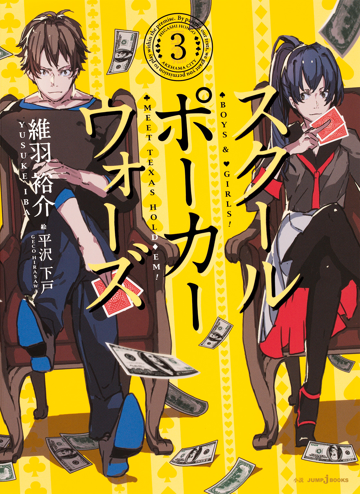
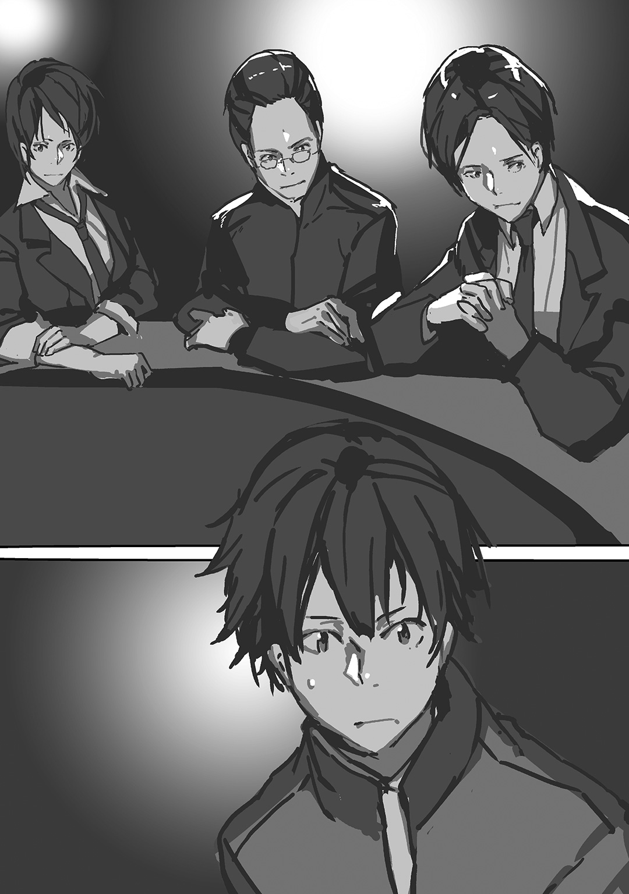

| スクールポーカーウォーズ 3 | |
| 維羽裕介 & 平沢下戸 | |

この本は縦書きでレイアウトされています。
また、ご覧になる機種により、表示の差が認められることがあります。
この作品はフィクションです。
実在の人物・団体・事件などにはいっさい関係ありません。
例の戦いから数ヶ月が経った。
あの伝説的な勝利の後、我々ポーカーモンスターズに何が起きたかと言うと、特に何も起きなかった。
もちろん新聞部の特集が何週にもわたって組まれ、幾つかの重要ハンドについて考察が行われ、あれは壮大なイカサマだったのではないかという流言飛語が飛び交う事もあった。
だが、それも今では沈静化し、こうして静かな第五自習室の中でのほほんと校内新聞を読む事ができるわけだ。
第五自習室の中央にどかんと置いてあるポーカーテーブルにもらったばかりの新聞を置いて、とりあえず日課のようにちょっと格好良い感じで「Poker Monsters」と窓ガラスに文字を書き殴り、熱いカフェラテでも飲もうと思ってガスコンロの上のモカエキスプレスを火に掛けながら、十二月のカレンダーを一瞥する。
まったく平和な冬の一日だ。
木枯らしが吹いて外はめっきり寒くなり、窓ガラスは結露がひどい。隊長は結露を放置しているとカビになる！ と躍起になって乾いた雑巾で拭いていたが、男四人はどこ吹く風で結露した窓に指でいたずら書きをして遊んでいた。
「やあ、浦原くん」
第五自習室の扉が開いて声が聞こえた。特に見向きもせず、ぼーっとガスコンロの火を眺めながら、
「カフェラテ飲むか？」
「いいねえ。僕はエスプレッソにしようかな」
冷蔵庫から取り出した牛乳を理科室から調達した耐熱ビーカーに入れながら、声を掛けてきた男を横目で捉える。
柳である。
我らがポーカーモンスターズの頭脳であり、落ち着いた物腰と穏やかな物言い、そしていつも浮かべている笑顔が特徴的だが、その笑顔が薄っぺらいと皆から言われている。
この男は高校入学を有利にするために、校内のポーカー活動を取り締まるポーカー審議会のポストを求めてこのサークルに加入した。なんて不純な動機だと思うかもしれないが、このサークルは経歴不問・動機不干渉が原則だ。
「本当はもっと早く来たかったんだけれども、サークルの補正予算打ち合わせが長引いちゃった」
「揉めたのか？」
牛乳を入れたビーカーを電子レンジに突っ込んでから振り向くと、柳はデミタスカップを指で掲げながら皮肉な笑みを浮かべた。
「予算配分ってのは、幼稚園児に大きさの違う飴玉を配るようなものだからね」
そりゃ揉めそうだと呟きながら、こぽこぽと音を立てるモカエキスプレスを眺めていると、扉が勢い良く開いた。
「誰か校内新聞読んだか!? まーた新聞部がある事ない事書いてるぞ！」
赤村だった。
険しい相貌と粗野な言動が目立つが、割と気弱な一面も持ち合わせる複雑な思春期少年である。かつてはサッカー部のエースであったが、先輩と一悶着を起こした後に引きこもりとなり、その先輩に恥を搔かせてやろうとこのサークルに加入した天然パーマである。引きこもり時代の話には触れない事がサークル内の暗黙の了解となっている。たまにこの男が使った後のパソコンの履歴を調べると「縮毛矯正」という検索ワードが出てくるが、それもやっぱり触れない事となっている。
「まだ読んでないが、どうせ俺達の中傷記事だろ？」
ポーカーモンスターズには敵が多い。
元々協調性など皆無の面々だし、校内の尊敬を一身に集めていた明浜撲克倶楽部を打ち倒した事も広く不興を招いた。
赤村がポーカーテーブルの上に置いてあった新聞に手を伸ばす。赤村は見開きの記事を読むなり顔をしかめて、
「ほらこれ、夜中に校舎に忍び込んだ生徒と俺達を結びつけてる。しかも根拠は何一つないんだぜ」
「どれどれ」
確かに校内新聞の記事には「校舎に現れた謎の釣り人！」の見出しと共に、真夜中に釣り竿を持った子供達を見たという目撃者の証言や、その日に校内で赤外線警報機に引っかかった侵入者の話を紹介し、記事の最後で「最近校内を賑わせているポーカーモンスターズとの関連性について調査を続けていく」との記述があった。
「あいつらは、この界隈で事件が起きると全部俺達のせいだと思ってる節があるからな」
赤村と二人揃って鼻息荒く腕を組む。
賢明なる読者諸氏はマスメディアにありがちな煽り立てるような記事に憤慨するかもしれないが、どうか安心して欲しい。釣り竿とタモを持って夜中の校舎に忍び込み、屋上のプールで夜釣りを敢行したのは紛れもなく我々なのである。
長い長い溜め息を吐き終えた赤村が手にした新聞を振って、
「姉御の目に入る前に処分しておいた方がいいな」
「もう遅い。昼休みに新聞記事の件でインタビューを受けてた」
「だとよ主犯格」
赤村が部屋の隅に向かって声を張り上げると、第五自習室の掃除ロッカーの隙間から大きな瞳がこちらを覗き込んだ。
「......気配殺してたんだけど、分かった？」
「ロッカーの扉に制服の裾が挟まってたから一発で分かった」
「浦原くんも気付いた？」
「もちろん。てっきり自戒のために入っているものかと」
ロッカーを開けた小此木が力なく微笑んだ。
見た目は人畜無害なおかっぱ少年だが、このサークルにおいては人畜無害な見た目ほどヤバい奴という法則がある。端から見ると悪そうな顔をしている赤村や自分は、むしろ常識人枠に入ると思う。
面白い事をするために命を賭けている小此木は、海外の電脳カジノで荒稼ぎをしていた犯罪者であり、とっ捕まえた我々が脅し、その犯罪行為を黙秘する契約でこのサークルに参加している。
電脳カジノでは日本円にして数百万という大金を稼いでおり、警察に監視されている電脳カジノの口座から合法的な手段で軍資金を引き落とし、ちゃっかりその手中に収めているらしいが、詳しくは知らないし、そもそも知りたくない。
小此木は第五自習室の隅に張ってあるハンモックに座り込んで、
「隊長の怒りが収まるまで静かにしていようかなあって。ねえ、浦原くん。隊長どのくらい怒ってた？」
はて、と左上に視線をやる。
昼休みに新聞部からインタビューを受ける前、二年四組の教室の戸を開いた隊長は開口一番、浦原くん！ と声を荒らげていた。
小此木くん見なかった!? そう。校内新聞見た？ 知らないわよ夜釣りって何よ何なのどうして小此木くんはこうやって厄介事を持ち込んでは大きな騒ぎにしちゃうの!? ああもう新聞部に捕まって「いやぁ、それぼくなんですよお騒がせしてすみません」とか言う前に口封じしなくちゃ。じゃあ見つけたらすぐに第五自習室に出頭するように言ってよね。――あ、新聞部の長井さん。どうしたの？ 最新号？ ううん、まだ読んでないけど。......学校のプールで夜釣り？ 某Ｏ氏が竹で釣り竿を作っていた？ 知りません、初耳です。すみませんが、個別の案件についての見解は控えさせていただきます。ちょっと道を空けて！
「......あんなに怒った隊長は久々に見た」
「過去の事件で言うと？」
「んー、セミ事変くらい？」
その言葉に小此木が青ざめた。
セミ事変とは、登校の途中で捕まえたミンミンゼミを小此木が第五自習室にこっそり放ち、虫を苦手とする隊長が激怒した事件だ。隊長の鼻面にセミが止まった瞬間は男四人とも死ぬほど笑い転げたが、その瞬間、隊長はセミをむんずと摑み、開いていた二階の窓から地面に向かって目にも留まらぬ速さで投げ放った。セミはグラウンドの土に強く叩き付けられた後、地面を滑ってまっすぐな線の跡を残し、その天寿を全うした。セミに罪はないのに。
その後、第五自習室にセミを持ち込んだのは誰か。そいつを一発殴らねば気が済まないとシャドウボクシングを始める隊長の姿に、男達は大いに戦慄を覚えたのであった。
今回、小此木は「プールの水が凍ったら、中にいる魚がどんな感じで凍るのか気になったから」というえらく残虐な理由で、近所の川で捕まえた魚を真冬のプールに放流したと供述している。魚そのものは隊長に気付かれる前に男四人で秘密裏に捕獲＆放流したのだが、隊長の耳に入ってしまった以上、セミ事変と似たような結末に至るであろう事は容易に想像できた。
ご愁傷さんと呟いて、モカエキスプレスを手に取って牛乳の入ったビーカーと柳のデミタスカップにエスプレッソを注ぐ。ふと視線を横に動かして、
「ところで、そこに置いてあるクッキーはどうした？」
おんぼろノートパソコンの横に置いてあった手作りのクッキーを見つけて誰ともなしに呟くと、ハンモックで読書を始めていた小此木が顔を上げた。
「それ、もらいものだから食べていいよ」
「ありがたい、腹減ってたんだ」
クッキーを手に取ってシャーロック・ホームズ全集を読んでいる小此木を見る。普段のこいつらなら我先にクッキーに手を伸ばしそうなものだが。
「なんでお前ら食べないの？」
「うん、もう少ししたら食べようかな......」
妙に歯切れの悪い小此木の返事を聞いて、再びクッキーに視線を戻す。
「隊長が来たら皿ごと食べられちまうぞ。その前に全部食べて証拠隠滅しちまおうぜ。誰が作ったんだこれ。見た目が綺麗だから月森って事はないだろうが、戸叶？ 片木？ それとも――」
「うちの姉ちゃん」
小此木が発したその言葉を脳が理解したのは、まさにクッキーが口に入る瞬間だった。
そうっと手を動かしてクッキーを口から取り出す。
「......大丈夫か、これ」
小此木の姉は東本郷中学校でも比類なき危険人物だ。そんな人物の手作りクッキーを食べるくらいなら素人の捌いたふぐを食べた方がマシだという人だっていよう。自分だってそっちの方が安心できる。
手にしたクッキーをまじまじと見つめる。
見た目は問題ない。チョコチップが混ざっていたり、真ん中にいちごジャムが載っていたりするが、極々普通の手作りクッキーだ。匂いを嗅いでも異臭はしない。
「依存性のあるものとか入ってないだろうな？」
「分かんない」
危ないと思ったら降りる、その勇気が大切だ。
手にしたクッキーを皿に戻して、手についたかすを床に払った。そして他の三人に向かって重々しく頷く。
「これは隊長に残しておこう。きっと少しは怒りを抑える役に立つはずだ」
隊長は部活棟の入り口でポーカー審議会の木佐委員に捕まっていたので、第五自習室に来るまではまだ時間が掛かると思われる。
「浦原くん」
小此木が座っていたハンモックを吊した柱の先を指差して、
「ハンモックを吊した釘みたいなのがそろそろ抜けそう」
「そんなもん自分でやれ」
「誠に遺憾ながら、身長が足りないようです」
小此木は中学二年生にしてはかなり小柄なので、椅子を使っても届くまい。
その辺りにあったとんかちを手にして空いていた椅子に上がり、ふと二ヶ月前にも同じ事をしたなと思いながらハンモックの紐を吊したフックをとんとこ叩く。
――秋に入り、最初に行われたのは第五自習室の模様替えだった。
納涼お月見杯を終えて、元気に登校してきた日の放課後、意気揚々と第五自習室にやって来たポーカーモンスターズを出迎えてくれたのは、ポーカーテーブルとその上に載っていたチップとトランプだけだった。元々の家主であるうさぎ強盗団の奴らはありとあらゆる私物、椅子や書籍の詰まった本棚、自分達がうさぎ強盗団の部費で勝手に購入したホワイトボードに至るまでの全てを持ち去ってしまったらしい。
しかし隊長はめげなかった。
第五自習室の床に体育座りを強要された自分達を前にして、隊長による第五自習室改造計画についての概要が述べられた。
――北欧風の部屋にしたいと思ってるの！
絶対に無理だと思った。
隣の赤村と柳も同じような顔をしていて、小此木はあらぬ方向を向いてぼーっとしていたが、隊長はそれに気付かず、鞄の中から一冊の本を取り出した。
見てこれ、図書室で借りてきた『オトナ女子の北欧モダン風インテリア』。これを参考にしようよ。ほら、ここって木造校舎じゃん。イメージは北欧のカフェみたいな感じで、余計な物は置かないの。木材で椅子を五つ作ってポーカーテーブルに備え付けにして、ソファも作ろうね。わたしの家にハンモックあるから柱に吊して椅子みたいにしよう。そうそう、うさぎ強盗団が業務用みたいなキャビネット持って行ってくれて本当に良かった。あれすっごいダサかったもんね、北欧とは対極にある感じ。
つまりキャビネットは南欧という事なのだろうか？ ソファなんてそんな簡単に作れるものなのか？ そもそも北欧に行った事もない自分達が北欧風の部屋をデザインするなどおこがましいのではないか？ オトナなのに女子ってどういう事？ 数々の疑問が過ぎったが、しかし楽しそうな隊長に対して誰も意見を具申する事はできず、とうとう今日まできてしまった。
もちろん協力する気持ちはあったのだ。
柳はコーヒー豆とコーヒーカップ、それにモカエキスプレスを持ってきた。これはカップ麵のお湯を沸かす時にも一役買っている皆の人気者だ。裏に刻印されたMade in Chinaは見なかった事にした。
小此木は夜中に自転車で町内を走り回り、捨てられていたソファを見つけたので男達で運び出してダークブルーの布を張り直した。隊長はご満悦だったが、布を張り替える前はカビだらけだった事は今でも男四人の秘密になっている。
自分と赤村は深夜の東本郷第二小学校に潜入して放置されていた廃木材をかき集め、休日に赤村宅でのこぎりとやすりを駆使して手作りの椅子を作る事となった。素人が五つの椅子を作るというのはなかなかに難度の高い作業であり、技術家庭の教科書片手にあーだこーだと言い連ねた。お昼には赤村家にてラーメンをご馳走になり、その際に赤村のご両親に挨拶をしたのだが、とても品の良い夫妻だった。どうしてこのご両親からこの子が......という事と、ご両親が二人とも直毛であった事がすごく気がかりであったが、家族構成について質問する事は憚られた。
出来上がった五つの椅子は思わずうっとりしてしまうような出来栄えで、翌日第五自習室に搬入した際には隊長からは「すごい！ オブジェ!? ニューヨーク近代美術館にありそう！」とのお言葉を賜る事ができた。
各々が「北欧風インテリア」と言い張っては自由気ままに荷物を持ってきた結果、今の第五自習室は北欧風カフェと呼ぶよりは粗大ゴミ置き場に近いが、誰もその現実を直視しないまま現在に至っている。
「浦原、腹減ってるならファットマン行こうぜ」
「いや、もう寄ってきた」
鞄からファットマンの紙袋を取り出して、新メニューであるルーベンサンドイッチに齧り付く。一口齧った瞬間、コンビーフの肉汁とザワークラウトの酸っぱさ、チーズとサウザンアイランドドレッシングの甘みが口の中に広がった。
匂いに釣られて寄ってきた小此木を追い払い、校内新聞を読み耽る。新聞に記載されていた我が校名物の菓子レビューをしげしげと眺めながら、
「小此木、ちょっと金貸してくれない？ 菓子レビュー見てたら腹減ってきちゃった」
「おいくら？」
「三〇円。よっちゃんいか食べたくて」
小此木はまるで借金の連帯保証人になってくれと言われたかのようにぶるぶるぶると首を振って、
「三〇円!? そんな大金貸せないよ！ 何言ってんの!?」
だよなあと呟きながらカフェラテをちびちび飲んで身体を温めながら、端まで目を通した新聞を折り畳む。
「新聞、誰も読まないなら捨てるぞ」
そう言いながらゴミ箱の方に近付くと、ハンモックでゆらゆらしていた小此木が立ち上がった。
「待って待って待って。ぼく、ポーカーモンスターズの記事をスクラップにしてるんだ」
小此木が洒落た本棚からスクラップブックを取り出して、はさみをちょきちょきと鳴らした。納涼お月見杯を終えてからもポーカーモンスターズは暴虐の限りを尽くしており、毎月のように校内新聞の紙面を騒がしていたが、小此木はそれを面白がり、記事を切り抜いてスクラップブックを作っているのだ。
最古の記事は「納涼お月見杯、優勝サークルによる声明発表！」だった。
【東本郷中学校新聞10月号その１】
先週末に行われた納涼お月見杯にて王座戦に勝利したポーカーモンスターズ（以下、モンスターズ）の江頭代表より声明が発表された。声明文は関係機関への謝辞、これまで倶楽部が果たしてきた役割や責務を担うといった内容であったが、一般プレイヤーにとって重要なのは下記の一点である。
・今後モンスターズは倶楽部同様に王座戦に応じる義務を負うものとする。これは本日より有効となる。
モンスターズが倶楽部に勝利した事でいわゆる勝ち逃げが危惧されていたため、同氏の発言は他のプレイヤーから歓迎ムードで受け入れられている。
そして最新の記事は「凍結ウーロン杯、王座戦挑戦者は現れず！」だった。
【東本郷中学校新聞11月号その３】
倶楽部が敗れて新たな王者にモンスターズが君臨してから早二ヶ月、冬の公式団体戦「凍結ウーロン杯」が迫るなか、王座戦申し込みの締め切り日までに挑戦サークルが一つも現れなかった事をポーカー審議会が発表した。
その記事を読んだ隊長は、王座戦の挑戦がなかった事をご祝儀タイムだと笑っていた。
そんなわけで第五自習室を占拠して欲望のままに悪事を働くポーカーモンスターズは、だらけにだらけきっているのであった。
「暇だね」
「暇だねえ」
「暇だな......」
「暇だから帰ろうかな、――いや待て待て。隊長がもうすぐ怒りながらやって来るのにこんなにだらけてちゃまずいぜ」
慌ててこいつらに活を入れようと思ったが、小此木がスクラップブックを本棚に戻しながら、
「入ってきた瞬間に真面目な会話すれば大丈夫だよ。ところで今週の魔導図書館司書連盟読んだ？ どのキャラが好き？」
小此木の一言に赤村があくびをかましながら、
「マデリーン・パーカー。あの漫画、そろそろ打ち切られそうだよなあ。もうちょっと頑張って欲しいよなあ」、「僕は第七情報技研の面々かな。あと主人公も好きだよ。主人公が後方支援担当って珍しいよね」、「あれを後方支援って言うならな......。俺は小林が一番好きだ。中距離砲戦でやり合ってもよし、遠距離狙撃で削ってもよし、一番汎用性の高いキャラだと思うね」、「来週号は土曜日だっけ。――あ、次の土曜日って練習休みじゃん。みんな何するの？」、「寝る。あと散髪行かなくちゃ。いい加減髪の毛が重たくなってきた」、「髪の毛が重たいってすげえ表現だな......。俺はケッヂマーク始めたからレベル上げとアイテム稼ぎ」、「僕は受験勉強かな」、「みんな自由に過ごせていいですなあ。ぼくは姉ちゃんが家にいたら脱出、家にいなかったらのんびり読書するよ」、「大変だねえ」、「大変だよ。この間もさあ、姉ちゃんが家でさあ、ぼくが楽しみに取っておいたカニ味噌の缶詰食べておいてさあ、なんて言ったと思う？ 分からない？ 分からないよね？ 分からない方がいいよ。もー姉ちゃんマジ煬帝！」、「親父に聞いて余ってたらもらってきてやるよ、カニ味噌の缶詰」、「本当に!? ああ、ぼくもう一生浦原くんについていくよ！」、「いいよ、ついてこなくて」、「あはは厄介そうだもんな！」、「みんなお疲れ。全員揃ってる？」、「でもそこはオリジナルレイザーにドンクベットすべきじゃないかな」、「いいや、俺なら様子見する。手札の範囲が絞れているからこそ、相手により多くのチップを賭けさせたい」、「俺も浦原と同意見だ。ここでスロープレイするメリットはデメリットよりも大きいはずだ」、「いやいやいやいや、絶対駄目だって。さっきの設定だとオリジナルはドンクベットすれば70％以上の確率でレイズするんだよ!? それを回収するのは善良なる市民の義務だってば」、「ねえ、議論が活発なようだけど、一旦静かにしてもらえないかしら」、「おお、隊長。すまんな、ポストフロップ戦術について討議していたんだ」
今、気付いたかのように振り向くと、扉の前に隊長が立っていた。
本名、江頭妙子。
ポーカーモンスターズの隊長であり、サークル唯一の女子生徒であり、先の秋期公式団体戦「納涼お月見杯」に勝利するために参加者百十五名を徹底的に分析する作戦を立案した我がサークル最強の――つまりこの学校最強の――ポーカープレイヤーだ。十年前に彼女の兄が電脳カジノで荒稼ぎした事がきっかけで、この中学校でポーカーが爆発的に流行った経緯があるが、その真相を知る者は少ない。
そして隊長の後ろには、もう一人見慣れない人物が立っていた。
「紹介しておくね。ポーカー審議会の木佐さんです」
口々に知ってるーという声を発する。
二年四組の木佐は自分の同級生だ。多くの支持を集めてポーカー審議会の委員に当選した強者で、教育委員会から提出された次年度改革要望書への対応を巡ってガチガチに闘り合ったイン・ザ・ゴミ箱事件や、史上二度目のポーカープレイヤー認定証剝奪処分が下った踊る木曜日など数多くの問題を調停し、解決に導いたその手腕と熱血ぶりは高く評価されている。
「皆さん、こんにちは」
隊長はにこやかに微笑みながら部屋を見回して、小此木で視線を止めた。
「小此木くん、あとで話あるから。――ところで窓ガラスに文字書いたの誰。わたし、跡が残るからやめてって言ったよね」
まずいと思って慌てて自分が手を挙げる。今、余計な怒りを煽る事は避けたい。
「小此木です」
「えっ」
「小此木くん。それもあとで話そうね」
隣で驚愕している小此木の肩をぽんぽんと叩く。夜釣りの時には小此木にさんざん迷惑を掛けられたのでこのくらいの借りは返してもらっても文句はあるまい。
「今日は定例ミーティングの前に木佐さんからお話があります。あ、木佐さん。適当なところに掛けて下さい」
「ありがとう」
「木佐、クッキーはどうだ？」
椅子に座った木佐にクッキーの山を勧めてみると、
「ありがとう。いただきます」
「あ、わたしも食べたい」
クッキーに手を伸ばした木佐を見て、隊長も同じようにひょいっと手を伸ばしたが、クッキーに到達する直前で、その腕を摑む事に成功した。
「隊長は後にしなさい」
「なんで？」
「いいから」
その言葉を訝しんでいる隊長の横で自分と柳と赤村と小此木が固唾を呑んで見守るなか、木佐がクッキーを口に運んだ。
これがトリカブトクッキーなら体内の活動電位に異常が生じて嘔吐や呼吸困難を引き起こすはずだし、マリファナクッキーなら薬理作用で多幸感や酩酊感を覚えて呂律が回らなくなるはずだし、フォーチュンクッキーなら大凶が出てくるはずだ。
各々が椅子に座り、一人あぶれた小此木がハンモックに座ったのを確認してから木佐が口を開いた。
どうやらクッキーには即効性の毒物は入っていないらしい。
「皆さんの貴重なお時間を割いていただいて感謝します。あたしはポーカー審議会に所属し、渉外連絡会にも籍を置いています。渉外連絡会の活動内容はご承知の通り、明浜市内の中学校にポーカーを広め、協力体制を築く事にあります」
ポーカー審議会の委員が外郭団体に名を連ねる事はよくある話だ。互いの組織の意思疎通が簡略となり、弾力的な運用が可能となる。そして、この時期に渉外連絡会が我々の元を訪れる理由は一つしかない。
「そして、今年も市内対抗戦の時期がやって来ました！」
渉外連絡会がポーカーを広めている明浜市内の中学校が集まる年一回のトーナメントイベント、それが市内対抗戦だ。
あーあーあれねという一同のリアクションに物怖じせず、木佐はぐっと拳を持ち上げた。
「先日、ポーカー審議会の定例会議でも対抗戦出場の承認が取れました。各校でポーカー活動も盛んになりつつある今こそ、明浜市内のポーカー活動発祥の地である東本郷中学校の強さを見せつけてやりましょう！ つきましては、その第七回大会に東本郷中学校の王座を保持しているポーカーモンスターズに出場してもらいたいのですっ！」
勢い余って席を立ち、企画書をばしんとポーカーテーブルに叩きつけ、身体の前で拳を握り締めて熱意溢れるスピーチをしてくれた木佐を呆けた顔で見つめる。
「......出るメリットって何かあんの？」
そんな自分達の溢れんばかりの想いを赤村が代弁してくれた。
それを聞くなり木佐がぶるんぶるんと身体を動かして、
「メリット！ 赤村くんはメリットがないと出場しないの!? 六年前に諸先輩方が明浜市内にポーカー活動のネットワークの礎を作り、渉外連絡会が日夜努力して他校との調整に勤しみ、ようやく連携体制が整いつつあるこの時期に、よくそんな事が言えるね！」
むちゃくちゃ暑苦しいが、こういう熱さは好感が持てると思う。しかしだからと言って、どうでもいいトーナメントにうつつを抜かすほど自分達は暇ではないのだ。
どうやら本気で怒っているらしい木佐をまあまあと両手で制して、穏やかに話し掛ける。
「落ち着け、木佐。......ほら、俺達も凍結ウーロン杯の準備とかあるしさ。その市内対抗戦に俺達が出席する事で得られるメリットがあれば是非参加したいと思うんだが」
「そういう日本人的な断り方！ 浦原くん、あたしそういうの嫌い！」
思わず笑ってしまった。
それから静かに話を聞いていた隊長に視線を向ける。
「隊長はどう思う？」
いつもなら「せっかくだから参加しようよ」と笑うところだが、隊長は伏し目がちに言い淀んだ。その珍しい光景に、男四人の注目が集まる。
隊長は頭に手をやって、ストレートの髪の毛をゆっくりと撫でた。
「......一般的には知られていない事実ですが、市内対抗戦の裏ではお金が動いています」
へえ、と思う反面、それも当然かと思う。
市内対抗戦は校内で行われるポーカートーナメントよりも遥かに金の掛かるイベントだ。会場設営費も交通費も食費も掛かり、各校で費用を負担する。でかい金が動けば、その裏でこっそり稼いでやろうという連中が現れるのは自然の摂理だ。
「市内対抗戦で自校が優勝できるかどうかにお金を賭ける、それだけの事です。......賭ける金額そのものは大した事ないし、そもそもポーカーがお金を賭けるゲームである事も分かってるよ。でも、わたしは中学生が行うイベントでお金を賭けるのは好ましくないと思う。だから、その悪しき風習を絶ちたいと考えています」
金の絡む物事はいずれ腐敗を招く。
それは隊長の口癖であり、この学校が証明した事実でもあった。そして恐らく経験則に基づくものでもある。
「姉御がやると言うなら、俺はやるぜ」
「ぼくも！ なんだか面白そう！」
赤村の決断は早く、小此木は面白そうな事に目がない。その隣の柳はしばし悩んだ後、真面目な顔で口元に手をやった。
「僕は反対だな。市内対抗戦でお金が動いているのは知っているけれど、僕らの在学中にそれが問題になる可能性は低いと思う。敢えて火中の栗を拾う必要はないんじゃないかな」
隊長がまるで女王のように仕切るこのサークルにおいて、柳はあえて悪魔の代弁者になる事が多い。柳は推し量るような目つきで隊長を捉えた。
「具体的にはどうするつもり？」
「市内対抗戦会議で、賭けの胴元となっているプール金の解体を提案したいと思っているの。解体した後の事まではまだ考えてないけども......」
「プール金は渉外連絡会の利権だから、他校だけじゃなくてうちの渉外連絡会も反対すると思うな」
「――先日、江頭さんから提案を受けて、うちの委員は全員納得させました！」
木佐の親指がにょきっと現れた。
この学校では、誰かが脅迫に屈した時にも納得したという単語がしばしば用いられる。大事なのは過程ではなく結果なのは世の常である。
鼻息荒い木佐を見て、柳が肩をすくめた。
「あとでプール金の具体的な捻出方法と、過去に東本郷中学校が出した裏金の概算金額を教えてもらえるかな？」
そう言って隊長に軽くウインクする。
「現在のプール金がいくらになっているのか試算しておくよ」
大抵の場合、柳は目的の意義よりも、それを成し遂げるために必要な具体策に興味を持つ。自分の役割がサークルの頭脳である事を割り切っているのであり、そういうところがこいつの良いところだ。
そして隊長が自分を見つめた。その静けさを孕んだ瞳を、以前何処かで見かけたような気がした。
「......浦原くんはどう思う？」
ポーカーモンスターズというサークルに勧誘されたその日から、自分は隊長のおもちゃ箱に入っている兵隊だと自負している。
そしてもちろん、おもちゃの兵隊は隊長の指示に従うのみである。
＊＊＊
その日の練習を終えて第五自習室を出た後、ポーカー審議会の教室に立ち寄るという柳と別れ、隊長に怒られてすっかり憔悴しきった小此木とそれを気遣う赤村と校門で別れ、すっかり寒くなった冬の夜道を隊長と歩く。
「すっかり冷えてきたな」
「もう年末だからねえ」
「コート、温かそうだな......」
マフラーを喉元まで引き上げて、隊長の温かそうなダッフルコートを眺める。
「浦原くんも着ればいいのに」
隊長は呆れ顔だった。確かに東本郷中学校には学校指定のコートがあるのだが、我が校には登下校の際に男がコートを羽織るのは軟弱者という風潮があるのだ。
「隊長とか柳とか小此木みたいな軟弱者にはなりたくない。小此木と言えば、......大丈夫かなあいつ」
隊長は首を傾げて真っ暗な空を見上げ、頰に指をやった。
「うーん、ちょっと可哀想だったかもねえ」
ちょっと。
夜釣りの件で隊長に全てを洗いざらい話した小此木は、セサミストリートのテーマソングを二時間延々と聴き続けるという懲罰を命じられたのだが、二時間経った後にイヤフォンを外した小此木はトイレで吐いていた。それでも隊長の中ではちょっと可哀想な程度なのだ。隊長を怒らせるのは避けたいと改めて思う。
最近はすっかり日が暮れるのが早くなった。ほーっと吐いた白い息が電灯の明かりに照らされる。
「――隊長の気持ちは理解できるぞ」
隊長はそのまま一歩、二歩、三歩と足を動かした。
「......ありがとう」
十年前、この学校では一代目と呼ばれる隊長の兄は東本郷中学校に在籍する傍ら、海外の電脳カジノで二〇〇〇万円余りの大金を稼いだ。
結局それは警察の知るところとなり、彼は転校を余儀なくされたが、その話を知った東本郷中学校の生徒達はポーカーというゲームに熱狂し、金銭の授受を伴うポーカーが無秩序にプレイされるという暗黒時代を経て、生徒に公正かつ倫理的指導を行うポーカー活動審議委員会、通称ポーカー審議会が生まれる事となった。
当時、四歳であった隊長に何かができたはずはないが、それでも隊長は当時の事を悔いている。
「まだ未熟な中学生であるわたし達は、いつかどこかで決定的なミスを犯す」
――隊長が内面を晒け出す事はあまりない。
それはきっと、自分の兄がこの学校に多大なる混沌を引き起こした後ろめたさに起因しているのだと思う。その事を知っている者は少ないし、それは隊長が心を開く事ができる人物が少ない事を意味している。
「お金の絡む物事はいずれ腐敗を招くから、プール金の存在は時間が経てば経つほど、金額が大きくなればなるほど、誰かが悪用する確率は高まっていく。今、わたし達にできるのは、その時のために少しでも被害を小さくしておく事だと思うんだ。ただポーカーが好きな人達のために。それと多分、加害者のためにも。わたしの兄のような人間を二度と出しちゃいけないし、兄が引き起こしたような無秩序な混乱を二度と起こしちゃいけない、って思うんだよね」
そこまで言ってから、隊長が恥ずかしそうな表情で自分の顔を覗き込んできた。
「ねえ、こういう考え方って青いかな......？」
青いか青くないかで言えば、びっくりするほど青臭い。
しかし、生半可な気持ちで誰かの個人的な感情に立ち入るのは憚られるものがあった。
半年だけの、それもポーカーだけの付き合いだが、隊長の事はある程度分かっているつもりだ。だから、いつか言われた言葉をそっくりそのまま言い返した。
「......悪いけど、そういう話には興味ないんで」
隊長は一瞬呆気にとられた後にくしゃっと笑い、左肩にごんごんと頭突きをしてきた。
体育でバドミントンをやっていたせいか、ちょっと汗臭かった。
＊＊＊
日曜日の電車はそこそこ空いていた。
午前九時に本郷台駅で待ち合わせて根岸線に乗り込み、木佐は三人掛けの席に腰掛けて、自分と隊長に隣に座るように促した。電車がゆっくりと動き出し、三人の頭がぐらっと横に傾いた。
「象の鼻中学校って、ここからどのくらいかかるの？」
「乗り換え待ちも含めると四十分くらいかな」
明浜市立中学校対抗公式団体戦、――通称、市内対抗戦の事務局は毎年持ち回りで、今年は象の鼻中学校の渉外連絡会が担当だ。今日は会議のために事務局のある象の鼻中学校を訪ねる事となっている。今回、市内対抗戦に出席するだけではなく、事務局が保有しているプール金解体を提案しようとしているだけあって、隊長の表情はどことなく緊張している。
電車が動き出してしばらくしてから、隣に座っていた木佐が声を潜めて呟いた。
「......事の始まりは、やっぱりあたし達なの」
いつもは熱血過ぎて話の最後で大声になってしまう木佐も、公共機関ではお静かにという基本的ルールを遵守する気持ちはあるらしい。
隊長が木佐の方を向いて、首を傾げた。
「市内対抗戦？ それともお金を賭けてる話？」
「残念ながら両方とも。二人はボランティア不足問題って知ってる？」
隊長と一緒に首を横に振る自分を見て、木佐がいつものように真面目な顔で口を開いた。
「あたしはね、ポーカーの公式団体戦を開催するにあたって、会場設営やディーラーを務めるボランティアは東本郷中学校で最も貴重な人材の一つだと考えてる。彼らの協力なくして東本郷中学校でポーカーをする事なんてできないでしょ？」
それはまあ、そうだろう。
中学一年生の春から必死にポーカーのルールを覚え、公式戦開催準備に会場設営、その他有象無象の小間使いに耐え忍び、いよいよディーラーとしてデビューできたかと思ったら、チップの計算を間違える度に陰口を叩かれ、「こいつ、一〇〇ドルって言った！ レイズ無効！ レイズ無効っ!!」、「今のは確認だから！ そうでしょディーラーさん!?」みたいな事を言う幼稚園児のようなプレイヤーを宥め、バッドビートを食らったプレイヤーの罵詈雑言にめげる事もなく、必死にボランティア活動を続けるのだ。
そう。
すべてはポーカー審議会選挙で当選し、明浜市内の高校への推薦入学のチケットを手に入れるために。
「でも、一学年で二十名近く在籍するボランティアの中から、ポーカー審議会に選ばれるのは僅か五名。落選したボランティアがそのまま引退してしまうのも無理からぬ事でしょ？」
今年の五名に選ばれた木佐は、同情するように胸に手を当てた。
「ポーカー審議会選挙が行われた直後の秋口から来年の新入生という新たな生け贄が見つかるまでの間、ボランティアが足りなくなっちゃう。ボランティアを集める予算もなく、その時期のためだけにディーラーを育成する事は難しい。だから、当時のポーカー審議会はこう考えた。『校内でボランティアが足りないのであれば、校外でかき集めるしかない。明浜市内の中学校にポーカー活動を広めて、貴校におけるポーカートーナメント実演研修とか何とか理由をつけてボランティアを募ろう』......これが渉外連絡会の発足した経緯。だから市内対抗戦というか、明浜市にポーカーを広めるという動機そのものが方便で、実際には他校の生徒をうちで働かせるための策略なの！」
その大声に慌てた隊長が口元に人差し指を立てる。
「ちょちょちょ、木佐さん。声落とさなくちゃ」
「――ごめんっ、つい」
「まあ、世の中大体そんなもんだろ。持ちつ持たれつお互いに」
あくびをしながらそう告げると、木佐は曖昧な表情で頷いた。
「江頭さんにはもう話したけど、プール金についても浦原くんに説明しておくね」
そこで電車が隣駅に到着した。
信じられないような冷気が入り込んできて、いかにも体温が高そうな隣の木佐に「もう少しくっつこうぜ」と提案したら心底嫌そうな顔をされた。木佐は隊長の方へとにじり寄り、隊長が「よしよしおいでおいで」と嬉しそうに木佐の肩を抱き寄せた。
これまで隊長が女子と話している光景はあまり見た事がなかったが、プライベートでは意外と感情表現が豊かな女子らしい。モンスターズに在籍している子分四人と接する時は斬首刑を好む女王のような振る舞いをするが、こういうのを見ると人並みの女子中学生なんだなとしみじみ思う。
電車が再び動き出し、周囲に人がいない事を確認してから、改めて木佐が声を潜めた。
「プール金の発案者は、五年前に氷取沢中学校に在籍していた生徒。元々は校内で行われるポーカートーナメントに比べて、遥かにお金が掛かる市内対抗戦を円滑に行うために提案したと言われてるわ」
「その捻出方法は？」
「やり方はすっごいシンプル。例えば、各校の渉外連絡会が一斉にポーカー活動用品購入――ポーカーテーブル、トランプ、チップ、パソコンとか――の申請を行って、一つの学校が一〇万円で購入したポーカー活動用品を他の六校で使い回すと貸借対照表をすり抜けた六〇万円が生まれる。これを数年間繰り返して、大規模なプール金を作ったの」
「で、そのプール金がどうして賭けの原資に化けた？」
その言葉を聞いた木佐と隊長が二人揃って溜め息を吐いた。
「三年前に東本郷中学校で大規模な財源不足が発生したの。倶楽部はその役割の重要性からほぼ無制限の予算を供給されていたけれど、往々にして使い過ぎちゃってね。......ポーカー審議会がその不足分を補塡しようと潤沢なプール金に目をつけたの。『プール金を胴元にして各校でお金を賭けませんか？ ちょっとした余興ですよ、大人だってゴルフで一〇〇円握っているでしょう？』みたいな誘い文句で。他校は嫌がったけれど、『ポーカー審議会規約の改定時に各校は拒否権を有する』って条件で手を打ったんだ」
「意味あんのか、それ」
木佐はうんうんうんと頷いて、
「東本郷中学校が規約改定して『どこどこの中学校の市内対抗戦出場を認めない』ってやっちゃうと、プール金奪われちゃうからね。非公式に残されてた当時の議事録を読んだけど、ポーカー審議会は予算決めの権利さえ握っておけばどうとでもなるって考えたみたい。それで三大会連続で東本郷中学校が優勝してプール金を掠め取るっていうお決まりの流れになっちゃった」
「毎度の事だが、うちの学校のごり押しっぷりには驚かされるな......」
――東本郷中学校のポーカー審議会は、明浜市内のポーカー活動における事実上の最高意思決定機関である。
その下に初心者講習会やディーラー養成所など多数の外郭団体が設置されており、明浜市内にポーカー活動を布教する目的で設立された渉外連絡会もその一つである。
渉外連絡会は東本郷中学校の提案に賛同した明浜市内の六校にもそれぞれ設けられ、各校のポーカートーナメント開催や他校との交流活動を担っているが、そんな彼らも予算配分の実権を握るポーカー審議会の支配下にあり、それは稟議書の最終決裁者が我が校の榊原委員長である事からも読み解く事ができる。
所詮は彼らも外郭団体であり、すべてはポーカー審議会の胸三寸で決まるのだ。
「去年の賭け金は二万八〇〇〇円で、やっぱり倶楽部が優勝したから五万六〇〇〇円が返ってきた。でも、倶楽部の人達は誰もお金を賭けてなくて、ポーカー審議会の有志が集めたお小遣いが賭けの原資だったみたい。あ、一応言っておくけど、今年度のポ審予算は問題ないからね。これは九代目の樫野さんが清貧に甘んじていたからで――」
樫野さんの潔白を証明していた木佐の声が車両全体に響き渡るようになっていたので、隊長と同じように口元に人差し指を立てた。
「木佐、声が大きいって」
「――ごめんっ、つい」
昨年の大会では倶楽部が優勝したのだから、樫野さんや月森もこの件を認知していたに違いない。
自分達の勝敗が賭けの対象にされて、樫野さんはどんな気持ちだったのだろうか。ポーカー審議会や渉外連絡会のご機嫌取りも必要だと思っていたのか、内心ではポーカーテーブルに金を持ち込む事に反発していたのか、好きにやってくれと笑っていたのか、もちろんそれは分からない。
「......今年のプール金を管理してるのは象の鼻中学校の渉外連絡会って事でいいんだな？」
「実質的な責任者はそこのトップの篠原くんって事になるね」
その名前を聞いて思わず溜め息を吐く。
「苗字に『原』がついている奴に悪い奴はいないというのが俺の持論なんだがなあ」
木佐が笑った。
「悪い人じゃないよ。ただ、あたし達とは立場が異なるってだけ」
＊＊＊
象の鼻中学校は明浜市で最も新しい市立中学校で、港湾の埋め立て地に建てられた六階建ての校舎だった。校門のすぐ横にある警備室で入校受付簿に素性と訪問目的を記入し、「来校者」という許可証を受け取って首から提げて玄関に向かう。
来賓用玄関には既に関係者が待機していた。
「遠いところお疲れ様です。象の鼻中学校の篠原と申します」
こいつが、という目をなるべく押し隠す。
見た感じは育ちの良いお坊ちゃんという感じだった。先程まで先導していた木佐と隊長は急にもじもじし始めたので一歩前に出る。後ろに立つ隊長と木佐が小声で「格好良いね」、「イケメンだよね」と呟くのを無視して、
「東本郷中学校から来ました浦原です。本日は宜しくお願いします。後ろにいる女子の、髪の毛の短い方がポーカー審議会に在籍している木佐で、長い方がポーカーモンスターズ主将の江頭です」
何その紹介と後ろから抗議の声が聞こえたが、これも無視する。
「どうぞこちらへ。皆さんお揃いですよ」
篠原が自分達に微笑みかけ、それから左手でガラス張りのエレベーターを示した。
きっちり揃えられた三人分のスリッパの一番左側に足を入れる。急に小汚いスニーカーが気恥ずかしくなり、誰にも見られないように素早く棚に入れた。
「すごい。エレベーターがあるんですね」
生まれて初めてエレベーターを見たかのような木佐の声に、篠原が苦笑した。
「移動教室の際には一階から六階まで移動する事もしばしばですからね。ただ、普段は上級生しか使えない暗黙の了解があります」
いかにもな話だ。
木佐は篠原が首から提げているポーカープレイヤー認定証をめざとく見つけ、
「篠原さんはポーカープレイヤーでもあるのですか？」
「僕はポーカーサークル『象牙海岸』の副リーダーと、本校の渉外連絡会委員長を兼務しています。何せプレイヤー人口が少ないですからね」
篠原の発言を聞いた隊長が首を傾げて、
「象の鼻中学校にはポーカープレイヤーは何名くらいいるのですか？」
「自分を含めて十一名です。ポーカー活動揺籃の地である東本郷中学校にはとてもとても。確か、市内対抗戦出場校では我が校のプレイヤー人口が最も少なかったと記憶しています。本日も本来であれば象牙海岸のリーダーである瀬谷と一緒にご挨拶するのが筋なのですが、なにぶん人手不足でして」
エレベーターからは明浜の摩天楼と水平線まで広がる海が見えて、慌ててエレベーターの階数表示を見つめる事にした。高いところはどうにも苦手だ。隊長は眼下に広がる景色を一瞥して、
「わあ、良い景色ですね。大さん橋から客船が見える」
「それでも埋め立て地ですからね。僕ら生徒はごみの上の学舎と揶揄していますよ」
自分も世間話の一つや二つしないと無愛想な奴だと思われるかなと慌てて、
「自分も苗字に原がついているんですよ」
「へえ、そうですか」
あまり乗ってこなかった。
エレベーターを降りてすぐにカフェのような談話室を通り過ぎ、ざわめきの聞こえる会議室に入った。
机が四角く並べられ、出席者は席を立って自由に歓談していたようだったが、自分達が会議室に入った瞬間、ぴたりと会話が止まり、その場にいた全員からじっと見つめられた。誰何されるまでもなく、こちらが何者なのかを把握しているらしい。
正直言って、気持ち悪かった。
机には各校の名前が書かれた三角形の席札が置いてあり、その横にはチップの山が置かれていた。その数はきっかり三〇枚ずつ。このチップは、今日の会議において極めて大きな意味を持っている。
役者が揃った事を察して出席者は次々と着席し、自分達も「東本郷中学校」と銘打たれた席札の後ろに座った。
全員が着席したのを目で確認した篠原が教壇に上がった。
「定刻よりも若干早いですが、参加者が全員集まりましたので、市内対抗戦会議を始めさせていただきます。本日は議題が多岐に渡り、時間も限られておりますため、円滑な議事運営にご協力頂けますと幸いです。それでは資料の協議事項をご参照下さい」
――会議そのものは特別語るようなものでもない。
市内対抗戦の正式名称は「第七回明浜市立中学校対抗公式団体戦」、開催会場は象の鼻中学校の体育館、トーナメント形式は東本郷中学校の公式団体戦とは違い、シングルテーブルトーナメント形式だ。
五つのテーブルに各校のプレイヤーが一人ずつ座り、各テーブルで順位に応じた得点が割り振られ、各校の総合得点で勝敗が決する。総合得点が同点の場合は大将の順位の高い方が優勝となる。
シングルテーブルトーナメントはブラインド上昇が緩やかであり、より長時間プレイする事ができるため、ポーカー技術に長けた者が得をする。つまり東本郷中学校に有利なルールだ。この辺りからも市内対抗戦開催当初における我が校の優位性が読み取れる。
協議事項が全て終了して十分間の休憩の後、窓から見える客船が汽笛を上げると同時に各校代表者の手元に一枚のわら半紙が配られた。
「それでは市内対抗戦の出場申込書の提出をお願い致します。各校のサークル構成員二名および渉外連絡会代表者、計三名の署名を以て、出場申込書の効力が発生します」
そう説明した後、篠原がにっこりと微笑んだ。
「エアコンの風に飛ばされないように、机に置いてあるチップを重しに使って下さい」
会議室から笑いが漏れた。
いよいよこの会議の肝だ。
「氷取沢中学校は市内対抗戦に出場します」
氷取沢中学校の代表者が出場申込書の上にチップを一五枚置いて、前へと押し出した。篠原が厳かな表情で申込書を隣に座っていた生徒に渡し、注意深くチップの数を数えた。
――これが賭け金なのだ。
チップ一枚が一〇〇〇円を意味し、それだけの現金を保有している事を会議後に証明する必要がある。
金の出所は様々だ。
市内対抗戦参加プレイヤーと渉外連絡会委員の小遣い、各校が秘密裏に募った軍資金、かつての東本郷中学校のように組織ぐるみで金を突っ込むところもあるが、その額はせいぜい数万円だ。金を賭ける賭けないは各校の自由で強制される事はないが、年に一度のお祭りなので賭けない学校は滅多にない。
金を賭けた場合、優勝校が二倍の返金を受けられ、優勝できなかった場合は没収されてプール金に補塡される。
七校が参加する大会なので適正なオッズは合計七倍であると、かつての東本郷中学校は主張したらしい。
しかしそれは最強のサークルを擁する東本郷中に有利な裁定であるため各校の反発を招き、プール金の維持もまた必要という意見もあり、他校の主張に妥協したと推察される。現在では積もり積もったプール金はかなりの金額になっているらしい。
そして金を賭けたら、たとえどんなに高額であっても約束は反故にされない。
それが市内対抗戦の暗黙の掟だ。
どんなに高額の金――過去最高は三年前に東本郷中学校が賭けた五万五〇〇〇円らしい。不名誉な記録だが――が賭けられたとしても、もしもその学校が優勝すれば出し渋りもなく確実に配当金が支払われる。これはもしもプール金を巡る争いが起きて、万が一教育委員会の耳に入ってしまった場合、誰もが壊滅的な被害を被り、プール金が全額押収されてしまうのを関係者全員が理解しているためだ。
以上が、東本郷中学校にて事前に行われたブリーフィングで得られた知識である。
各校が次々とチップを賭けていくなか、象の鼻中学校が目の前に置かれている三〇枚のチップ全てを押し出した際には、会議室にどよめきが走った。
東本郷中学校以外の学校が全て出場申し込みを行い、篠原の手元に集められたチップは一〇〇枚を優に超えていた。もはや会議の出席者は誰一人喋っていない。
「それでは東本郷中学校の出場申込書の提出をお願いします」
配られた出場申込書に木佐が署名し、渉外連絡会の決裁印を捺した。それから隊長が丸っこい字で署名して紙を自分の前まで滑らせた。その推移を他校の生徒がまじまじと見つめている。
東本郷中学校が最後に金を賭けるのは、賭ける金額が往々にして最も大きいから盛り上がるという事らしい。
「東本郷中学校はそれだけじゃチップ足りないんじゃないですか？」
誰かが野次を飛ばし、誰かが笑った。その笑いすらもどこか乾いたものになっていく。当初は寒さすら感じた会議室が、いつの間にかじっとりと熱を帯びた空気に変わっている。その空気を肌で感じて、どうして賭け金を現金ではなくチップで表現するのか、ようやく理解できた。
怖いのだ。
自分達の賭けているものが。
玩具のチップでさえ、これだけの重圧を感じるのだ。これが現金であったとしたら、篠原の手元に一〇〇〇円札が一〇〇枚以上置いてあったとしたら、自分達はきっとその重みに耐えられなくなる。恐怖に日和って賭けを取り下げる者も現れよう。だからこそ、賭けを提案した東本郷中学校の誰かさんは現金ではなく、チップを置くという代替手段を取ったのだ。本物のカジノと同じように。
大人だって一〇万円賭けるのは躊躇うはずだが、自分達はまだ十三歳や十四歳そこいらの中学生なのだ。そんな大金を賭ける重圧から目を逸らしたいのは当然の事だろう。
しかし我らが隊長は、物事の本質から目を逸らさない。
「東本郷中学校代表の江頭です。本日は皆さんにお願いがあってやって来ました」
＊＊＊
――当然のように東本郷中学校以外の全ての学校から否決された。
非難囂々だった。
「......故に、我々は現時点までに積み立てられているプール金の解体を提案します」
隊長が発言を終えた瞬間、各校の生徒が一斉に口を尖らせて持論を展開した。
賭けが嫌なら賭けなければいいという主張や、プール金解体はポーカー審議会の公式見解なのかという脅し文句、勝ち逃げは許されないという非難の声が上がり、こういった認識の生徒と同じテーブルを囲むのは危険であるという意見に多くが賛同した。
会議中は常に温厚だった進行役の篠原は、市内対抗戦参加者の気持ちを簡潔に代弁した。
「我々は三年前、圧倒的に優位な立場にいた東本郷中学校が発案した賭けを無理矢理呑まされました。それは言わば、先輩方が工夫して積み重ねたお金が消えていくのを黙って見ているようなものでした。それが今になって、各校のポーカー活動が発展して技術的にも見劣りしなくなった今になって、『お金を賭けるのは悪い事ですからもう止めましょう』というのはいかがなものでしょう」
篠原の真剣な表情とその言葉に、木佐も隊長も自分も誰一人として反論する事はできなかった。
結局、東本郷中学校は一円も金を賭けずに出場に丸をして、申込書を提出した。お金は賭けないという事でよろしいですか？ という篠原の念押しを受け、それでも隊長は首を縦に振って市内対抗戦全七校の出場が決定となった。
「各校参加者の顔合わせを兼ねた会議を翌々週の土曜日、市内対抗戦の前日に行います。当日は特別な理由がない限り、トーナメント参加者全員の出席にご協力下さい。それではこれで市内対抗戦会議を閉会とします」
帰り道、篠原の発言を反芻しながら「まあ、篠原の言い分も理解できるよ」と隊長を慰めたが、あまり口を利いてくれなかった。
そして翌日の放課後。
教室を出て第五自習室に向かって歩いていると、
「浦原ぁー！ 浦原ぁ――っ!!」
廊下の向こう側から、
「なんでなんでなんでなんでお前は――――っ!!」
ポーカー審議会の榊原だった。
広義的にはヒト科ヒト亜科のホモ・サピエンス（※ラテン語で「賢い人間」を意味する）であり、通常二年生しか立候補しないポーカー審議会に一年生で当選した伝説の男だ。
「よお、榊原。今日も元気で羨ましいぜ。あ、ポーカー審議会の委員長就任おめでとう。俺も一票入れたぞ。ところで高校推薦でどこ行くの？ 舶陽？ 明浜？ 市立南？ 市立南は設備いいけど坂道だから通学大変らしいぜ」
「うっせ！ お前と高校入試の情報交換がしたくて呼び止めたんじゃねえよ！」
「それは悪かった。じゃ、俺はこれで」
くるっと反転して逃げようと思ったら、学生服の襟首を摑まれた。
「てめえはこれから絞首台だよ。行くぞ」
「......どちらまで？」
息苦しさに眉を顰めながら首を捻ると、心底腹立たしそうな表情をしている榊原が目に入った。
「第五自習室」
榊原のただならぬ様子に思わず頭を働かせる。足を速めて第五自習室のある部活棟に向かう。
「状況を説明してくれよ」
榊原はこめかみに血管を浮き出させたまま、部活棟の玄関を跨ぎ、大広間を急ぎ足で闊歩し、階段の踏面に足を乗せてから唸った。
「――結論から言うと、市内対抗戦に出場できなくなった」
「他校が欠場しろって言ってきたのか？ 事前に読み込んだ資料には、事務局が他校を欠場にする事はできないと明記されてたが」
ポーカー審議会の規約によれば、五名以上のポーカープレイヤー認定証保有者を擁する明浜市内の中学校は、市内対抗戦の出場権利を有すると明記されていた。だが、
「そうじゃない。お前らモンスターズが欠場せざるを得ないんだ」
榊原がそう吐き捨てて、第五自習室の扉を開いた。
第五自習室にはモンスターズの四人と木佐が勢揃いしていた。柳が壁際で腕を組んだまま立っていて、赤村は顔を真っ赤にして憤慨していて、小此木は我関せずとばかりに真剣な表情で漫画を読んでいて、木佐は膝の上に置いたパイプ式ファイルをぺらぺらとめくっていて、椅子に座り込んだ隊長はこちらに目もくれなかった。
まずい事態が起きている事は分かった。
「やあ、浦原くん」
壁際の柳がこちらを見てゆっくりと頷いた。その柳が困ったような顔をしていて、思わず襟を正した。
「少し困った事になった」
柳の少しは尋常な事ではない。
そして、すぐにその原因に気付いた。
第五自習室の真ん中にあるポーカーテーブルの、ところどころ破れかけている緑色のフェルトの上に、封の切られた六つの封筒が無造作に置かれていた。宛名は全て「東本郷中学校、ポーカーモンスターズ御中」だった。
差出人は「象の鼻中学校、象牙海岸」、「汐見平中学校、汐見平ポ団・第一班」、「氷取沢中学校、ペンギンミント」、「影取中学校、淑女協定」、「日限丘中学校、ギャシュリークラムのちびっ子たち」、「霧ヶ峰中学校、猫の手星雲」。市内対抗戦に出場する予定の中学校全てだ。
事態が見えてきた。
大きく溜め息を吐いて、どっかりと椅子に座る。腕を組んで目を瞑り、目元を指先で揉みほぐす。
確かに前兆はあった。
隊長のプール金解体案は、市内対抗戦参加者の不興を招いた。
東本郷中学校が市内対抗戦に出場するのを拒む事はできない。だが、プール金解体を訴える生徒は危険であるという主張に多くの者が賛同した。そしてこれは明浜市立中学校対抗公式団体戦なのだ。
もしも東本郷中学校の代表を攻撃しようと思ったら、自分だってこの手段に行き着くだろう。
静かになった第五自習室で、誰に言うわけでもなく呟いた。
「で、中身は？」
分かっている癖にという表情で柳が肩をすくめ、手にしている六枚の書類に書かれた「王座戦挑戦状」という文字がはっきりと見て取れた。
「クリスマスカードだったら良かったんだけどね」
「状況を整理しよう」
静寂に包まれた第五自習室で柳が口を開いた。
部屋の中央に掲げられたコルクボードの真ん中に、ポーカーモンスターズのロゴ――これはサークル結成時に赤村がデザインしたもので、驚くほど良い出来栄えだった――がプリントされた厚紙を押しピンで留める。そして、各校から送付された王座戦挑戦状をその周囲に留めていく。
まるで市内対抗戦に出場する六校から追い詰められているかのような図解に、事態がどれほど深刻なのか改めて思い知らされた。
「僕らは市内対抗戦の裏で金銭が動いている事を知り、市内対抗戦会議でその原資であるプール金の解体を提案する事となった」
僕らはという表現を聞いた隊長が、わずかに身動ぎした。
「しかし、僕らの提案は市内対抗戦に出場する他の六校から否決された。プール金の積み立てに進んで協力し、それを原資にして賭けをしようと強引に他校に迫り、最強サークルである倶楽部が何度もプール金を掠め取った後で、今さらプール金の解体を主張するなどもってのほか。他校の言い分は大体そんな感じだったかな？」
まるで見てきたかのような柳の言葉に、自分と隊長と木佐が揃って頷く。
「よし、大体の流れは分かった。それじゃあ王座戦挑戦状なんて物騒なものを持ち出した彼らの意図を探り、僕らの対応策を検討しよう。――榊原委員長、誰か他に人を呼ぶかい？」
「結構だ。今この場にいる面々で結論を出す」
榊原が唸った。
今、この場にいるのはポーカーモンスターズの五人、それにポーカー審議会の最高責任者である榊原委員長、ポーカー審議会と渉外連絡会を兼任している木佐委員だ。
自分の隣に座って真剣な表情で漫画を読んでいる小此木の肩を摑み、
「小此木、漫画読むのやめろって」
「もうちょっとだけ。今、フォートワース防衛戦の最終局面だから」
小此木の発言を無視して、柳が両手をぱちんと鳴らした。
「まずは王座戦挑戦状だ。過去、東本郷中学校の中で王座戦挑戦状が飛び交った事はあったけれど、他校から王座戦挑戦状をもらった事はなかったはずだ。木佐さん、規約は確認できた？」
分厚いパイプ式ファイルを膝に置いて、日に焼けたわら半紙をぱらぱらとめくっていた木佐は目を落としたまま呟く。
「規約の第十七条で『公式団体戦において、明浜撲克倶楽部はいつ如何なる時にどんなサークルに王座戦を挑戦されても拒否できない』って書いてある。市内対抗戦の正式名称に『公式団体戦』って文言があるから王座戦の申し込みは可能だね。それと直近の規約で『すべての条文におけるサークル【明浜撲克倶楽部】は、以後サークル【ポーカーモンスターズ】に置き換える』ってなってるから、他校の王座戦挑戦状は効力を有してるはずだよ」
一斉に溜め息が漏れた。
王座戦挑戦状の効力は東本郷中学校の校内限定ではないかという淡い期待があったのは確かだ。
しかし、多少強引な手を使ってもこれは回避しなくてはならない問題だ。
「今日、たった今からポーカー審議会の規約を改定するってのはどうだ？ 改定日を遡及させれば――」
「駄目だ。ポーカー審議会の規約改定時には渉外連絡会の合意が必要となる。まず間違いなく拒否権を行使されるだろう」
榊原の一言で再び静かになった第五自習室の真ん中で、柳がコルクボードに留められた王座戦挑戦状の一枚をとんとんと叩いた。
「......彼らの真意を探ろう」
「真意って？」
自分と赤村が同時に尋ねた。
「市内対抗戦に出場する六校は、明らかに連携して僕らに王座戦を挑んできた。彼らは互いに繫がっていて、共通の目的がある。それが何なのかを考えないと、僕らは対応策を検討できない」
王座戦を申し込んだ目的なんて一つしかないはずだ。
椅子に座ったまま首を搔っ切る仕草をして、
「俺達を潰す事じゃないのか？」
「理由は？」
柳の穏やかな視線に少し物怖じしながら、
「今さら理不尽な主張をする俺達に、正義の鉄槌を下すために」
「何のために？」
「達成感に浸れる、と思う」
自分の発言を聞いた柳が鼻を鳴らした。
「それはちょっと幼稚すぎると思わないかい？ 感情の赴くままに行動して、スカッとしたらそれでハッピー？ それじゃあ類人猿とそんなに変わらないと思うなあ」
感情の赴くままに行動して、倶楽部をやっつけた自分としては耳の痛い台詞だ。
類人猿代表として精一杯頭を働かせて、柳の言いたい事を考える。
市内対抗戦に出場する六校は利害が一致していて、何らかの目的のために王座戦挑戦状を送ってきた。しかしモンスターズを潰したところで奴らは何一つ得をしない。だったら、
「......王座戦挑戦状は示威行為に過ぎないって事か？ 本当の目的は俺達から何らかの回答を引き出す事で」
「僕はそう考えている。プール金解体を主張した僕らから譲歩を引き出す、もしくは永久に葬り去る。概ねそんなところじゃないかな」
「腹立たしいけれども、筋は通るよね」
木佐が同意した。
「つまり僕らは、彼らの王座戦挑戦状に何らかのアクションをしないといけないわけだ。具体的には交渉、譲歩、撤退ってところだね」
柳が紙にサインペンで「交渉」、「譲歩」、「撤退」とびっくりするほど汚い文字を書いた。そして「交渉」の紙を手に取って、モンスターズのロゴの真下に押しピンで留めた。
「交渉の場合、一校ずつ渉外連絡会の責任者と折衝し、彼らの王座戦挑戦状を取り下げてもらう。時間が掛かるし、実際には六校のうち、半分も取り下げられれば御の字だ。加えて、彼らは僕らの足元を見て困難な要求をするだろう。明浜市が東本郷中に支出しているポ審予算の一部を自分達に回せとか、市内対抗戦の費用負担割合を見直そうとか」
榊原がぶるぶると震えた。
「ポーカー審議会では口が裂けても言いたくない類いの要求だな」
続いて柳が手に取ったのは「譲歩」の紙だ。それを「交渉」の隣に留めて、
「譲歩の場合、プール金について今後一切言及しない等の誓約を条件に、市内対抗戦に出場させてもらう。そこまですれば他校も王座戦挑戦状を取り下げる可能性が高い。この問題がこじれればこじれるほど、教育委員会に露見してしまうリスクが高まる事は彼らも理解しているからね。これは後腐れなく、現実的な妥協案として記憶に留めておいて欲しい」
「だったら、『お前らがプール金解体を認めないなら、教育委員会に訴えてやる』ってのはどうだ？」
「過去にプール金の積み立てに協力し、あまつさえその金を賭けて戦おうと主張した東本郷中のポーカー活動は永久的に不可能になるだろうな」
名案を思いついたとばかりに意気込んだ赤村の提案は、榊原によってあっけなく否定された。
「さて、最後の選択肢だが、」
饒舌な柳の横で俯いている隊長を一瞥する。
隊長はこの打ち合わせが始まってから、一度も口を開いていない。
皆の検討している対応策を、どんな気持ちで聞いているのだろうか。自身の主張が混乱を巻き起こした事を申し訳なく思っているのか、わからず屋どもの思わぬ反撃に怒りを覚えているのか、もしくは心にしっかりと鍵をかけて事態を静観しようと思っているのか。
「撤退は文字通り、市内対抗戦に出場しない事だ。面倒事から解放される反面、リスクはかなり大きい」
「リスクはかなり大きい？ 小さいんじゃなくて？ 撤退した時のリスクなんて、東本郷中の多くの生徒から『モンスターズは腰抜けだ』って後ろ指を指されるくらいでしょ？ もうすぐ冬休みに入るし、年が明けたら誰も気にしないと思うけど」
木佐の発言の通り、我々モンスターズは風評被害に慣れているが、柳は少し違う視点から事を見ていた。
「それだけじゃないんだ。僕らがここで欠場した場合、市内対抗戦の出場校は『あいつらは俺達に屈した』と考えるだろう」
「意外だな。柳はそういうの気にしないと思っていたよ」
自分の発言を聞いて柳がもどかしそうに首を横に振った。それを見た榊原が口を開く。
「柳の発言はこう言い換えてもいい。『あいつらは王座戦挑戦状に屈した。だから、来年以降もみんなで王座戦を申し込めば、あいつらは二度と市内対抗戦に出場できない。そうなれば、プール金は俺達のものだ』」
なるほど。
恐らくこの問題は、今後の東本郷中学校における対外試合の行く末を左右する試金石と成り得る。
「試算によればプール金はおよそ三〇〇万円という大金だ。彼らは決して譲らないだろう」
札束の絵の下に「三〇〇万円」と書きながら発した柳の一言に、第五自習室に再び静寂が訪れる。
東本郷中学校のポーカー審議会の今年度予算が約五〇万円である事を鑑みると、渉外連絡会の事務局はずいぶんと金策に長けた連中らしい。
沈黙を切り裂いたのは木佐だった。
「どんなに小さいリスクであろうとも、モンスターズがなくなってしまう危険は冒せない。あたしは出口戦略を主軸に考えるべきだと思う。榊原くんの意見は？」
ポーカー審議会は、金銭を賭けたポーカーをプレイできない環境を構築するために、生徒達にサークルを作らせた。
金を賭ければ弱いプレイヤーはサークルを辞めてしまい、サークルを維持できない。故にサークル内で金を賭ける事は――少なくとも教育委員会が乗り込んでくるような金額の勝負は――避けられる。そのサークルの最大の目的が、打倒明浜撲克倶楽部であり、今はポーカーモンスターズになっている。故に王者の不在は避けなければならないという木佐の意見は論理的に正しい。
榊原は木佐の意見に同意した上で、モンスターズ五人の顔を見回した。
「ポーカー審議会の代表としては撤退を推奨したい。もちろんポーカー審議会は王座戦挑戦状を送りつけてきた各校を非難する声明を発表し、新聞部と連携して風評被害対策を講じる。他校もプール金について公表できないから俺達の声明を静観せざるを得まい。異論がなければすぐにでも――」
「異論ならあるぜ」
天パが揺れた。
榊原が目を細めて、腕を組む赤村を睨みつける。
「どっちだ。交渉か？ 譲歩か？」
「......交渉、譲歩、撤退。もう一つ選択肢があるぜ」
赤村が第五自習室に佇む面々を見回して、胸元に握り拳を当てた。
「反撃だ。王座戦挑戦状？ やりたいならやってやろうぜ。正々堂々勝負して、奴ら全員二度とポーカーができないようにとっちめてやればいい」
おっとっとっと面白くなってきたとばかりに小此木が今まで読んでいた漫画本をぱたんと閉じて、赤村を見つめて目を輝かせた。
正直、自分にとっても心躍る提案だった。
「感情の赴くままに行動して、スカッとしたらそれでハッピー。少なくとも俺はそうだ」
類人猿の友達ができたのは喜ばしいが、なんだか馬鹿が増えただけのような気もする。
「......柳、どう思う？」
しかし榊原は冷静だったし、話を振られた柳もやはり冷静だった。
「気持ちは分かるよ。でも、僕らの目的はあくまでプール金解体だったはずだ。仮に今回の王座戦を受けて他校のプレイヤーを全員倒したとしても、来年以降もプール金は残り続ける。そしてプール金を解体する術を僕達は有していない。ゆえに無為無策のまま王座戦を受けて立つのは同意できない」
そうなのだ。
王座戦の問題を抜きにしたとしても、こちらの主張が撥ね除けられた今、プール金を解体するのはどうやっても不可能だ。作戦続行が不可能な以上、如何に損失を抑えて撤退するか、その出口戦略をどのようなものにするのかを論じるべきだと柳は主張している。
はーつまんねーとばかりに意気消沈した小此木が、再び漫画本を手に取った。
「妙ちゃん。君はどう思う？」
伏し目がちな隊長に、柳が優しく声を掛けた。
これまでずっと黙っていた隊長が、ようやく視線を柳に向けた。
「妙ちゃんは市内対抗戦の話が来た時に、悪しき風習を絶ちたいって言ってたよね。反対意見もあったが、最終的に僕らは妙ちゃんの意見に合意した。君は持論に固持して強行したのではなく、モンスターズの代表としてプール金の解体を呼び掛けたんだ。こんな結果になってしまったが、だからこそ、君の意見が聞きたい。プール金解体案を否決され、当てつけとばかりに王座戦を申し込まれたポーカーモンスターズの大将としての意見が聞きたい。市内対抗戦に出場すべきでないと思うのなら、赤村くんを――それと内心では赤村くんに同意している浦原くんも――説得するし、もしも王座戦を受けて立つべきだと思うのであれば、」
「――受けて立つ？ ふざけるな、そんなものを俺が許可すると思うか？」
「榊原委員長」
柳はいつものように薄ら笑いを顔に貼り付けて、嚙み付いてきた榊原を見下ろした。
「少し誤解があるようなので言っておこう」
揉め事の気配を感じ取ったのか、小此木が満面の笑みで漫画本から目を上げた。
「僕はポーカー審議会の招聘委員だが、その前にポーカーモンスターズの一員で、江頭さんの持ち駒の一つだ。僕は客観的な立場で物事を見極め、できるだけ多種多様な選択肢を彼女に用意するためにここにいる。それが更なる困難を招くとしてもね。......いいかい？ 君のために動いているわけではないし、君に選択肢を用意するわけでもない。決断するのはあくまで彼女だ。常日頃から校内の秩序を守っている君の事は強く尊敬しているが、これは決して譲れない」
柳は時々、びっくりするくらい辛辣な物言いをする事がある。しかしそれは、あくまで相手を信頼しているからこそなのだ。相手が信用ならなかったり、どうでもよかったりするなら、柳は怒りや不信感を抱かせないような物言いで、そつなく相手を懐柔する。
「くそ、今頃教えてくれてありがとうよ」
榊原もそれが分かっているからか、あっさりと退いた。
そして自然と皆の視線が隊長に集まった。
――この部屋の中で、隊長の真意を知っているのは自分とポーカー審議会のトップである榊原だけだ。
先程、柳は真意が分からなければ対応策を検討できないと主張した。
全く以て同感だ。
隊長の真意を知らなければ、きっとプール金解体を主張する隊長は、市内対抗戦の出場者からも、ポーカー審議会の関係者からも、ポーカーモンスターズの仲間からも、単なる良い子ちゃんにしか見えないだろう。その主張の裏に、兄のような人間を出したくないという、もっと人間臭い感情が込められている事は誰も知らない。
「撤退すべきだ」
榊原がテーブルを叩いて、自分に注目を集めた。
「正直言って譲歩も避けたい。将来的にプール金の存在が露呈したとしても、長期間、市内対抗戦に出場していなければ我が校だけは逃げ切れる」
榊原が隊長の顔を覗き込んだ。
「江頭さん、ここは辛いところだが辞退しよう」
隊長は目を瞑ってじっくりと考え込んだ後、細く長い溜め息を吐いた。
「......正直に言って、ものすごくムカついています。自分に」
少しだけ驚いた。
隊長が怒りを表現するのはあまり見られるものではない。
「もっと上手いやり方があったはずだし、市内対抗戦出場校の人達の気持ちをもう少し考えておくべきだったのに、自分の感情を優先してしまったから。でも、既に状況は動いています」
隊長は榊原の方を向いて、素っ気なく頷いた。
「残念ですが、ポーカーモンスターズは市内対抗戦を辞退します。榊原くん、ポーカー審議会と新聞部部長を招集して風評被害対策会議の準備を――」
「――なんでですか？」
意外にもその声の主は赤村だった。
赤村が隊長に反論しているという飼い犬に手を嚙まれるを地で行く状況に、隊長の表情からもわずかな動揺が見て取れた。
「......赤村くん？」
「決定に口は挟みません。姉御の判断には従います」
その言葉とは裏腹に、赤村の表情は奇妙に歪んでいた。
「ただ、純粋に疑問なんです。最初に市内対抗戦の話が出た時、姉御は『中学生が行うイベントでお金を賭けるのは好ましくない。その悪しき風習を絶ちたい』と言いましたよね。それはどうしてですか？」
虚を衝かれた隊長の表情が固まった。
「姉御は合理主義者です。常にメリットとデメリット、リスクとリターンを天秤に掛けて行動しているし、それはモンスターズの大将として頼もしい事だと思っています。その姉御にとって、プール金を解体するメリットは何ですか？ どういうリターンがあるんですか？ 俺にはそれが分からないんです。......中学生が金を賭けてはいけない、なんて説明がおためごかしである事くらいは俺にも分かります。姉御は、その必要があれば平然とお金を賭けられる人でしょう？ その姉御が、多少の危険を冒してでもプール金を解体したいと考えている。じゃあ、それはどうして、って思ったんです。......思えば過去にも同じような事がありました。あの時は姉御の事をよく知らなかったから、深く考えませんでしたが」
赤村が一瞬黙り込み、記憶を辿る。
しかし、その瞳はじっと隊長を捉えている。
「あの日。ヘッズアップ三本勝負でコテンパンにされたあの日、やっぱり同じように疑問だったんです。勝負を終えてモンスターズに入る事が決まって、姉御と浦原が帰った後、少しだけファットマンで考えていたんです。なんであの女は、王座戦で倶楽部を倒したいんだろうって」
結局聞けず仕舞いでしたが、と赤村は言い添えた。
隊長は長い事無言だった。
第五自習室の窓から差し込む黄昏は既に地平線へと落ちていて、部屋の中は薄暗い。廊下にあるはずの蛍光灯のハム音がやけに大きく聞こえた。
「ごめん」
余計な事は言わなくていいと思った。
だが自分には、隊長がこれから何を言おうとしているのか、手に取るようにはっきりと分かった。
「できれば言いたくないから言わなかった。合理的であれ、論理的であれ、と常々言ってきたわたしが、大きな矛盾を抱えている事が知られちゃうからね。でも、ここにいるみんなには知る権利があるし、わたしには説明する義務があると思う。赤村くんの疑問も、どうしてわたしがプール金を解体したいと考えているのかも、たった一言でここにいるみんなが理解できると思う」
技術家庭で誰かが作った壁掛け時計は十七時二十六分を指していて、サッカー部の掛け声が聞こえてくる。長い長い会議の果てに第五自習室の窓は結露で白く染まり、向こう側に見えるはずの住宅街の灯りはぼんやりと闇に溶けている。
そして隊長は、あの台詞を口にした。
「――十年前に存在した伝説の一代目、桜庭諒太はわたしの兄なんだ」
それを言ってしまえば、隊長はもう止まる事はできない。
「木佐さんからプール金の事を教えてもらって、少し考えたの。違法に集められたプール金が膨らめば膨らむほど、誰かが悪用しようと考える。最初は上手くいくかもしれない。その次もその次もそのまた次も上手くいくかもしれない。でも、時間が経てば経つほど、いつか何処かで何かをやらかす可能性は高まっていって、やがては誰かがババを引く事になる。わたしは博愛主義者を気取るわけでもないし、その誰かが罪を償うのは当然の事だと思う。でも、もしも今、その萌芽を摘む事ができるのなら、それはわたしがやるべき事なんだって強く感じた。......それだけの話。それだけの話にみんなを巻き込んじゃったわけだけど」
隊長はまだ、大事な事を隠している。
それを言ったらこの場にいる面々の客観的な判断力を削ぐ事を分かっているから、隊長は一番大事な事を言っていない。
プール金は第二の兄を生み出してしまう可能性があると、隊長はそう言っていた。
隊長の兄は金に目が眩んで政府未認可の電脳カジノに入り浸って数千万円を稼いだが、その代償は大きかった。警察に捕まり、休学した後に転校し、家族は離散し、隊長は未だに兄とほとんど会えないと聞く。そして隊長の兄が稼いだ数千万円と同じように、プール金はいつか誰かに壊滅的な打撃をもたらす。その誰かにもきっと家族がいるはずだ。そこまで考えれば赤村でも分かる。隊長がプール金解体を主張した理由はたった一つ。
自分と同じような目に、誰かを遭わせたくなかったから。
「やろうぜ」
正直なところ、勝算はまるでなかった。
東本郷中学校はプール金集めに積極的に関与していたし、当時のポーカー審議会が資金不足からプール金を胴元にした賭けを他校に強制させて、長年にわたってプール金を掠め取っていた経緯がある。
だから他校の言い分も理解できる。
必死でかき集めた金を散々掠め取ったお前らが、今さらプール金を解体したいなんて意見が通るかという主張も理解できよう。王者気取りのわがまま野郎に王座戦挑戦状を突きつけて狼狽させてやりたいという感情も理解できよう。
だが、だからと言って金の絡む物事はいずれ腐敗を招くという隊長の主張が間違っているわけではないし、その主張の根底にある隊長の感情が正当性を失うわけではない。
椅子に座ったまま、腕を組んで隊長をまっすぐに見つめる。
「俺は王座戦を受けて立ちたい。たとえプール金を解体できないとしても、だ。ここで退いたら最後、俺達はプール金について介入する機会を永遠に逸する。それに逆の視点から考えてみろ。市内対抗戦に優勝すれば、出場校は有力プレイヤーを一気に失う事になる。それは交渉のカードとして使えるはずだ」
心の底ではプール金なんて所詮は他人事だと思っていた自分を恥じるのは後にすべきであろう。
「敵は俺達が王座戦を受けて立つとは露ほどにも思っちゃいない。市内対抗戦までは二週間あるんだ。今、俺達が準備を始めれば、その分優位に戦えるはずだ」
「複数のチーム相手にどうやって戦術を立てるつもりだ」
「このまま撤退すればあたし達の学校だけは逃げ切れると思うよ。それでもやるの？」
「前例主義と先送り主義について語りたいなら廊下でやってくれ」
榊原がものすごい顔で睨みつけてきたが、いつもこんな顔なので慣れっこだ。部屋中の人間が自分の方を向いているかと思ったら、小此木だけは漫画に熱中していて自分の声など聞いちゃいなかった。
「浦原に賛成だ」
類人猿のお友達が掌に拳を叩き付けた。
「姉御の考えは筋が通っています。辞退する必要なんてないはずだ」
柳は腕を組んだまま窓ガラスの向こう側を見ていた。
「......榊原くんはこの事を知っていたのかな？」
「小林委員長から引き継ぎを受けている」
「そうか。それならよかった。――妙ちゃん、どうして今まで言わなかったの？」
「......感情論ってわたしの中で最も恥ずべき思考回路だから」
柳がふっと笑った。
「そんな事はないさ、人間味のある考えで逆に安心した。僕はこれまで妙ちゃんの事を論理のみで動くプレデターみたいに思ってたから」
「今は？」
「感情でも動くプレデター」
この会議が始まって以来ずっと塞ぎ込んでいた隊長が、その言葉でようやく笑った。
柳はコルクボードに貼られた紙を摘んで次々と引っ張った。ぴりぴりと破いた紙を丸めてポーカーテーブルの上に落としていく。
「僕は感情のままに王座戦を受けるのは反対だが、それに見合うメリットがあるのなら話は別だ。王座戦は一旦脇において、プール金解体という観点で少し考えてみよう」
待ってましたとばかりに、各々が持論をぶちまけようと口を開いた。
「要はプール金を解体すればいいんだろ？ 多少暴力的な考え方でも構わないんじゃないか？」、「駄目だ。その金を巡って各校が骨肉の争いを繰り広げる事になって、いずれは教育委員会の耳に入る」、「それならいっそ、教育委員会にたれ込むってのはどうだ？ 東本郷のポーカー活動保護を条件に、教育委員会に告発しちまうとか」、「教育委員会はそういう政治的な駆け引きには応じてくれないだろう。判明した時点で明浜市のポーカー活動が完全禁止になっても何ら不思議じゃない」、「同感だな。忘れるなよ、教育委員会は今も市立中学のポーカー活動を禁止にしたくて手ぐすね引いて待っているんだぜ」、「それに渉外連絡会のＯＢがいる事を忘れないで。今いる渉外連絡会の委員全員が納得する解体方法じゃないと口裏を合わせられないよ」、「プール金の主導権を俺達が握らなくては駄目って事か」、「あのさ......」
これまで議論に加わっていなかった柳がぽつりと呟いた。
「プール金解体という観点から考えてみようって言った僕がこれ言っちゃうと、そもそも論になっちゃうんだけどさ、」
柳はまるで、正義か悪かで言うと明らかに正義側に立っていますみたいな澄ました顔で、少し気恥ずかしそうに微笑んだ。
「三〇〇万円のプール金、......僕らでもらっちゃおうか」
第五自習室が爆笑の渦に巻き込まれた。
笑いの渦はゆっくりと熱を帯びた欲望と抜け目ない計算を孕み、窓の傍らに飾られている観葉植物が浄化した空気をゆっくりと澱ませていく。押し黙った面々は乾いた笑顔を貼り付けたまま、互いを探るように視線を交わしている。
きっと、誰もが同じ事を考えている。
プール金解体が受け入れられないのであれば、俺達がプール金を丸ごと奪ってしまおう。
それはいざ頭に浮かべてみると、意外なほど論理的な発想だった。
「でも......どうやって？」
隊長は前置きを省いて柳に尋ねた。
柳はいつものように胡散臭い笑顔のまま、とある人物を見つめている。漫画に夢中でこちらの話を聞いている様子など一切見せてはいなかった癖に、柳に見つめられた途端、小此木が漫画本をばたんと閉じた。
「皆さんが静かになるまで二・八秒かかりました」
「小此木先生」
急に柳がかしこまった。
「先生、何か秘策が......？」
「ないです」
ねえのかよ。
しかしその言葉とは裏腹に、小此木は立ち上がって後ろ手で第五自習室を歩き始めた。
「でもようやく面白くなってきましたねえ。隊長の悲しい告白、浦原くんの熱い主張、賛同する仲間達。ぼくはこういうの結構好きなんです」
この発言は残念ながらまるっきりの噓だ。恐らく、この場にいる全員がそれを理解している。
「ポーカーモンスターズの末端に籍を置くぼくとしても、何とか隊長の助けになりたいと――」
「小此木、今は真面目な会話をしてるんだぞ」
赤村が窘めて、小此木は無邪気な笑みを浮かべた。
「あはは、うそうそ。ごめんなさい。本当はね、大事にしているプール金を奪い取られそうになったら、彼らがどんな顔をするのか見てみたいなあって思ったんだ。度肝を抜かれた人間ってどういう表情をするのかな。心底やばい問題に片足突っ込んじゃったって気付いた時、どういう反応をするのかなあって」
多分、こいつにとって渉外連絡会や市内対抗戦出場校のプレイヤーなんてものは、屋上のプールで凍らせようとした魚と大して変わらないのだ。
「秘策はないけど、提案はあるよ。でも、それはきっと隊長にとって嫌悪感を覚える選択肢だと思う。客観的には違くっても、主観的には隊長もぼくやお兄さんと同類になってしまう。悪者になっても、罪悪感に押し潰されたりしない？ ぼくはそれが心配だ」
にやにやしながらそう語る小此木に隊長は即答した。
「覚悟はできてる」
「じゃあ貸してあげるよ。三〇〇万円」
小此木はいきなり本題をぶちまけた。
第五自習室が静まりかえるのは何度目だろう。小此木の「くふふふふ」という気味の悪い笑い声だけが響く中、柳が目を瞑ったままテーブルを指で叩いていた。
計算しているのだ。
「――多分、彼らは応じる」
目を見開いた柳の表情は、確信に満ちていた。
「最初は呆気に取られるはずだ。それからしばらくして怒号が鳴り響く。今さら金を賭けるなんてずるいって。――そうならないようにお金を賭けたいと説明し、採決を取ってもらった方がいい。会話誘導は妙ちゃんならできるよね？」
隊長はじっと考え込んでいる。
隣にいた木佐がおずおずと手を挙げた。まるで授業を聞いていなかった生徒のようにばつの悪そうな顔で、
「ねえ、話の流れが見えてなくてごめんね。三〇〇万円ってどういう事？」
「俺も知らんぞ。何でそんなもんを小此木が持ってる」
木佐と榊原が呈した疑問はもっともなものだったので、簡単に補足する。
「簡単に言うと、七月に起きたMr.Ogre事件の真犯人が小此木だからだ。こいつは電脳カジノで儲けた金をたんまり持ってる」
「――なっ!?」
絶句している榊原を無視して柳に尋ねる。
「採決で可決されない可能性は？」
「東本郷中が金を賭ければ、プール金に関して二度と文句は言えなくなる。彼らはすぐにそう考えるはずだ。採決に持ち込めば可決される可能性は極めて高いと思う。......ただ、満場一致の中で三〇〇万を賭けると言ったとしても、彼らは呆気に取られた後、プール金が全額奪われるかもしれないという恐怖から怒り出すと思う。でもしばらくは静かに耐えるんだ。いずれ誰かが気付く。『三〇〇万という金額にビビったが、こいつらが優勝できる確率はかなり低い』って事に」
その言葉に木佐が眉を顰めた。
「どういう事？」
「僕らはもちろん出場校の中では一番強い。でも他の六校全員が協力した場合、僕らの勝率は極めて低くなる。だから一旦、会議を休憩して象の鼻中学校の渉外連絡会と各校の渉外連絡会の委員が話し合う。そこで彼らは落ちている金を拾うようなものだと結論づけ、しぶしぶといった風を装って応じるはずだ」
「で、俺達は勝てるのか......？」
王座戦を受けて立とうぜ！ と言ったばかりなのに急に弱気になって恐縮だが、しかし三〇〇万を賭けるなんて話は、まるっきりの想定外だったのだ。
「それはこれから検討しよう」
そこで柳が口を噤んだ。
テーブルに両肘をついてから合わせた両手を鼻先に当てて、小此木を見据える。
「......取り分は？」
「純利益の30％でいいよ」
「無償じゃねえの!?」
赤村が驚愕の声を上げたが、残念ながら無償のわけがなかった。それに、もしも小此木が隊長の心意気に感動して「はいどうぞ」と三〇〇万を提供するような人間だったら、柳もこの話に乗ろうとは思わなかっただろう。
「それはまた寛大な事だ。――妙ちゃん」
柳がいつものように状況を嚙み砕いて補足した。
「小此木くんの融資があればプール金を解体できる。もちろんこれは洗練されたやり方ではないし、倫理的に正しいとも言い難い。僕らの大義名分もなくなって彼らと同じ立場にまで落ちるけれど、妙ちゃんの目的は果たせるはずだ。実利を取るか、大義を取るかは妙ちゃんにお任せするよ」
柳は客観的な立場で物事を見極め、できるだけ多種多様な選択肢を――たとえその選択肢が更なる困難を招くとしても――用意するためにここにいるのだ。
隊長は柳の話にじっと耳を傾けていた。長い睫毛を何度か揺らして瞬きし、そしてこれまでの暗い空気を吹き飛ばすように凜とした声で結論を述べた。
「わたし達は道徳家じゃない。以上」
隊長が立ち上がり、大きな模造紙をコルクボードに貼り付けて、手を使ってばしっと伸ばした。
「――それではこれから、プール金鹵獲のための会議に移ります。これから作業別に各班に分かれてもらいます。再来週の会議前日に各班の成果を発表し、小此木くんが出資できると思ったら、そしてわたしが勝てると思ったら、こちらも宣戦布告を仕掛けましょう。まずは浦原くん」
「おうよ」
隊長がサインペンで可愛い文字で戦術立案班と書き殴った。
「市内対抗戦では納涼お月見杯のようなデータ戦術が使えないと思う。だから全く見知らぬプレイヤーと戦う戦術を立案して下さい」
少しだけ考える。
今回は事前にハンドヒストリー収集ができないから、ブラインドの低いうちに情報収集をせざるを得ない。著名なチェスプレイヤーが言うように、序盤は本のように、中盤は奇術師のように、終盤は機械のように戦う事が求められる。古き良きタイトアグレッシヴの再来だ。
「敵プレイヤーは当然連携してくると思うが、それも込みで立案するか？」
「その辺りはやなぎんに対処してもらう。少なくとも普通のポーカーがプレイできるレベルまで復旧させるから、その前提で動いて」
「よしきた、任せてくれ」
「ちなみにわたしも加わるのでどうぞよろしく」
隊長は戦術立案班の下に「わたし＆浦原くん」と書きながら、
「やなぎん。今説明したように、市内対抗戦では他校の生徒が連携する等への対策が必須になると思う。ポーカートーナメントだけじゃなくて広域的な対策もね。それにプール金を奪った後に他校の生徒が絶対ゴネると思うから、今言った全部をシナリオ別に列挙して対策に取り組んで」
隊長は柳にできるかどうか？ などという問いは投げ掛けなかった。
「分かった」
サインペンの黒インクが景気の良い音を立てながら、シナリオ別対策班の下で「やなぎん」という文字に化けていく。
「さらに必要なのが敵プレイヤーの情報収集。これは何もポーカー技術についてだけじゃないよ。敵プレイヤーの個人的な背景、学校毎の諸事情について徹底的に洗って各班に情報を流して欲しいの。他校の取材に赴く必要があるので新聞部にお願いしようと思っているんだけど、赤村くんにも入ってもらいたいな」
「俺ですか。あまりお役に立てないように思えますが」
「ううん。会話による情報収集が主軸になるし、記憶力が良くて機転の利く赤村くんは絶対に役に立ってくれると思う。すぐに新聞部への入部届を書いておいてね」
「えっ!? 俺、新聞部に入るんですか？」
「うん」
新聞部に入部する事になるなど一分前には考えてもいなかったであろう赤村は驚いていたが、隊長は決定事項であると念を押して情報収集班に「新聞部（赤村くん入部）」と書いた。
「しかし、第二回会議では俺も他校の生徒と顔合わせをするんですよね？ その時にスパイ活動が露呈するのはあまりよろしくないかと」
なおも食い下がる赤村に隊長が微笑みかける。
「第二回会議の前に髪の毛切っちゃおうよ。坊主も似合うと思うよ」
その一言で赤村が硬直した。
「ねえねえ、ぼくは？ ぼくも秘密任務とかやりたいんだけど」
小此木が無邪気に手を挙げた。
「小此木くんには一番重要な仕事をお願いしたいの。必要があれば最優先で人を宛てがうつもり」
「なになに？」
隊長はでっかい丸を描いて、その中に「三〇〇万円！」と書いた。
「――資金調達」
小此木はぽんと手を打って、
「はいはいはいはいそうだねえ。どうやって国内に資金持ってくるか考えなくちゃなあ」
既にノートパソコンを開いてポーカー審議会の特別会議日程を調整していた柳が手を挙げた。
「資金持ち込みに関してはいくつか考えがある。手順についても助言できるはずだ」
こうして資金調達班「小此木くん＆やなぎん」が三〇〇万を調達する事となった。
そしてこの場の空気にすっかり気圧されてしまった榊原と木佐の方を向いた隊長が、落ち着き払ったような仕草で微笑んでみせた。
「榊原くん。それと木佐さんには柳くんの補佐をして欲しいの。シナリオ別対処や風評被害対策にはポーカー審議会や渉外連絡会の交渉が不可欠だと思うんだ」
「その前に一応聞いておくが、」
「何でしょう？」
椅子にどっかりと座った榊原が目を細めて、ポーカーモンスターズの五人を順繰りに見ていった。
「......この話に乗る事で、当然俺達にも旨みはあるんだろうな？ ポーカー審議会や新聞部を動かすには、それなりの材料が必要だぞ」
「少なくとも王者の不在は避けられます。それ以上の事を今は確約できないけれど、榊原くんや木佐さんの立場は分かっているつもり」
しばし考え込んでいた榊原は、この状況下で反対して決別するよりも賛成する事に多くのメリットを見出したのか、素っ気なく頷いた。
「それじゃあ、奴らには東本郷中らしい戦い方を見せてやろう」
「東本郷中らしいってどんな？」
赤村が首を傾げてそう尋ね、榊原がいつものように自信満々な態度で答えた。
「事前の根回しとごり押し外交」
狭い部屋に七人もの人間がいるからか、何だかさっきから身体が熱くなってきた。
――勝てるかどうかはまだ未知数だ。
これからの二週間でどれだけ精度の高い作戦が出来上がるかに懸かっているが、自分のやる事は決まっている。さしあたってはポーカーの戦術について、戦闘狂の隊長と徹底的に討論しなくてはならないだろう。しかし、面白くなってきた事は否定できない。
いつものように話を総括しようと柳が立ち上がった。
「もう一度確認しておく。タイムリミットは再来週の金曜日までだ。クリスマス・イヴに行われる第二回会議の前日に各班が成果を発表する。小此木くんと妙ちゃんが総合的に判断し、いけると思ったら三〇〇万円の全額勝負だ」
異論がない事を確認してから柳が両手を合わせてぱちんと鳴らした。
「では仕事に取り掛かろう」
＊＊＊
「あーもー、きったねえなぁ！」
決していらいらしているわけではない。
だが、第五自習室の扉を開いて、思わず苛立ちを口にしてしまうのも無理からぬ事だと主張したい。
――一週間が経ち、第五自習室は作戦本部へと姿を変えていた。
関係者が入れ替わり立ち替わり常にごった返していて、隊長の「これ邪魔だよね」という一言で第五自習室最大の存在意義であるポーカーテーブルすら撤去され――今は新聞部の部室に間借りさせてもらっている――、その代わりに机と椅子と電子機器が搬入された。
「浦原くん、暇なら片付けてくれない？」
最初はやる気に満ち溢れていた面々も今ではすっかり荒んでしまい、あの木佐ですら無表情にぽりぽり音を立てながら菓子を食べつつ、一心不乱にキーボードを叩いていた。
「掃除は隊長の仕事だ」
適当な返事を返して、誰かが持ってきたホワイトボードの行動予定表に「戦術立案会議出席」と書き殴った。そして改めて部室を見回す。
汚い。
その一言に尽きる。
床のほとんどがプリントやら写真で占められ、木目は申し訳程度にしか見えない。床に置いた書類というのは、何時の間にか増えているように感じるとは隊長の談であり、自分も同感である。質量保存の法則もこの部屋では作用しないのかもしれない。増えているように感じる前に片付けようよと柳は言うが、もちろん柳とて片付ける気は毛頭ないのだ。無造作に並んでいるベニヤ板とチタンパイプの机のどれにも山積みになった書類が崩れかかり、もはや北欧風の影も形も消え失せたこの部屋で、隊長だけが頑なに「この質素で無秩序な感じが北欧っぽいよね」とほとんど理解不能な主張を続けていた。
あちこちにばら撒かれたプリントとプリントの隙間を大股で闊歩しながら、
「くそっ！ 隊長何処行った!?」
「お昼休みにちょっと話したけど、放課後は見てないよ」
未だにぽこんぽこんとメールの着信音を奏でる携帯電話を机の上に放り出して、ぎろりと睨みつける。
「隊長め、一日一〇〇件くらいメールを送りつけやがって。俺は暇な女子学生じゃねえんだぞ！」
一日にメール一〇〇件なんて普通だよポーカー審議会なめんなよと木佐がやさぐれていると、
「木佐さーん！」
「あ、あーちゃん」
木佐が唐突に笑顔になって声の方を振り向いた。
扉からひょっこりと顔を覗かせた久石葵衣が両手で持っていた紙袋を揺らした。
「料理部でビスケット作ったの！ ちょっと硬いけど、よかったらみんなで食べて」
「うわあ、ありがとう！ みんなお腹ぺこぺこだから喜ぶと思う。ほら、浦原くんもお礼を言いなさい」
「ありがとう」
親に促された子供みたいにお礼を言って、久石が手にしているビスケットを一つ摘んで口に入れる。
「......とんかちあったかな？」
――今や東本郷中学校全体が応援ムード一色になっていた。
それもこれも市内対抗戦で対戦校すべてから王座戦を申し込まれたという話を校内で煽りに煽った新聞部のお陰だ。
情報処理に必要なデスクトップパソコンと複数のディスプレイはパソコン研究部から貸与され、茶道部からは毎日眠くなりそうな時間帯に目の覚めるような濃い抹茶が届けられるようになった。野球部は気分転換のキャッチボールならいつでも応じると声を掛けてくれて――無視するのも失礼なので一度だけキャッチボールをやったのだが、ボールをキャッチする時の痛いこと痛いこと――、他にも多くのポーカーサークルや部活が協力を惜しまないと確約してくれた。
「戻ったぞ」
久石が去って数分後に現れたのは、新聞部の部員証を首から掲げた赤村だ。
「おう。何か新情報は？」
赤村は新聞部員としての頭角をめきめきと現し、今では新聞部の活動方針やコンプライアンス基準、ここ三ヶ月の新聞部の標語――「受話器はゆっくり置こう」、「やめよう賄賂と色仕掛け」、「地球の紙資源を守ろう」――をそらで言えるような人間に変貌を遂げてしまった。
「氷取沢中学校を取材してきた。出場プレイヤーの家庭事情や過去に開かれたトーナメントの解説記事やら色々かき集めてきたぜ」
新聞部に入部した赤村は毎日、新聞部員と共に他校に出掛けて取材を試みて、そのお礼に「ポーカーモンスターズは対策を練っているものの打開策はなく、どうやら欠場するようだ」という偽情報を流している。
「文字に起こすのにどのくらい掛かる？」
「原稿は昨夜書き終えた。あとは新聞部で校閲してもらうだけ」
「校閲は後回しでいいから、トーナメントの解説記事を俺と隊長と御三家の大将に流してくれ」
赤村が眉をひそめて、
「御三家にも？」
「俺と隊長だけで戦術立案すると、どうしても偏るからな。御三家にも協力してもらってる。隊長の許可は下りてるから送ってくれ」
「分かった」
赤村がパソコン研究部から貸与されたパソコンに向かう。
「なあ、隊長知らないか？」
「見てねえなあ。――なにこのビスケットすげえ硬え!?」
赤村が奥歯でビスケットをがじがじしているのを見ていると、廊下の方からがやがやと騒がしい声が聞こえてきた。第五自習室の扉が勢いよく開いて、怒り心頭といった面持ちの榊原が開口一番、
「くそっ、浦原！ お前んとこの一味はどうなってるんだ！ 俺をダシにしやがって」
「みんなお疲れさま」
「お疲れサマー／タイム／トラベラー」
その榊原の後ろから、疲れた顔をした柳と元気そうな小此木が第五自習室に入ってきた。柳はふらふらとハンモックに近寄って、年寄りみたいな動作でゆっくりと布の上に腰を下ろし、小此木は早速目に入ったビスケットに手を伸ばしてばりばり嚙み砕いている。榊原は眉間に皺を寄せ、もはや人間の顔をしていなかった。
「何やったのお前ら。......まあいいや、とりあえず謝れ。ほら、榊原に向かって」
「いやあ、申し訳ない」
「ごめんよ」
誠意がまったく感じられない謝罪が榊原の更なる怒りを煽ったが、そもそもこいつは何をしても怒るのだから、そのまま怒らせていても特に支障はない。
「で、何やったのお前ら」
「今日、学校をお休みさせてもらったんだけど、榊原くんの指示で学校を休んだ事にして、事なきを得たんだ」
「得たんだ」
「そういうのは事前に言えってんだよ。なんで俺が柳家と小此木家に電話して、噓八百を並べ立てなくちゃならねえんだよ。しかも小此木家は最初に電話出たの、あの小此木侑子だぞ。超恐かったわ！」
そんなんまで俺のせいにされても困る。困ると言えば、
「柳、土日連絡取れなかったから困ったぜ。俺が送ったメール見たか？」
「ごめんごめん。メール見たよ、対策もばっちり。......それと資金調達が無事に完了した」
柳はハンモックに座ったまま、通学鞄からターナー＆ボーマン銀行の封筒を摑み取り、その中からドラマでよく見かけるようなぴかぴかの新札の束を三つ取り出して机に並べた。
「――ああ！ すごい！ これ!? これが三〇〇万円!?」
キーボードを叩いていた木佐が札束を見て目を輝かせた。立ち上がって駆け寄り、しかし札束に触れるのは躊躇っているところが実に木佐らしい。
「そうだよ。小此木くんが融資してくれたお金さ」
自分は懐疑的な目で新札の束を見下ろした。
「......これが三〇〇万円？」
「そうだよ」
「へえ、なんというか、これはまた......」
柳はこちらの言いたい事を察したようで、
「意外とちゃっちいよね。恥ずかしながら、僕も一〇〇万円の束ってこのくらいあると思ってた」
そう言って柳は、親指と人差し指を大きく離してみせた。
札束を手にしてみる。
一万円札の重さは約一グラムと聞いた事があるのだが、三〇〇万円の札束が三〇〇グラムあるかどうかはいまいち判断がつかなかった。
「何処から持ってきたんだこれ？」
嬉しそうな柳が小此木と顔を見合わせて、上着のポケットから紺色のパスポートを取り出した。
「ちょっと香港から」
おお、と思わず唸る。
「すげえな。子供だけで飛行機乗れたのか？ 往復で何時間掛かった？ 向こうで宿泊したのか？」
意気込む自分の姿を見て柳が苦笑した。
「当初は日本と香港を日帰りで往復する予定だったんだ。無断外泊したら親に怒られちゃうし。浦原くんが大好きなシエル・ビノシュ航空を使いたかったんだけれども、未成年搭乗はダメだって言われたからシルクロード航空にしたよ。うん、二人で行った。一〇〇万円以上の国内持ち込みは避けたかったし、現地から国内への送金手続きを小此木くんに説明したけど『分かった！ 分からないって事が分かった！』って匙投げられちゃったし。パスポート？ うん、こういう事もあろうかと準備しておいたんだ。保護者の書類？ 偽造したに決まってるじゃないか」
無断外泊したら怒られちゃうけど、渡航手続きのための保護者の書類は偽造する。
それが柳という男だ。
「――あ、お前らマカオも行っただろ!?」
柳と小此木が同時に口を開いた。
「楽しかったねえ。カジノには入れなかったけれど、グランドリスボア見学してウィンの噴水見て、ベネチアンの水路で手を振ったりして」
「楽しかったねえ。空港の職員を説得するために知らないおじさんを親戚に見立てて手を振って、大衆食堂で炒飯っぽい何かを食べて、エッグタルト食べながらくたびれた裏路地歩いて、ものすごい冷房利いたフェリー乗って。ねえねえ知ってる？ カジノってなんとも言えない独特の芳香があってね、ぼくあの匂い大好きになっちゃった」
「くそっ、俺と隊長が延々怒鳴り合ってた休日を二人で満喫しやがって」
「でも色々あって帰りの飛行機に乗れなくなっちゃってさ、何とかWi-Fi見つけて榊原くんに連絡して、親へのアリバイ作りと学校を休む連絡をしてもらったんだ」
「それは大変だったな。お土産は？」
「ないない。遊びじゃないんだからね」
「話を聞いた限りでは、どう考えても遊びが入っていたような気がするんだが......」
納得できずに首を捻っていると、第五自習室の扉がばたんと開き、お洒落な眼鏡を掛けた隊長が顔だけにょきっと覗かせた。
「浦原くん！ 五分後に御三家トップとの戦術立案会議が始まるよ」
「少し待てないか!? 赤村の敵プレイヤー情報を精査して共有したい」
「五分後！ 待てない！」
けんもほろろに断られ、隊長の首が引っ込んだ。
思わず「＊＊＊＊＊」という新聞部のコンプライアンス基準に抵触しそうな単語が頭の中に渦巻いたが、どうにか思い止まる事ができた。これはこの数日間、隊長と顔を合わせる度にヒップホップバトルのような論争を繰り広げたが故だろう。隊長の罵詈雑言に関する語彙の豊富さと並べ方には、口喧嘩中だというのに「おいおい隊長、今のすげえな。言語センスあるよ」と思わず感心してしまった。
手元の書類をまとめてクリップで留め、筆記用具を摑んで第五自習室を飛び出す。廊下のど真ん中で書類の文字に目を落としている隊長に駆け寄る。
「隊長、俺の学内アカウントにメール送りまくるのやめてくれないか？」
「だって『アイデア集約するから、思いついた戦術はどんどん俺に送ってくれ』って言ってたじゃん」
「限度。限度ってもんがあるの、世の中には」
廊下を歩く。
先を行く隊長の歩き方は実に独特で、両手を大きく振ってローファーをかつかつ鳴らすその様はまるで独裁国家の軍事パレードのようだった。背が低いのにやたら歩くのが速い隊長に追いつこうと思うと自分も大股になってしまい、結局、二人一緒に廊下で軍事パレードをやってしまう事になる。
「ああ、くそ、ファットマンのホットドッグが食べたい。ケチャップとマスタード激盛りのやつ」
「勝ったら好きなだけ食べていいよ。なんならわたしが盛ってあげるよ」
隊長も若干苛々していたが、無理はない。
今日はこれから開催される戦術立案会議に出席し、その後すぐに議事録を作成しながら隊長と打ち合わせ、途中で最終下校時刻を迎えるのでファットマンに移動してポーカーテーブルを使って戦術討論会――ドリンクバーの費用はポーカー審議会持ちだ――、その頃には柳や赤村、小此木もファットマンに集まり始め、討論会は白熱していく。夜九時頃になると隊長が眠くなってうつらうつらし始めて、そうなるとその日の討論会は解散だ。極寒の中を帰宅したら夕食を素早く平らげて風呂に入って身体を温め、それから机に向かってポーカー戦術本を読み耽る。まったく、毎日毎日こんな状態では身が持たない。
校舎三階にある空き教室に入ると、美食家の集いの鳩ヶ谷、November-9の佐竹、ハイレートリングのゴリ四世こと郡山が既に揃っていた。三人は自分の顔を見るなり、
「浦原くん、大丈夫？ 目のくますごいよ」
「顔も真っ青だぞ」
「これ、腹が減った時用の焼きおにぎりなんだけど、一つ食うか？」
「......ありがとう。お前らだけだよ、俺の事を心配してくれるのは」
郡山からラップに包まれた焼きおにぎりを受け取って口に運ぶ。焦げた味噌の甘みが、疲れきった身体に染み渡るように感じられた。
「わたしも心配してるよ浦原くん」
横に佇む隊長が可愛く微笑んだ。
隊長の言う心配とは、機械の保守点検みたいなものなのだろうと思う。
「ありがとう隊長。その一言で頑張れるような気がする」
「よかった。――それでは第五回戦術立案会議を始めます。本日も忌憚のないご意見をいただければと思います。それではお手元の資料の一ページにあるトーナメント中盤のプリフロップ戦術について質疑応答がある方は挙手をお願いしま」
最後まで喋らせるかとばかりに、御三家の大将三人から一斉に手が挙がった。
＊＊＊
「長瀬さん、ご報告ありがとうございました。皆様のおかげで明日の準備も滞りなく進みました。楽しい大会になりそうですね、僕も本当に楽しみにしています。......さて、以上で協議事項は終了となります。このまま閉会に移らせていただいて――」
「すみません」
椅子に座って静かにしていた隊長がまっすぐ手を挙げた。
「東本郷中学校、えーと......江頭さん」
名前なんてとっくに知っている癖に、名札を凝視してから、篠原が首を傾げた。
「何か？」
第五自習室で行われた秘密会議の翌々週、象の鼻中学校で第二回会議が実施された。今回は各校生徒の顔合わせも兼ねているため、我々ポーカーモンスターズの五名と渉外連絡会の木佐、それとポーカー審議会委員長の榊原が出席し、第二回会議の推移を見守る事となった。各校七名、合計四十九名の関係者と象の鼻中学校の渉外連絡会の委員六名はとても一教室に収まらないため、今回は特別教室で会議が開催されている。
隊長が立ち上がり、それを合図に自分達モンスターズの隊員も立ち上がった。柳は無表情を貫き、髪の毛というアイデンティティを失って坊主になった赤村は目を細め、小此木はこのイベントを楽しめないのは筆舌に尽くしがたい悲しみであるという顔をしていた。
隊長は各校の関係者をゆっくり見回してから、しっかりと頭を下げた。
「先日は出過ぎた口を利いてしまい、申し訳ありませんでした。事の経緯をよく理解もせずに、また皆様の気持ちを考えずに浅はかな提案をしてしまった事をここに謝罪します」
実質的な敗北宣言だ。
隊長の独白を聞いた他校の生徒の様子を一瞥したが、意外にもどよめきや目配せは一切なかった。
隊長は凜とした表情で、象の鼻中学校の渉外連絡会事務局である篠原の方を向いた。
「以上です」
「......以上？ 他に提案はありませんか？」
篠原が混乱するのも無理はない。
市内対抗戦に関する問題を解決したいので動議提出の機会をくれと、榊原が事前に根回ししてあるからだ。
「例えば、どんな事でしょう？」
「ええと、その、」
篠原はきっと、隊長が謝罪の後に妥協案を提示すると思っていたはずだ。
しどろもどろになっている篠原の声をきっかけにして、特別教室の椅子に座っていた各校参加者からどよめきの声が漏れる。篠原には事前の根回しの際に、他校には黙っておくようにと念を押したが、この様子ではどうやらこの場にいる全員が根回しの話を知っているらしい。担保のない約束は反故にされるという柳の目論見は当たったようだ。
「......王座戦挑戦状に関して、何らかのご回答がいただけるものと思っていたのですが」
「我が校の見解は何ら変わりありません」
瞠目している篠原と異変に気付いた他校の動揺が、まるで手に取るように分かった。
「それは......つまり、王座戦を受けて立つという事ですか？」
何を今さらとばかりに隊長は肩をすくめた。
「我々には王座戦を拒否する権利がありません。このまま市内対抗戦当日を迎えれば自動的に王座戦が始まりますし、前日までに皆様が挑戦状を取り下げた場合は挑戦権が失効します」
「......挑戦状は取り下げないぞ」
教室の何処かで誰かが呟き、それに賛同するざわめきが徐々に大きくなっていく。やがて声が静まった一瞬を見計らって、汐見平中学校の中村という名札をつけた生徒が手を挙げた。
「事務局の篠原さん。もう議題はないんだよな？」
「ええ、会議の議題は全て終了しています」
「では我々はこれで。これから王座戦対策を練る必要があるんでね」
皮肉めいた台詞を残して立ち上がった中村を皮切りに、次々と生徒達が離席していく。
隊長がその背中に声を掛けた。
「――お待ち下さい」
隊長が再び椅子に座り込んだ。しっかりと折り目のついたスカートから白くて細い足を覗かせて、隊長は落ち着き払った表情で人差し指を立てた。
ここからがこの話し合いの肝だ。
「市内対抗戦には出場します。しかし先程の謝罪だけで納得できない方がいる事も理解できます。そこで、我々も賭けに一口乗らせていただけないでしょうか？」
金さえ賭けてしまえば、わたし達は同じ穴の狢となる。
金さえ賭けてしまえば、わたし達はプール金解体を提案する意義を失う。
隊長はそう主張しているのだ。
帰路に就こうとしていた生徒達が立ち止まり、隊長の発言の意図を汲み取ろうと囁き始める。そして、いち早くその発言の意図に気付いた篠原が、この会議始まって以来、初めての安堵の笑みを浮かべた。
「ええ、もちろんです。東本郷が、我々と同じ立場を共有してくれるというのであれば、王座戦挑戦状についても取り下げを検討できる。それでは東本郷中学校からの動議に賛成の方、挙手願います。......全会一致とみなし、提案は受理されました」
全会一致の挙手の後、教室には弛緩した空気が立ち籠めていた。誰もが、これでプール金に関する諸問題は全て解決すると確信していたはずだし、それは自分達も一緒だった。
つまりようやく、この会議の出席者は意見の一致を見る事ができたのだ。
動議の採決をしている間に誰かが持ってきたポーカーチップ満載のラックケースを手に取った篠原が、隊長の前にそっと置いた。
そして篠原が隊長に尋ねる。
「東本郷中学校はいくら積むおつもりですか？」
隊長はチップの入ったラックケースを一瞥し、それを優雅な動作で横へと押しやった。
各校生徒の顔に疑念が浮かんだその瞬間、隊長が動いた。
隊長は空気を読まない。と言うよりそもそも読む気がない。だから隊長は今回も、この場の空気に合わせるなどという行為は取らなかった。
上着のポケットから賭け金を取り出して、机にとんと札束を置いた。
「三〇〇万円あります」
まるで何でもない事のように隊長が言った。
各校の生徒は呆気に取られ、何一つ反応できなかった。
「我々は市内対抗戦が公明正大な大会である事を望み、皆さんと同じ土俵に立って、プール金を全額回収すべきと結論を出しました」
どうか彼らには分かって欲しい。
やったらやり返されるのだ。
手の擦り切れるような新札が積み重ねられた三〇〇万円の束は、やはり思ったよりも薄いように思えたが、事前に枚数をしっかり数えたので間違いないはずだ。
世界大会に三回出られるだけの大金だと考えてもぴんと来ないが、よっちゃんいかが一〇万個テーブルに置かれていると考えると、なんだかとんでもない事をしてしまったかのようで足が竦む。
横を見ると、この三〇〇万円を捻出した小此木が、度肝を抜かれた他校の生徒達を見ながら恍惚とした表情で絶頂を迎えていた。
もはや後戻りはできない。
自分達も、彼らも、一歩でも踏み込めば双方ただでは済まない境界線を踏み越えてしまったのだ。
誰一人として声を発する事はできず、衣擦れの音すらしない静まりかえった教室で、台風の目となった隊長がにっこりと笑った。
「楽しい大会になりそうですね」
「では、大掃除をします」
東本郷中学校の第五自習室に戻ってくるなり、隊長が腕まくりをして頭にバンダナを巻いた。
――象の鼻中学校で行われた第二回会議にて隊長が叩き付けた三〇〇万円は、多少の混乱を経た後に渋々といった体で受理された。
概ね、柳の発言通りの展開になった事に一同は胸をなで下ろし、電車で東本郷中学校に戻り、ポーカー審議会の榊原と木佐は明日の準備があるからと校門で別れ、ちょっとやりたい事があるので皆で第五自習室に行こうと隊長に言われて部屋に入った直後の出来事だ。
「隊長、市内対抗戦は明日なんだぞ。そんな事してる場合か？」
「だって汚すぎるんだもん」
「クリスマス・イヴに大掃除ですか。ちょっと気が早いように思いますが」
「ぼく、このくらい汚い方が落ち着くんだけどなあ」
「掃除は不要だと思うなあ。この部屋すごく綺麗じゃん」
部屋を見回した柳が空々しい台詞を吐いたが、残念ながらそれは無理があるだろう。
床に落ちた書類やゴミはいつの間にか地層を形成していて、その間には機密文書や作戦要領が挟まれている。地上であれば数万年を経ないと見られない堆積構造が、第五自習室ではわずか二週間で形成されたのだ。こんな感動的な光景を考古学者が目撃したら、それだけで垂涎の海ができそうな有り様だった。
「そういう御託はいいから段ボールとゴミ袋持ってきてよ、浦原くん」
「はい」
寒風の吹き付けるグラウンドを横切って、職員室で学年主任の森畑と「すみません。冬休みに入る前に自習室の掃除がしたいのでゴミ袋をいただけますか？」、「お、偉いな浦原」、「いつも使っているので当然の事です」という会話を繰り広げ、廊下の隅にまとめられていた文化祭で使ったと思しき大量の段ボール箱を重ねに重ねて第五自習室に戻ると、部屋では隊長の陣頭指揮の下、発掘作業が始まっていた。
「浦原くんおかえり。段ボール箱あった？」
「これだ。足りなければ文化祭で使った段ボールが山のようにあったぞ」
「うーん、あと三往復くらい必要かな。――それじゃあ手の空いた人は書類片付けましょう。裏を再利用できる紙はここ、裏も使ったけれど再生紙にできそうな紙はここ、機密書類はここ」
「ひとまとめで捨てちゃいませんか？」
疑問を呈した赤村の発言はしかし、隊長の一言でぶった切られた。
「赤村くん。今月の新聞部の標語は？」
「......地球の紙資源を守ろう」
「では、始めましょう」
有無を言わさぬ口調で隊長がそう言いながら、誰かが持ってきたラジカセにＣＤを差し込んで二倍速の『アルプス一万尺』を流し始めた。
自分も校内でかき集めた段ボール箱を第五自習室の廊下に置いて、いざ片付けを始めると出るわ出るわ、ポーカーの確率を暗記しようと思って書いた自分の単語帳、トーナメント戦術立案メモ（ややダーティ）、赤村が読んでいた漫画雑誌先週号、栄養ドリンクをキメた木佐が異様な表情で打っていた渉外連絡会活動報告、隊長が図書室から借りてきたのになくしちゃったと真っ青になっていた『オトナ女子の北欧モダン風インテリア』、象の鼻中学校の出場プレイヤーの家族構成メモ、小此木が書いたと思しき不気味な数字メモ「４、８、15、16、23、42」、トーナメント戦術立案メモ（極めてダーティ）、柳が自慢してきた香港行きの航空券、夏合宿で流しそうめんを食べた時の竹の残骸。
赤村と目が合った瞬間、お互いに折れた竹を構えて立ち上がる。
「ピギュン。ブォン、ブォン」
「ぶぉん、ぶぉんぶぉん」
その横で小此木がすかさずブラスター音を真似て、戦場感を演出した。そんな自分達三人を隊長がものすごく冷たい目で睨みつけて、
「ねえ、十四歳にもなってチャンバラってどういう事？ どういう人生送ってきたの？」
「俺はまだ十三歳だぜ」
自信満々に言い返したが、残念ながらあまり意味はなかった。
隊長は自分と赤村の手元にあった緑色のライトセーバーを取り上げて、未だにブラスター音を囀る小此木の方を振り返った。
「小此木くん。これ捨てていいでしょ？」
小此木は口を噤んで真剣な表情で悩み込み、やがてゆっくりと首を横に振った。
「一応、残しておきたいです。敵が攻めてきた時に使えるかもしれないから」
「お前は誰と戦うつもりなんだよ......」
一見どころかどう考えても理解不能な言い訳であったが、隊長は無言で竹の残骸を小此木に渡した。
スポンサーは強い。
隊長はその後も掃除中の母親みたく何度かキレたが、その辺りは割愛しよう。隊長の台詞を拝借すれば「怒りたくて怒っているわけではない」のだから。
「......そういえば、」
隊長の怒りですっかり静けさを取り戻した第五自習室で話を振ってきた柳に視線を向けると、捨てられた紙を切って輪っかの鎖を作っていた。
「みんな、クリスマスプレゼントって何かもらうの？」
「俺はフラグメント・コムが出した一世代古いタブレット端末。お年玉も込みだがな」
タブレット端末を買ったら、電子書籍をまとめて購入していつでも読めるようにしたい。ポーカー関連の書籍はやたら分厚いので、持ち歩きに適さないのだ。
「ぼくは超強力なぱちんこが欲しいって言ったら却下されたから、もう何もいらない。あーあ、かぶと山で狩猟生活したかったなあ」
「俺は小学校卒業したらもらえなくなっちまった。柳は？」
「うちはあんまりお金ないから、小説を一冊だけお願いしたよ」
「へー、柳ってぼんぼんみたいなイメージがあったよ、俺」
赤村がものすごくデリケートな話題に切り込んでいき、柳が笑った。
「あはは、よく言われる。でも、小学生の頃から母親にくっついてチラシ配りとか手伝ってたよ。確か、その時に浦原くんのマンションにもチラシを入れた覚えがあるなあ」
......重い！
「な、なんかごめんな。俺だけ高そうなもん頼んじまって......」
「別にいいさ、僕も今年のクリスマスはサンタさんに三〇〇万円をお願いしたからね。――妙ちゃんは？ 女の子ってクリスマスにどういうもの欲しがるの？」
「確かに気になるな。木佐とかうちのクラスの女子はパンプキン何とかっていうアイドルグループのライブ映像を欲しがってたが」
隊長は、ちょっと小馬鹿にしたような感じで鼻を鳴らした。
「わたしはそういうの興味ないなあ。......親には、『風と共に去りぬ』の文庫版頼んだの」
「図書室で借りられるじゃん。小此木も持ってるって言ってなかったか？」
「いつでも貸してあげるよー」
「ありがとう小此木くん。でも、手元に置いておきたいんだ」
隊長は、そういえば今日クリスマス・イヴだったんだよねと今さらのように呟き、
「ららちゃんにパーティー誘われてたけど、市内対抗戦の関係でどうなるか分からないから断っちゃった」
それを見た柳が珍しい表情で、
「今日はもう練習できないだろうし、ファットマンで少しだけクリスマス気分味わってから帰ろうか」
「難しいな。昨日、俺のクラスの女子がパーティーやろうと思って予約しに行ったらしいんだけれども、もう満席だって騒いでた」
赤村の発言を聞いた小此木ががっくりと肩を落とす。
「えー残念だなあ。ファットマンはクリスマス期間だけ七面鳥の丸焼きを少しおまけしてくれるんだ」
「部活棟もこの後ワックス掛けするから入れなくなっちゃうし、教室でお菓子食べたら怒られちゃうだろうし、ちょっと難しそうだね」
柳の発言を聞いた隊長が残念そうに鼻から溜め息を吐き出した。
隊長は母親と二人暮らし、母親は住宅メーカーに勤務していて帰りが遅くなる事が多いと言っていた。近くに祖母が住んでいるらしいが、あまり詳しい事情は知らない。だが、イヴの夜を一人で過ごすのは、あまり楽しそうな過ごし方とは思えない。
寂しそうな隊長を見て思わず、
「――俺の家でよかったら構わないぞ」
確か母親は午後七時くらいまでパートで帰らなかったはずだ。軽く飲み食い騒いで撤収するだけの時間は充分にある。自分の提案を聞いた柳達が口々に賛同して、隊長の方を振り返る。
「うーん、まあ、行ってもいいかもね......」
そう言う割にはずいぶんと嬉しそうな笑顔をつくった隊長が、床に置いていた鞄を手に取った。ファーのついた耳当てをつけて、マフラーをぐるんぐるんと巻き付ける。
「じゃあ、一度帰ってから浦原くんの家に行くよ。家に焼いたケーキがあるから持っていくね。あ、ある程度は分かるんだけど、念のため学内アカウントに住所送っておいて」
「了解した」
問題はこの部屋だ。
床の地層はほとんど発掘されたが、未整理の書類が詰まった段ボール箱は山のように積まれているし、誰かが黒紙を貼ったせいでお化けのように見える不透明のゴミ袋は部屋中に転がっている。
「隊長、片付けは？」
「いいよそんなの年明けで」
「............」
その後、隊長を除く男四人は第五自習室をしっかり施錠し、途中で生協に寄って大量のお菓子を購入して、そのまま浦原家にやって来た。
「わー殺風景だね」
小此木が部屋に入るなり、身も蓋もない発言で自分の部屋をそう表現した。
まあ、確かにそうかもしれない。
小学生の頃から使っている勉強机には余計な物は置いていないし、背の高い本棚には好みの小説や漫画、それと音楽関係の仕事をしている親戚から山のように送られてきたＣＤアルバムがぎちぎちに入っている。母親がパート前に掃除をしたと見えて、ベッドは綺麗にメイキングされていた。
赤村が部屋の入り口に立って顎に手をやり、
「カーテンの色とベッドカバーの色が合ってねえなあ......」
「それは悪かった。母親が選んだものだから、あとで母親に文句言っておこう」
「――ごめん噓噓噓！」
小此木が本棚に入っている本の背表紙を指でなぞりながら、
「『華竜の宮』！ ぼくこれ読んで水泳部に入ろうと思ったんだよね」
「お前の頭の中はいつも壮大だな......」
柳はこの部屋の物にはまるで興味を示さずに持っていた段ボール箱を床に置いた。
「さて、妙ちゃんが来る前にある程度飾り付けをやっていこうか」
「そうだな。――おら、お前らも手伝え」
小学生の頃に使っていた道具箱から折り紙とはさみ、のりを取り出して、殺風景な我が自室をどうにかこうにかクリスマス的な感じに彩っていく。
柳は段ボール箱を補強して作った簡易机に食べ物をならべ、赤村は綿をちぎって口ひげを作り、小此木は捨て紙の輪っかを部屋の四方八方に貼り付けていく。一時間くらい夢中で作業していたら、机の上に置いた携帯電話からダース・ヴェイダーのテーマが流れてきた。
「......隊長だ」
「失礼だぞお前！」
携帯電話の画面には案の定、隊長という文字が躍っていた。赤村が不敬だなんだとうるさいので、部屋の外に出て扉を閉じる。
「もしもし、隊長か？」
『あ、浦原くん？ ごめんね、今大丈夫？』
隊長の背後から駅でよく耳にするぴーんぽーんという盲導鈴が聞こえてきた。
「大丈夫だが、......駅にいるのか？」
『浦原くん、ほんっとごめんね！ わたし、今日行けなくなっちゃった！』
「何かあったのか？」
思わず眉を顰める。家に来られないのはどうでもいいが、明日の大会に響くような事があれば一大事だ。
しかし隊長の声は若干うわずっていて、
『今日の夕食、お父さんと一緒に食べようって、お母さんから電話があったの。今、お父さんが出張で東京に来てるんだって』
「え、ご家族で？」
お兄さんも一緒なのか？ とはとても聞けなかった。
『連絡遅れちゃって本当にごめんね！ 今、自転車で駅に着いたところなんだけど、これから――』
「いや、気にしなくていい。せっかくのイヴだ、家族水入らずで楽しんでくれ」
『ありがとう！ 明日頑張ろうね！』
着信が途切れる。
部屋に戻ると同時に、遠くから豆腐屋のラッパが聞こえる。
改めて見ると、見るも無惨な光景だった。
白い紙の輪っかで飾り付けた部屋の中にむさ苦しい男が三人、何が楽しいのか三角帽子をかぶり、綿で作った白い付けひげを貼り付けている。柳は持ってきたノートパソコンでクリスマスの文化について調べていて、赤村は隊長が入ってきたらクラッカーを鳴らそうとうきうき気分で、小此木は「ファーファーファー」とサンタの鳴き真似をしながら、チキンをつまみ食いしていた。
改めるまでもなく、見るも無惨な光景だった。
ぱんと柏手を打って、三人の視線を集める。
「はい撤収」
＊＊＊
「もういい！ 俺が買いに行ってくる！ ったく、頭おかしいんじゃねえのこの家！」
本当に悲しい事だが、これがクリスマス・イヴの夜に夕食を家族で囲んだ末に自分の発した捨て台詞である。
何故ならケーキがなかったからだ。
どう考えてもクリスマスにはケーキ食べるだろ？ 大晦日には年越しそば食べるだろ？ と主張する自分に、母はとんでもない一言を言い放ったのである。
「明日の夜になったら半額だから二個食べられるよ？」
「じゃあ、おかんはあれか！ 年越しそばを年明けに二杯食う女なのか!?」
その一言に爆笑する父と母を残して、寒空の下、駅前の大型スーパーに向かう浦原甚助十三歳の冬である。
クリスマス・イヴの午後九時という事もあり、スーパーはまるで人気がなかった。ちょっとチープなクリスマスの飾りものが貼られた自動ドアを通り、入り口付近に特設されたケーキ売り場でパッケージ化されたショートケーキを三つかごに入れながら何気なく横を見ると、真剣な表情でケーキを選んでいる制服の女子生徒がいた。
「うーん、レアチーズもミルフィーユもいいけど、ティラミスも捨てがたいなあ......」
隊長だった。
思わず声を掛けようとして一歩近付くと、隊長は隣に立っている母親らしき人の服を引っ張った。
「ねーお父さんちょっとやつれてなかった？ ちゃんとご飯食べてるのかなあ。やっぱりお母さんが週に一回くらいご飯作りに行ってあげた方がいいんじゃないかな。絶対そうだよ。わたしもう十四歳だし、一人で戸締まりもできるし、おばあちゃんの様子もちゃんと見るから、泊まっちゃってもいいんじゃないかなぁ。いやあ、マジでマジで。――お兄ちゃんも来て欲しかったなあ。わたし最後に生のお兄ちゃんに会ったの小学校の卒業式の時だよ。その後も成長してるし、お兄ちゃんわたしの顔分からなかったら嫌だなあ。ねえねえわたし七面鳥食べてみたいなあ。売ってるか見て来てもいい？」
......隊長か、あれ？
思わず視線を逸らしてかごの中身を見つめる。「幸せいっぱい！ 苺のショートケーキ」、二三八円。三二七キロカロリー。小麦粉は遺伝子組み換えではないらしい。
仏像のように気配を殺している横で、隊長はレアチーズケーキとティラミスのパッケージを両手に持ってうんうん唸りながら、
「ねー、やっぱりプレゼントはパンプデドンのアルバムがいい」
「妙ちゃん、『風と共に去りぬ』の文庫が欲しいって言ってたじゃない。なに？ パイプでドンって」
「パンプキン・デッドマン！ 高校生の男の子のユニット！ ねえねえいいでしょ？ 税抜き二九五〇円。女の子の間で話題になってるやつなの！ ほら、朝ご飯食べる時にたまにＣＭで流れてるじゃん？」
「じゃあそれにする？」
「うん！」
そっとこの場を去ろう。
そしてすべてを忘れて見なかった事にしよう。
「ねえ、妙ちゃん。クラスの友達に呼ばれたって言うクリスマスパーティーはよかったの？」
母親に尋ねられた隊長はレアチーズケーキを買い物かごに入れた。
「ううん、みんなに悪い事しちゃった。――まだ九時過ぎだよね？ さっきは全然話せなかったし、ちょっと謝っておこうかな」
隊長は喋りながら携帯電話を取りだして、実に女子中学生らしい目にも留まらぬ速度で電話を掛け始めた。
まずい。そう思って一歩後ずさりした瞬間、自分の胸元から聞き覚えのある音楽が聞こえてきた。
ダース・ヴェイダーのテーマだった。
電話を掛けていた隊長は油の切れかけた人形のような動作で首だけを動かして、無表情のまま自分を見つめていた。
そのまま他人の振りをして立ち去る選択肢もあっただろうが、プライベートを覗き見されてしまった焦りを映すかのような瞳に、思わず後ろ髪を引かれてしまった。
「おお、江頭さん。こんばんは」
隊長もプライベートで隊長と呼ばれるのは嫌であろう。俺だって親の前で「おっす副隊長」なんて呼ばれたくはない。
「う、浦原くん。こんばんは」
隊長の母親が首を傾げて、
「妙ちゃん。どなた？」
「あ、えーと、その、知り合い」
知り合いだったのか。
せめて友達と言って欲しかった。
「学校の？ ――いつも妙子がお世話になってます」
「いえ、こちらこそ」
「浦原くんは例の数学クラブの。ほら、夏に合宿した時の」
隊長は数学クラブなんて奇怪なものに入っている事になっているのか。だが、一家離散の原因となったポーカーに娘まで入れ込んでいると知ったら、母親卒倒もやむをえないだろうから、これは適切な方便だ。
隊長は母親の袖を引っ張りつつも、「このスーパーから立ち去れ」という目で自分を睨みつけた。
「ねえ、お母さん、そろそろ行こうよ」
「あ、妙ちゃん。さっき言ってたパイプでドンみたいな名前のアルバム、ここのお二階の書店で買えるんじゃないかしら」
隊長の母は名案が浮かんだとばかりに両手を静かに合わせ、隊長に微笑みかけた。
「な、何だっけ？ それ」
「今言ってたじゃない。クリスマスプレゼントよ」
ちらりと横を盗み見ると、隊長はもはや絶望的な目をした何かに変貌していた。
「や、やっぱりプレゼントは本でいい」
「本でいいの？ じゃあ、二階の書店で買っちゃう？」
「う、うん」
よしてくれ隊長。どうか、俺の事など気にしないでパンプキンなんとかのアルバムを頼んでくれ。
そう思って慌てて口を開く。
「え！ 江頭さんもあのユニット好きなの？ 俺も好きなんだ！ アルバム買ってもらえるなんて羨ましいぜ」
「あー、えーっと、うん」
しどろもどろになりながらあらぬ方向を見ている隊長に、
「今度俺にも貸してくれよな！ 代わりに『風と共に去りぬ』の文庫貸すからよ！」
元気良く親指を立てて、踵を返して買い物かごを片手にレジへと向かう。
去り際に後ろの方からひそひそ声が聞こえた。
「ねえ、妙ちゃん。それって女の子に流行ってるアイドルグループなんだよね？」
「......うん」
ひどい誤解をされているようだが、悔いはない。
隊長がわけの分からん男どもの歌を聴いて友達との会話が弾むのであれば、それは喜ばしい事なのだ。
＊＊＊
『本日はお忙しい中、市内対抗戦に出席いただきまして、誠にありがとうございます。間もなく、第七回明浜市立中学校対抗公式団体戦の開催時刻となりますが、その前に東本郷中学校のポーカー活動審議委員会の委員長である榊原さんより、開会の挨拶と注意事項を承りたいと思います。榊原さん、壇上へどうぞ』
象の鼻中学校の渉外委員会のトップである篠原の声を聞きながら、ポーカーテーブルの木目を指でなぞる。
今、象の鼻中学校の体育館に設置されている五台のポーカーテーブルは東本郷中学校からの貸与品で――もちろん運賃とレンタル料は渉外連絡会の予算からさっ引かれている――、各テーブルには各校の先鋒、次鋒、中堅、副将、大将が七名ずつ座っている。
自分の座っているこのポーカーテーブルは、隅っこにこびりついたピザのチーズや誰かがマジックペンで描いた角の生えた隊長の似顔絵、破れた緑のフェルトから察するに間違いなく第五自習室にあったもので、それだけで少し心強いような気がしてくる。
視線を上げると、自分達の座るポーカーテーブルを取り囲むように柵で仕切られた見学用スペースの最前列に、悠木や佐々坂達が陣取っているのが見えた。自分が見ている事に気付くなり、旧ナッツクラッカーズの面々が両手の拳を挙げて謎のアピールをし始めたので、急に気恥ずかしくなって、視線を落とす。
会場である象の鼻中学校の体育館は各校関係者や見学者で大いに賑わい、東本郷中学校の生徒も多く駆けつけてくれた。せめて彼らの助力に恥じない働きをしたいものだ。
壇上に上がった榊原が、篠原からよそ行きの笑顔でマイクを受け取った。
『ただいまご紹介にあずかりましたポーカー審議会の榊原です。何ヶ月も前から渉外連絡会の皆様が準備して下さり、明浜市内の学校が一丸となって協力し、ついにこの日を迎えられ、こんなに嬉しい事はありません。我々がポーカーというゲームを通じて培った友情の輪が、こうして今、目の前に広がっている事に大変感動しております。そしてこの大会のために尽力していただいた篠原さんを始めとする渉外連絡会の皆様、そしてディーラーや設営に協力して下さった象の鼻中学校の生徒の皆様にも厚く御礼申し上げます』
いいかてめえらっ！ 絶対勝てよ！ 同卓囲んだクズを残らずぶっ殺して篠原の野郎に目に物見せてやれ！ ったく、苗字に原がついてる奴は本当にクソばっかだな浦原っ！ 奴らに二度と舐めた真似させるんじゃねえぞっ!! と控え室で吠えていた割には、ずいぶんと理性的なスピーチだった。
「浦原くん、と言ったかな。今日はよろしく」
その声に右隣を見ると、先程まで壇上に上がっていた篠原が隣の席に座るところだった。
「やあ、篠原くん。こちらこそよろしく」
ポーカーテーブルの前に立ったディーラーが各々の前に五〇〇〇ドル分のチップを配っていく。配られたチップをシャッフルしながら、ポーカーテーブルに座った面々を順繰りに眺めていく。
左側から順番に影取中学校の菱川、氷取沢中学校の辻、日限丘中学校の塚本、汐見平中学校の中村、霧ヶ峰中学校の森、そして象の鼻中学校の篠原だ。自分の目がその顔を掠めた瞬間、篠原の口が動いた。
「――君らは絶対に勝てないよ」
聞き違いかと思った。
篠原の声はこのテーブルを囲む面々にしか聞こえないようなか細さで、そしてこれまで聞いた事もないような威圧感に満ちていた。
「......？」
「トーナメント開始直前の今、どうやっても東本郷中学校の君らは対策を講じる事はできない。だからもう、言いたい事を言わせてくれ」
姿勢を正してゆっくりと頷く。
柳のような修辞的なやり取りは苦手だから、率直な言い回しの応酬は大歓迎だ。
篠原はいじっていたチップをテーブルに置いた。
申し合わせたように、このテーブルに座る他の五人も一斉に自分を見つめたのが分かった。ディーラーが微動だにしないあたり、事情は把握しているらしい。
「僕らは共謀している。僕ら六校は協力して君達を倒すつもりだ。でもまあ、悪く思わないでくれよ。元を辿れば東本郷が金を賭ける事を無理矢理呑ませた事から始まったんだからね」
宣戦布告をしながら自分の顔を見返す篠原達の表情に、見覚えがある事に気がついた。それは中学一年生の秋から三六五日続いた、磔に処された犯罪者に石を投げる時の表情だ。

「......大義があるみたいな顔して開戦事由を宣うのは結構だが」
隊長の心情を理解してくれとは言わない。
その複雑な背景を理解していなければ、隊長の真意が分かる人間など一人もいないだろう。それに、立場が違えば自分だって篠原と共闘していたかもしれない。だから自分の正当性は主張できなかった。
だが、もしもこいつらが本当に正しいと思っているのなら、俺達に王座戦を挑む必要がなかったはずだ。
「俺達は勝てばプール金をもらうし、負ければきっちり耳を揃えて三〇〇万を払う。結局のところそれだけの話であって、お前らを悪くなんて思わないさ」
もしもこいつら六人が正々堂々と勝負するつもりなら、自分はそれに乗るつもりだった。
かつて、初心者講習会で樫野さんは「ポーカーテーブルでは一切の私情を捨てよ」と言っていた。自分も常にそうあろうと努力してきた。それは強くなるための近道で、他者への礼儀でもある。
だが、残念ながら彼らはそれを選ばなかった。
そしてもちろん、彼らがそれを選ばない事も事前に分かっていた。
「だから俺達の事も悪く思わないでくれよ」
『ではここで、市内対抗戦開催にあたっての来賓をご紹介致しましょう！』
壇上で毒にも薬にもならないスピーチを続けていた榊原が、とうとう爆弾をぶち込んだ。
来賓の予定など知らされていない渉外連絡会の生徒達は一様に混乱し、篠原に助けを求めるように視線を投げ掛けている。
しかし、ポーカーテーブルに座った篠原はもう動けない。
――敵の共謀は予め想定されていた。
一番考えられるのは自分達が参戦しようとした瞬間に全プレイヤーがオールインで反撃してくる事――これをやられると自分達の勝率は平均15％程度まで激減する――、次に考えられるのはトーナメント開始直後、一校の代表者にチップを全て譲渡し、六倍のチップ量でモンスターズの面々を攻撃する手法、最後に考えられるのがディーラーを抱き込んだイカサマだった。
ではどうすればいいか？
柳達は第三者による監視の目が必要だと考えた。それも極めて強力な第三者の目が。
『明浜市教育委員会の事務局に勤められております指導部教育課の岡田首席指導主事、そして明浜市ＰＴＡ連絡協議会の富永副会長です！ お二人は本市内対抗戦の趣旨に理解を示して下さり、ご多忙の中、スケジュールの合間を縫って本大会の視察に来て下さいました。どうぞ皆様、盛大な拍手でお迎え下さい』
恰幅のいい男性と品の良さそうな壮年の女性が観覧席から壇上に上がり、「本日は誠におめでとうございます」から始まるお決まりの祝辞を述べ始めた。
壇上に上がった二人は、周囲の生徒が目に見えて混乱している事には気付いていない。
「篠原――お前、何考えてんだ!? 教育委員会とＰＴＡをここに呼んだのか!?」
「......そんな事」
唸るように呟いた篠原が睨んできたので、できるだけ無垢な感じを装って肩をすくめた。
戦いは既に始まっているのだ。
清廉潔白の対極に位置するこの市内対抗戦に、三〇〇万円を賭けた戦いのど真ん中に、一番参列させてはならない人間をぶちこむ。
それが柳達の考えたプランだった。
教育委員会やＰＴＡの連中は、まさか自分達の目の前で三〇〇万円の裏金を賭けた一大決戦が繰り広げられているなどとは露ほども思わないだろう。しかし、他のプレイヤー全員が奇妙なプレイをすれば、第三者の目についてしまう。それはすなわち、明浜市内の中学校におけるポーカー活動の終焉を意味している。
「トーナメント開始直前の今、どうやっても君らは対策を講じる事はできない」という篠原の言葉は、そっくりそのまま彼らにも当てはまるのだ。
壇上では富永副会長の長々とした祝辞に対し、榊原が奇跡的な辛抱強さを見せていた。やがてマイクは榊原の手に戻り、いよいよトーナメント開始宣言が行われようとしていた。
『岡田様、富永様、誠にありがとうございました。それでは第七回明浜市立中学校対抗公式団体戦、市内対抗戦を始めましょう！ シャッフルアップ＆ディール！』
ポーカートーナメント開始を宣言した榊原は壇上を降りて、渉外連絡会の司会と笑顔で握手を交わした。それから体育館をゆっくりと闊歩して各ポーカーテーブルの様子を確認している。
マイクを受け取った司会者は、目の前を通り過ぎた来賓を射殺すような目で一瞬睨みつけてから、再び爽やかな笑顔を取り戻した。
『観戦者の皆様に申し上げます。本日は五〇〇〇ドルスタートとなります。ブラインドは三十分毎に上昇、獲得ポイントは各テーブルの一位が７点、二位が６点、三位が５点と漸減し、各出場校の合計獲得ポイントを競います。これより注意事項を――』
司会者の説明を背景に、テーブルに座った他の六人が明らかな敵意を込めて自分を見ていたので、ここで敵の戦意を少し削いでおこうと思った。
壇上に急遽用意されたパイプ椅子に座って興味津々な振りをしている来賓を意味ありげに見つめて、
「あの方は指導部教育課に在籍されているそうですね。指導部教育課と言えば、推薦入学の担当か......」
ここで、新聞部に入部した赤村が集めたカードを切っておこう。塚本は野球部のレギュラーで、菱川は第二テーブルの紅一点だ。二人がこっそり付き合っている事を知っているのは自分達くらいだろうが、それを暴露するのはあまり気が進まない。
「ああ、確か塚本さんと菱川さんは推薦入学が決まっていましたね。羨ましい限りです」
このテーブルで数少ない上級生である塚本と菱川が二人揃って目を大きく見開いた。
教育委員会事務局の指導部教育課は高校への推薦入学における取りまとめを担当している。
ただでさえ事なかれ主義の教育委員会とＰＴＡでは、ポーカー活動に関わりたがる者はそう多くない。あの二人をここに呼ぶのに、結構な謝礼とお車代を用意したと聞いている。何とかその必要経費を回収したいところだ。
「そういう手を使わないと勝てないと言ってるようなものだ」
口の減らない奴だなぁと思いながら横を見ると、篠原は体育館の壇上に目を向けていた。その視線の先にいるのは、椅子に座って所在なげにしている教育委員会とＰＴＡの来賓だ。
「目立つプレイはできないが、君らが不利である事に変わりはない。やり方はいくらでもあるんだ。六人がかりで攻撃すれば――」
「......六人で？」
榊原の声だった。
横を見ると、テーブルの横を通り掛かった榊原が足を止め、テーブルを囲む面々を無表情に見下ろしていた。
「たった六人ぽっちで、こいつをいじめるって言ってんのか？」
余計な事言うなよ、と思いながら榊原を見上げる。
榊原は小さく白い溜め息を吐いてから、両手をポケットにしまった。
「いや、失敬。プレイの邪魔だな。気にする事はないから、存分にやってくれ」
――こいつらは誰一人として知らない。
テーブルを囲む全てのプレイヤーが自分一人に敵意を向けているという圧倒的に不利な状況が、かつての自分の日常であった事を、六人がかりで攻撃するぞと脅した相手が、東本郷中学校の全ポーカープレイヤーから一年近くにわたって徹底的に攻撃されていた事を、こいつらは誰一人として知らない。
そして、東本郷中学校で誰よりも自分を憎悪し、それが何処であろうとも自分のプレイを監視し続けてきた榊原は、心底どうでもよさそうな顔のまま顎で自分を指し示した。
実にそっけない仕草だった。
「その男は、テーブルを囲んだ全員が自分を襲ってくるという状況に関して、少なからぬ経験がある」
【残りプレイヤー 七名】
『象の鼻中学校にお集まりの皆様こんにちは！ 明浜市立象の鼻中学校新聞部の吉田と申します。本日は市内対抗戦の実況を務めさせていただきます。さっきまでのカタい司会者は僕の後輩の石原くんです。この間、女の子に告白して玉砕したからか、やたら暗くなっちゃって――、まあそれはいいや。第七回市内対抗戦始まりましたねーって、他に実況はいないので僕が一人でべらべら喋っているだけなんですけれどもね、今回は東本郷中学校の「ポーカーモンスターズ」に対して各校から王座戦が申し込まれているという事で、いやあ盛り上がります――なんて言っちゃいけません！ 緊張感も高まりますねえ、どうですかー東本郷中学校の皆さん!?』
何処の学校も新聞部ってああいうテンションなのかと思いつつ、手元のチップが本当に五〇〇〇ドルあるかどうかもう一度確認する。この癖は過去に嫌がらせを受けていた頃の名残だ。
「それではトーナメントスタートです。スモールブラインドの菱川さんは二五ドル、ビッグブラインドの辻さんは五〇ドルを支払って下さい」
菱川は二五ドルチップを碁石のようにぱちんと置いたが、辻はまるで何度も死線をくぐり抜けたポーカープレイヤーのように二枚のチップを指でぱしっと押し出した。宙を舞ったチップがあらぬ方向へころころと転がり、チップを止めようとした辻が慌てて立ち上がるのを啞然として見つめる。
格好いいチップの出し方を練習したのだろうが、チップを格好よく出したからといって戦術的アドバンテージは存在しない上にディーラーがキレる。東本郷中学校であれば、「すごい！ 格好いい！」、「チップが飛んだ!?」などと煽られた挙げ句、陰で「チップ飛ばし格好つけ太郎」とか呼ばれる事になってしまう。
配られた二枚のカードを右手で押さえて、順繰りにアクションしていくプレイヤーの表情やアクションを観察する。アンダー・ザ・ガンに座った塚本がフォールド、隣に座った中村もフォールド、ハイジャックの森とカットオフの篠原もフォールドで、ボタンの自分までアクションが回ってきた。
めくった手札は♣Ａと♣Ｑ。
ホールデムはプリフロップの八割を降りるゲームであり、まずはこの手札が降りるに値しないカードであるかを検討しよう。
言うまでもなくＡＱのスーテッドは強い。初手で配られる一六九通りの中で七番目に強く、状況が状況ならそのまま全額勝負する事も推奨されるような手札で、おまけにポジションは必ず後攻できるボタンだ。故に降りる事はない。
では次に最低額の五〇ドルでビッグブラインドにコールするか、レイズで賭け金を釣り上げるかを考えよう。
隣に座るＳＢの菱川とＢＢの辻の情報はほとんどない。故にポーカーの原則に従うべきだ。トーナメント序盤はブラインドが上昇するまで情報収集に徹するべきではあるが、強い手札を持っていて、一番良いポジションにいる自分は間違いなくここでレイズするべきである。
「レイズ。一二五ドル」
一〇〇ドルチップと二五ドルチップを親指と人差し指で摘んで目の前に置く。
隣に座った菱川は手札を見るや否や即座にフォールド、そしてアクションがＢＢの辻に移った。まだ序盤だから良いポジションからブラインドを奪うする必要がないのは辻とて分かっているはずだ。ブラインドの低い最序盤でかつＢＢという最悪のポジションでは、よほど良い手が来ていない限り、コールするのは適切とは言えないだろう。彼が格好良く手札をディーラーの方に投げ捨てるのを見て、幾ばくかのチップを回収し、このゲームはおしまいだ。
「オールイン」
オールイン？
脳がその言葉を理解するまで、若干の時間を要した。
『早速驚きの展開です。各校の副将達がしのぎを削る第二テーブルでいきなりオールインが入ったようです！』
象の鼻中学校の体育館に轟くどよめきを意識的に無視して、辻が目の前に押しやったチップの山を見つめる。
教育委員会やＰＴＡを呼んだのは、あくまでテーブルを囲んだ全員が常軌を逸したプレイを繰り返した場合の対抗策としてだ。誰か一人のオールインをいちいち密告していては狼少年になってしまう。だから今は、自分一人でこのオールインに対処しなくてはならない。
ポットにはＳＢの二五ドルと自分がレイズした一二五ドルと辻の五〇〇〇ドルの、合計五一五〇ドルが入っている。もしもコールするのであれば、自分は残りの総チップ四八七五ドルで一万二五ドルを獲りに行く事になるので必要な勝率は％。
そして、相手の手札の範囲が全く分からない事は大きな懸念材料だ。当たり前だが辻はまだ一ハンドも手札を見せていない。ポケットエースを持っているのか、雑魚カードで攻めているのか全く分からないのだ。
三〇〇万円を賭けた一大決戦の最序盤で、％という勝率で命を賭けるのはあまりに分が悪い。幸い、戦うべき時を選ぶだけの猶予はまだまだ残されている。今ではなく、近いうちにもっと良い勝率で勝負できる時がきっと来るはずだ。
二枚の手札をディーラーに飛ばす。
辻はまるで面白くなさそうに手札を伏せたままディーラーの方へ押し出して、代わりにポットを獲得した。
ポジションが一つ移動し、自分はカットオフだ。ＵＴＧの中村がＢＢの五〇ドルにコールして、その隣の森も五〇ドルにコール。隣の篠原は再びフォールドして――どうやらこいつは序盤のプレイがお好みではないらしい――、自分にアクションが回ってきた。
手札は♦５と♦６。
ＢＢにコールしたプレイヤーが何人かいる場合、レイトポジションからスーテッドコネクターで参戦するのは勝利への近道だと思う。
二五ドルチップ二枚を前に押し出して、ボタンの菱川もそれに倣う。どうやら大勢でフロップを見に行く展開になりそうだ。
「オールイン」
ならなかった。
慌てて顔を上げると、無表情を貫く辻がまたしてもすべてのチップを押し出していた。
体育館が再びざわめき始める。
『またしてもオールイン！ 攻めるなあ、氷取沢代表の辻くん。地味になりがちなトーナメント序盤を大いに盛り立ててくれています！』
小学校で行われたＮＯいじめ標語コンクールにおいて「いつだって僕のせい」、「僕はサンドバッグじゃない」で二年連続学年最優秀賞を受賞した事があるから、俺には分かる。
このオールインは、俺をターゲットにしたプレイだ。
他のプレイヤーに倣って手札二枚をディーラーに返し、腕を組んで眼球だけを動かしてテーブルの面々を盗み見て、小さく深呼吸をして脳に新鮮な酸素を送り込む。
しばらくアクションを控えて情報を集める事としよう。
幸いにして、こういったプレイヤーが現れる事も予め戦術に組み込んである。
＊＊＊
「――今回の市内対抗戦だが、俺はできるだけゲーム展開を遅らせたいと考えている」
この日の第五自習室はとても賑やかだったと記憶している。
何せこの狭い部屋の中に、モンスターズの五人、ポーカー審議会の生徒側代表者の四名に木佐、風説の流布で大活躍した新聞部部長に加えて御三家の大将である鳩ヶ谷、佐竹、郡山の三人までもが押し込まれているのだ。
合計十四人の体温と湿気でほんのり暖まった第五自習室では、市内対抗戦で採るべき戦術についての打ち合わせが始まったところだった。
戦術会議を重ねた隊長と御三家を除いた面々は訝しむような表情で眉をひそめ、坊主になったばかりの赤村がすぐさま反論しようと口を開いた。
「何でだ？ できるだけゲーム展開を早めた方が有利だろ。俺達の方がポーカーの技術は上だろうし、ブラインドが小さいうちにどんどんプレイした方が期待値は高いと思うぜ」
赤村の質問は確かに的を射ている。
だが、今回のトーナメントは納涼お月見杯とは少し異なるのだ。
「正確に言えば、俺と赤村はゲーム展開を遅らせるべきなんだ。順を追って説明しよう」
市内対抗戦のルールブックをコピーしたわら半紙を各々に配る。全員に行き渡ってから、ルールブックの第三条にある「トーナメント形態について」の項目を指で指し示した。
「今回のトーナメントは東本郷中学校の公式団体戦とは少々趣が異なる。簡単に言やあ、マルチテーブルではなくシングルテーブルって事だが」
マルチテーブルトーナメントは納涼お月見杯のように、参加プレイヤー全員で戦い、総合一位を目指す競技だ。
それに対してシングルテーブルトーナメントは、一つのテーブルの中で順位が決まり、そこで完結する競技だ。つまり市内対抗戦においては、五つのテーブルで一位のプレイヤーが合計五名現れる事になる。
「ここで重要な点は、俺達全員が一位を目指さなくても良いという点だ。ここに気付いたプレイヤーと気付けなかったプレイヤーでは、当日の戦術に有意な差が出てくると思う」
「ああ、なるほど」
柳はもう今回の戦術に気付いたようだが、ポーカー審議会の面々にもじっくり説明しなくてはならない。
ホワイトボードの方を向いて、まずは江頭と小此木という文字を書いて、二人の名前を丸で囲む。
「まずはモンスターズの二大アグレッシヴである隊長と小此木が速攻でプレイする。もちろん一位が望ましいが、大事なのは順位を確定させる事だ。攻めて攻めて攻めまくれ」
「はーい」
小此木の気の抜けた返事を聞きながら、ホワイトボードに柳と書き殴る。
「柳は......言い方があまり良くないが、自分のペースでプレイしてくれて構わない」
「はいはい。僕は試合ではなくて場外で活躍させてもらうよ」
そして残る自分と赤村の名前を書いて、自分達の名前をとんとんと叩いた。
「そして俺と赤村が市内対抗戦のフィナーレを飾りに行く」
赤村は少しばかり不安そうな顔で、
「俺とお前で？ 何か意味があるのか？」
「大ありだ。少し極端だが、たとえ話をしよう」
ホワイトボードに分かりやすく獲得ポイントの表を書いていく。
「今、自分のテーブルは七名全員残っている。それに対して、隊長が二位で６ポイント獲得、小此木が三位で５ポイント獲得、柳が四位で４ポイント獲得。そして大会の実況解説者は『何処かの他校が現在一位、総合獲得ポイントは21点です！』とがなり立てている。さあ、俺達はどうするべきだ？」
「......そりゃあ、誰も一位になってないんだから、俺達が一位を目指すしかないだろ」
「同感だ。じゃあ仮に隊長と小此木と柳が一位通過で三人とも７ポイントを獲得していたら？」
そこで赤村はようやく合点がいったとばかりに、ぽんと手を打ち鳴らした。
「......自軍の獲得ポイントが確定すれば、攻め方が変わってくるのか」
「その通り。彼我の獲得ポイント差に応じてリスクの許容度は変動するんだ。積極的に攻めて順位を上げる必要があるのか、誰かが自滅するのを待てばいいのか、特定の誰かを潰して総合順位を落としにいくのか。その状況をコントロールすれば、最小限のリスクで勝利を収める事ができる」
少し間を取って、それから人差し指を立てて数字の１を強調する。
昨夜、ＴＥＤで視聴した際にスティーブ・ジョブズが使っていた「注目してもらうための間」と「分かりやすいジェスチャー」を拝借してみたのだ。彼のように効果的であればいいのだが。
「俺達と総合二位との差はたった１ポイントでいいんだ。というか、２ポイント以上の差は無用なリスクを背負い込んだ証しになる。そしてこれは、タイトなスタイルを採用している俺達の仕事なんだ」
自信たっぷりに戦術を説明したものの、話を聞き終えた赤村は申し訳なさそうな表情で坊主頭をぽりぽりと搔いた。
「......ちょっとセコい戦術じゃないか？」
自分もちょっぴりそう思っていたので、思わず咳き込んでしまった。
ややあってから腕を組んで、仁王立ちで赤村を見下ろした。できるだけ説得力を持たせようと重々しい口調で、
「ポーカーは常に不確定要素を孕んでいる。だからこそ、自身の手の及ぶ範囲でベターを尽くすべきなんだ。作戦を練ってしっかり準備すれば、どんな敵に対しても立ち向かえる事を俺達は既に実証しているだろ？ ......それではここからは具体的な戦術方法について述べる。今回は敵のプレイスタイルが分からないから情報収集を重視して――」
＊＊＊
『さあ、トーナメント開始からもうすぐ四十五分が経とうとしています。ブラインドも一つ上昇し、少しずつ各テーブルのアクションも活発になってきたように見受けられます。脱落者は氷取沢代表の大将と次鋒のみ。氷取沢はアグレッシヴに攻める作戦を立ててきたようですが、各校の手練れに返り討ちにあってしまいました』
現在の持ちチップは四五五〇ドル。
今大会でもモンスターズの面々は隊長から提供された圧縮成型されたぶどう糖――商品名、受験玉――を大量に有している。両ポケットにぱんぱんに入っているそれを一つ摘み上げて、包装紙を破って口に放り込む。舌で上顎に挟んで押し潰し、唾液で溶かしながら甘みを味わう。
各プレイヤーの特徴もゆっくりと見えてきた。こういったトーナメントに慣れていないプレイヤーが多いせいか、若干タイトな気がする。各プレイヤーのスタイルは左隣から順番に、
・菱川（影取中学校） ルーズアグレッシヴ。スタックは五四五〇ドル。
・辻（氷取沢中学校） オールイン野郎。スタックは四二〇〇ドル。
・塚本（日限丘中学校） タイトパッシヴ。スタックは四六五〇ドル。
・中村（汐見平中学校） ルーズパッシヴ。スタックは四八五〇ドル。
・森（霧ヶ峰中学校） ルーズアグレッシヴ。スタックは五八〇〇ドル。
・篠原（象の鼻中学校） タイトアグレッシヴ。スタックは五五〇〇ドル。
こいつらのプリフロップ参加率、プリフロップレイズ率、コンティニュエーション・ベット率、ブラインドスティール率、ブラインドプロテクト率についても可能な限り記憶した。そろそろ反撃してもいい頃合いだ。
「浦原さん、ＢＢの一〇〇ドルを支払って下さい」
ディーラーに促され、慌てて手元の一〇〇ドルチップを目の前に放る。
「浦原くん、ポーカーやらないのか？」
辻の軽口にテーブルを囲んだ面々が笑った。
序盤の緊張感もこなれ、徐々にプレイも活発になり始めていたが、自分はなかなかその輪の中に入れずにいた。というのももちろん辻のせいだ。
二つ左隣に座る辻は、自分が参戦しようとするとその手の如何に拘らず、必ずレイズオールインを仕掛けてくるのだ。自分の方がポーカー技術は上だという自負があるからこそ、不確定要素の大きいプリフロップで命を賭ける事には躊躇われた。
辻がアクションした後にプレイしようとするならば、本来であれば悪いポジションであるＳＢとＢＢの時にしか動く事ができない。その好機はポジションが一周する毎に二回しか訪れないが、嘆いたところで状況は好転しない。それならば、如何にその状況を好機に変えるかを考えた方がよっぽどマシだ。
「レイズだ。二五〇ドル」
アーリーポジションから辻がレイズを仕掛けてきた。
アーリーポジションからのレイズは、一般的に強い手札である事を示している。次々とプレイヤーがフォールドしていく中、めくった手札は♥９と♣３。
今回に限っては、手札の優劣は気にしなくていい。むしろ相手にドミネイトされていない確信が持てて楽なくらいだ。
左側を向いて、辻の顔の横に蓄積された情報を表示していく。
プリフロップ参加率25％、プリフロップレイズ率15％、コンティニュエーション・ベット率25％、ブラインドスティール率15％、ブラインドプロテクト率50％。
お分かりいただけたであろうか。
通常、ランダムハンドを持っていて、フロップでワンペア以上ができる確率は約32％。そしてプリフロップでレイズした辻が、フロップでもベットする確率は約25％。
――こいつには、フロップでワンペア以上の役を作った時にしかベットしない癖がある。
サンプル数が少ないから正確な統計ではないかもしれないが、今はトーナメントの真っ最中なのだ。手元にある情報だけで戦い抜く他ない。
「コール」
追加の一五〇ドルを置いた瞬間、辻と視線が交差した。
「ポットは五五〇ドル。参加人数は二名。フロップに入ります」
フロップは♦Ｑ、♦２、♠３。
ボトムペアができた事は喜ばしいが、プリフロップでアーリーポジションからレイズしてきた辻がＱを持っている可能性は決して無視できるものではない。
緑のフェルトをゆっくりと叩く。
「チェック」
目を瞑る。
......頼むから、オールインだけはやめてくれ。
ここで辻にオールインされてしまうと、手札を読む読まない以前のじゃんけん勝負に持ち込まれてしまう。だから、どうか頼むから、オールインだけはやめてくれ。
「ベット。四〇〇ドル」
辻はコンティニュエーション・ベットを撃ち込んできた。
負けている事が分かっているのに相手にベットされて喜ぶのは、これが初めてかもしれない。
――先述の通り、辻はブラフを打つ事が少ない。
だが、辻は打ってきた。しかもポットの70％を超えるサイズのベットを。
アーリーポジションという不利なポジションからレイズした辻は、かなり良い手札を持っているはずだ。そして、この共通カードでヒットしたとしたら、考えられる手札は四つしかない。ＱのスリーカードになるＱＱ、ＡのワンペアになるＡＡ、ＫのワンペアになるＫＫ、ＱのワンペアになるＡＱ。
自分がコールするのに必要な勝率は％。
自分のハンドは３のワンペア、想定される辻のハンドはＱのスリーカードもしくは絵札クラスのワンペア。改めて言及するまでもなく、今の自分の勝率は％に満たない。
しかし、ターンのアクションで辻のハンドをより高い精度で特定できれば、やり込める自信がある。
「コール」
「ポットは一三五〇ドル。ターンに入ります」
ターンは♥３。
スリーカード完成。こういうカードを待っていたのだ。
もしも辻がＱＱを持っていたらフルハウスを完成させている事になるが、それはこれから推理していけばいい。
ようやく、本当にようやく、辻に一発ビンタをかます事ができる。ポットは一三五〇ドル。さて、どのくらいの金額でベットしようか。
少し悩んだ後、一〇〇ドルチップを数枚摑んで前に置く。
「ベット。四〇〇ドル」
そのアクションを見た辻が、すかさず手を動かした。
「レイズ。一二〇〇ドル」
チップを前に押し出してからじろりと睨みつけてきた辻に、にっこりと微笑み返す。
自分の四〇〇ドルという小さなベットは、共通カードの二枚のダイヤと手札でフラッシュドローを装ったものだが、辻はそのフラッシュドローを押し潰すように一二〇〇ドルのレイズを返してきた。これにより、一つの事実が確定する。
辻は未だにフラッシュを恐れている。
もしも辻の手札がＱＱであり、フルハウスを完成させているのであれば、リバーで三枚目のダイヤが落ちてフラッシュができる事を恐れる必要はない。それにフルハウスがあれば、大きな金額でレイズして相手を無理矢理降ろそうとはしないだろう。
つまり、辻の手札はＡＡ、ＫＫ、ＡＱのどれかと推測できる。どれであっても今の辻の手札はツーペアで、おまけにリバーでダイヤが出てもフラッシュに発展しない上に、アウツはそれぞれ二枚ずつなのでリバーで逆転される可能性は約４％。さあさあ、往復ビンタでお仕置きタイムだ。
「オールイン。三九〇〇ドル」
辻に何度もやられたようにチップを全て前に押し出す。
辻がツーペアでオールインにコールするかどうかは正直、情報が足りない。だが、プレミアムハンドを手にして、ツーペアと強いキッカーを持っていて、散々オールインでいじめてきた相手にオールインされた事が我慢ならないと思えば、
「――コール」
その言葉が聞きたかった。
ディーラーが辻の押し出したチップを確認しながら、
「辻さんのスタックは残り三五五〇ドルですので、差額の三五〇ドルが浦原さんに返却されます。これからリバーに入りますが、その前に先にオールインした浦原さんから手札を開示して下さい」
手元に戻ってきたチップを重ねて、伏せていた♥９と♣３を表にする。
一瞬虚を突かれた辻が愕然とした表情で、♣Ａと♥Ｑをテーブルに投げ捨てた。
「リバーに入ります」
恐れる事はない。
自分のハンドは３のスリーカード、辻のハンドはＱと３のツーペアでアウツは♠Ｑと♣Ｑの二枚だけ。いつでもどこでもオールインをかましてくる奴を相手にフロップ・ターンと展開し、極めて高い精度で手札を見極めて、勝率96％の勝負に持ち込む事ができたのだ。
ディーラーは不正防止のためにカードを一枚取り除いて、リバーカードを開く。
「リバーはスペードのクイーン。フルハウスを持つ辻さんの勝利です」
一瞬、何が起きたか理解できなかった。
一秒経っても、まだ何が起きたのか理解できなかった。
顔面を思い切りぶん殴られたような衝撃をはっきりと感じながら、ゆっくりと息を吸い込んで、恐慌状態の脳に酸素を送り込む。
「いや、運がなかったな浦原くん。てっきり負けたかと思ったが、勝負は最後まで分からないもんだなあ」
得意そうな表情を浮かべた辻が自分を見ていた。間抜けな顔を晒しているのは分かっているが、今はまだ混乱の最中にあって、表情筋を上手く動かせない。
『第二テーブルで大きな動きがあったようです。先程からオールインを繰り返していた氷取沢代表の辻さんと東本郷代表の浦原さんが激突。ターンで圧倒的に優勢であった浦原さんがオールインを仕掛けたものの、コールした辻さんがたった二枚のアウツを引いて大逆転！ どうやら四〇〇〇ドル近くを得たようです。浦原さんは残り三五〇ドルとショートスタックになっています！』
子供のように大声でわめきたい衝動をゆっくりと吐く息に乗せて、目の前の、たった三五〇ドルになってしまったスタックに目を落とす。こういう時ばかりはくだらない万能感は鳴りを潜め、自分はこの世界の中心に立つどころか、一般大衆を構成する凡人なのだとつくづく実感する。
目まぐるしく変わる環境と敵の心理を分析し、自分と敵の勝率を徹底的に計算し、論理的に正しいものを選択したとしても、こういう事は起こる。起こりうる。でも、今じゃなくてもいいのではないか。
少し離れた場所にある第一テーブルの方へと視線を上げる。そこには隊長の後ろ姿とゆらゆら揺れるポニーテイルが見える。恐らく隊長はいつものように淡々と、数学と論理学と心理学を駆使して他のプレイヤーをぶん殴っているに違いない。
そして他のテーブルに座る赤村や柳や小此木がこちらを心配そうに見返すなか、隊長だけはこちらを見ようとはしなかった。圧倒的劣勢に立っている自分を見ようとすらしなかった。その無関心が示唆するものに気付くまで、若干の時間を要したが、理解した途端、心が沸き立つのがはっきりと分かった。
――隊長は今の自分が陥ったこの状況を、何ら心配していない。
心の中のうねりがゆっくりと凪いでいくのを感じる。
今一度、自分の心に問いかけよう。
もしも再び全く同じ状況が訪れたとして、自分は同じ選択を選ぶ事ができるのか？
断言しよう。
絶対にできる。
何故なら、自分の下した判断は数学的に何一つ間違っていなかったからだ。
きっと隊長もそんな事は分かっている。
だから、残りスタックがたった三五〇ドルぽっちになった事に焦りや恐怖を微塵も感じる必要はないと、大逆転を食らったくらいで心配する必要はないと、隊長は考えているのだ。それはチーム間における信頼と言うよりは、客観的論理に基づいた冷たい思考回路によるものだが、だからこそ、自分は強く勇気づけられるのを感じた。
不運とは詰まるところ、極めて少ない経験則を主観的な尺度で錯誤する事から始まる。
自分にできるのは、分散した確率はやがて収束するという、全宇宙的に普遍の概念を信じる事だけだ。数学的に正しいプレイをしたという事実は、決して揺るがない。
「次のゲームを再開します。ブラインドを支払って下さい」
さて心の温度を下げよう。
ＳＢの五〇ドルを出すと、残りのスタックは三〇〇ドル。悲しい事に、ここまで来るとほとんどどんな手札でもオールインが推奨される。
ＵＴＧとなった辻は大きくなったチップの山を整理しながら手札をディーラーに飛ばし、他のプレイヤーも次々とそれに倣ったが、
「レイズ。三五〇ドル」
カットオフからルーズアグレッシヴな森が参戦した。続いてこれまで動きのなかった篠原も、
「コール」
こちらが降りられない状況と見越して、ピンポイントで自分のスタック金額をコールしてくる。
手元に無造作に置かれた二枚のカードにゆっくりと手を伸ばす。自分の生殺与奪を握っている手札を、目を細めて覗く。
♣８と♥８。
......悪くない。
一六九通りのうち、一七番目に強い手札であり、この状況下で自らの進退を懸けるには充分すぎる手札だ。可能であれば敵プレイヤーを一人に絞って勝率を上げたいところだが、生憎とそのための銃弾がない。
まあ、瀬戸際の選択肢というのは大体そんなものだ。
ＳＢの自分がオールインした後、ＢＢの菱川もコールして、おまけにフロップ・ターン・リバーとチェックで回すだろうから、ポットは三五〇ドル×四名＝一四〇〇ドルになり、必要な勝率は25％となる。しっかりと計算をした事はないが、参加人数四名で８のペアを持っていた場合、勝率は35～40％程度のはずだ。
適切な手札を持っていて、必要な勝率を持ち合わせていて、おまけに状況は待つ事を許してくれないとあっては、やる事は一つしかない。
目の前の小さな山を右手で摑み、白い境界線の向こうにとんと置いた。その音の軽さに一抹の寂しさを覚える。
「オールイン」
『ここで浦原さんが三五〇ドルのオールイン！ ＢＢに座る影取代表の菱川さんもコール。これは四人でリバーまで展開する事になりそうです！』
実況の言葉通り、このゲームはリバーまでもつれ込んだ。
五十七秒後には全てが終わり、手元には一四〇〇ドルのチップが戻ってきた。
続いて配られたのは♠Ａと♦Ｊ。
中村が三〇〇ドルのレイズ、それに篠原がコールしてポットは膨らみつつある。
『さあ、ここで先程オールインして一気にスタックを回復させた浦原さんにアクションが移りました！ ここでどんなアクションを下すのでしょうか！』
自分はこのテーブルを囲んだプレイヤーの中で、一番ポーカーが上手いと思う。だが、スタックを平均まで持って行かねば、その戦術的優位を活かす事ができない。つまり、結局のところ、やるべき事は一つなのだ。
左手の肘を突いて顎に手をやり、手に入れたばかりのチップの山を右手で押し出す。
「――オールイン」
＊＊＊
自分の連続オールインは、どうやらこのテーブルに一定の変化を及ぼしたようだ。
テーブルを囲んだ面々は生半可な手札でゲームに参加する事はなくなり、辻ですら飛ぶ事を恐れて安易にフロップを見に行こうとはしなくなり、ブラインドを回収できる事も多くなった。
『第四テーブルで二人目の脱落者が出た模様です。霧ヶ峰代表の小泉さんが東本郷代表の赤村さんに翻弄され、複数プレイヤーのオールインによって轢死。第一テーブルでは序盤にチップリーダーとなった東本郷の江頭さんが暴力的なプレイでテーブルを支配し続けております』
他のテーブルは順調なようだが、それにかまけてはいられない。
こちらのオールイン戦術に動揺が広がっている今こそ、早々に次の手を打って相手を翻弄させたい。
中村の三〇〇ドルのレイズ。それ以降は誰もコール・レイズせずにアクションはＢＢの自分に回ってきた。めくった手札は♥Ａと♠10。
......またオールインしてやろうか。
頭を掠めた考えを即座に一蹴する。
そろそろ自分のオールインの信用度が落ちる頃合いだ。ここは連続オールインで培ったクレイジーなイメージを最大限活用し、中村を混乱させるべきだ。
「コール」
三〇〇ドルでコールした後の自分のスタックは二〇〇〇ドル、中村のスタックは約一九〇〇ドル。
「ポットは六五〇ドル。参加人数は二名。フロップに入ります」
ディーラーがトランプの山から三枚のカードを滑らせた。
フロップは♣Ａ、♦10、♣４。
フロップの三枚を見た瞬間、心の中でガッツポーズを三回ほど繰り返す。
素晴らしい。Ａと10のツーペアができた。
中村がＡＡ、1010、４４を持っていなければ自分が優位に立っているし、約20％の確率で役がさらに発展する可能性すらある。だが、共通カードには二枚のクラブが鎮座しており、できれば三枚目のクラブは見たくない。
さあ、どうしたものか。採用できそうなプレイは現時点では三つだ。
①オールイン。
ベストハンドを持っている可能性が高く、フラッシュを引かれたら負けてしまうのだから、できるだけ早い段階で敵を降りさせるべきだ。
②ベット。
ここで相手を降ろしてもチップは三五〇ドルしか増えない。フロップでトップツーペアを作ったのにこれではもったいない。クラブを引かれるリスクを冒してでも、ここはポットを膨らませるべきだ。
③チェック。
フロップでトップツーペアを作った？ そりゃすごい。敵もそんなすごい役を作ったとは思わないだろう。敢えてチェックして、相手にベットさせてやるのはどうだろうか。
十秒ほど三つの案のリスクとリターン、メリットとデメリットを考慮した後、口元にやっていた右手を動かした。
「......ベット。四〇〇ドル」
採用するべきは案②だ。
敵がコールするのに必要な勝率は％。仮に中村がフラッシュドローを持っていたとしても、ターンで三枚目のクラブが落ちる可能性は約22％。オッズを潰すには少し金額が小さいが、今の自分はショートスタックなのだ。できればコールしてもらい、ターンでもう一撃を食らわせたい。
目を伏せている中村を冷ややかな視線で捉えて、心の中で唱える。コールしろコールしろコールしろコールしろコールしろコールしろ。
「......コール」
地獄の一丁目にようこそ。
それではクラブ以外が登場する事を願って、ディーラーにカードをめくってもらおう。
「ポットは一四五〇ドル。ターンに入ります」
そのディーラーの淡々とした口調に、少し嫌な予感がしてきた。
ばくばくと早鐘を打つ心臓を無視するように、何とか平静を装う。
大丈夫だ。
難しいドローオッズの計算を抜きにしたって、スペード、クラブ、ハート、ダイヤのスートのうち、クラブが現れる確率は四分の一なのだ。四分の三の確率で勝てる勝負があったら一口乗るか？ 俺は乗る。
バーンカードを横に弾いて、ディーラーがターンのカードを手に取った。そしてそれを鮮やかに引っ繰り返す。
ターンは♣10。
何で！ と突っ込みたい衝動を抑えて、三枚目のクラブをじっと見つめる。
三枚目のクラブが出てしまった。
もしも中村の手札が二枚ともクラブであれば、これでフラッシュが完成してしまう。共通カードをもう一度端から確認していく。♣Ａ、♦10、♣４、♣10。せめて時間を稼ごうと思って、もう一度手札をめくって、自分のハンドを確認する。
♥Ａと♠10。
フルハウスできてる。
立ち上がって両手を上げたい欲求を必死に抑え、指でめくったカードをそっと伏せる。
このフルハウスは二番目に強い役。中村がポケットエースかストレートフラッシュドローになっていない限り、自分がこの勝負で負ける事はない。
ポットは一四五〇ドル、残りのスタックは自分が一六〇〇ドル、中村が約一五〇〇ドル。
定石通りに考えるならば、相手にコールしてもらえるような小さなベットをするべきだが、中村がクラブを一枚も持っていなければ、そこでフォールドされてしまう可能性がある。
チップの山に伸ばした手を引っ込めて、二本指で緑のフェルトをゆっくりと叩く。
ここはチェックだ。
負ける事がほぼあり得ないこの状況でこそ、スロープレイが輝く時だ。
中村を泳がせてターンでベットしてくれれば儲けもの、もしもリバーで中村のハンドがより強くなればオールイン合戦に持ち込める。
フェルトを叩いてチェックすると、中村は腕を組んで共通カードを見つめていた。
きっと今、中村はこう考えるはずだ。
フロップでドローオッズに合わないベットをした浦原は、フラッシュもしくはフラッシュドローを持っていない。さらに浦原はフロップこそベットしたものの、ターンでクラブが増えた事でチェックを行い、消極的なプレイに移行した。利潤最大化の観点から考えれば、フラッシュが完成した段階でベットするのが適切だ。
つまり、もしも中村がそこそこ強いフラッシュを完成させているか、もしくは完成させているように見せかけようとしたら、
「......オールイン」
「――コール」
地獄の二丁目にようこそ。
中村のハンドがフラッシュであろうと、フラッシュを装ったブラフであろうと関係ない。自分のハンドはフルハウスなのだ。
一〇〇ドルチップ一枚を残して、全てのチップを前へと押し出す。
『第二テーブルで再び大きなポットができている模様です！ 共通カードにクラブが三枚並ぶ状況で中村さんが先にオールイン、すかさず浦原さんがコールしています！』
「両者オールインとなりました。先にオールインをした中村さんから手札をオープンして下さい」
ディーラーに促され、中村は♣Ｋと♣Ｑをひっくり返した。
最強のフラッシュが完成していたのか。
「続いて浦原さん」
手札をめくって♥Ａと♠10をディーラーの手が届くところまで押し出す。
自信満々にナッツフラッシュを見せた中村がこちらのフルハウスに気付いて、徐々に顔面蒼白になっていく。
「ポットは四四五〇ドル。それではリバー」
リバーは♥２。
『汐見平代表の中村さんがターンでフラッシュ完成！ それに対して東本郷代表の浦原さんはなんとフルハウスを完成させておりました！ 残念ながら汐見平代表の中村さんは退場です。第二テーブルのビッグゲームハンターは東本郷になったようです』
ディーラーが手を挙げて、現在時刻と飛んだ時のスタックを書き込んだ用紙をスタッフに手渡した。
半ば呆然としている中村はスタッフに促されるままに退場し、そこに一つの席が空いた。
そして視界の隅に佇む篠原を右目で捉える。
不気味だ。
トーナメント開始直前、あれだけ煽ってきたにも拘らず、篠原はこのトーナメントが始まってから、ほとんど静観に徹している。
この静けさは情報収集に徹している故のものだろうし、これ以上手の内を見せたくないが、しかしプレイしなくては減ったチップが増える事はない。
手元のチップは四五五〇ドル。もう少しで平均スタックに追いつく。
同じテーブルを囲むプレイヤーのスタイルと情報、現在のスタックを頭に叩き込み、大きく深呼吸を一つ。
まだまだここからだ。
【残りプレイヤー 六名】
＊＊＊
現在のスタックは六九〇〇ドル。
ＢＢの二〇〇ドルを支払い、ＵＴＧの菱川がフォールドすると同時に、二つ隣で辻が動いた。
「レイズ。五〇〇ドル」
やや控えめの金額ではあるが、アーリーポジションからのレイズである事を考えると、そのアクションは敬意を持たれて然るべきだろう。自分がアクションした時の反撃オールインを除けば、辻はこれまで比較的タイトにプレイしてきた。
ＳＢの篠原がフォールドし、自分にアクションが回ってきた。
手札は♦９と♥10。
コールに必要な勝率は ％。
％。
９と10のオフスートがランダムハンドに勝利する確率は約50％、加えて現在の自分のスタックは辻を凌駕している。
飛んでしまうかもしれないというフォールドへの期待値が、オールインへの対処を困難にするのだが、それはスタックが相手を上回っていて初めて効果を有する。今、辻がオールインをしても自分は飛ばされる事がない。故に辻が無分別なオールイン戦略を採る事は難しいだろう。
ＢＢの横に一〇〇ドルチップを三枚置いて、
「コール」
「ポットは一一〇〇ドル。参加人数は二名。フロップに入ります」
フロップは♠Ａ、♣５、♥６。
手札とボードは掠りもせず、この後に何かしらの役ができる見込みもほとんどない。具体的な理由もなく先打ちベットをしてレイズされたらフォールドするしかない。ここは出費を抑えて撤退するべきだろう。
緑のフェルトを人差し指と中指でとんとんと叩いてチェックすると、辻も同様にフェルトを指で叩いた。
「両者チェック。ターンに入ります」
ターンは♦３。
面白くなってきた。
プレイ時間も二時間を経過した今、辻は開始直後に蓄えたスタックを少しずつ放出し、今ではショートスタックになっていて、喉から手が出るほどチップが欲しいはず。だから、敵にフリーカードを与える危険性を冒してでも投資効果を最大にするよりは、フロップの時点で確実な利益確定をしたいと考えるのが妥当だ。
だが、そうはしなかった。
アーリーポジションからレイズした辻がＡを持っている可能性は高いと踏んでいたが、どうやらそうではないらしい。もしＡを持っていれば、ストレートの可能性がちらつくフロップを見た瞬間、Ａのワンペアの優位性を維持するためにもドローでついていけない大きさのベットをしていたはずだ。
辻は共通カードを見つめたまま動かない。
――何はなくとも、まずは情報が欲しい。
この状況下で自分が勝っている事はないだろうが、辻がどのくらい強い役を持っているのか確認したい。
「ベット。七五〇ドル」
あまり使った事はないが、ここは情報収集ベットの出番だ。
このベットに対する敵の反応を探る事で、自分は勝っているのか負けているのか、どのくらい負けているのか、どうすれば勝てるのかを判断するのだ。
辻はたっぷり一分ほど悩み、それから同額を積んでゆっくりと前に押し出した。
コールだ。
これで辻の手札を絞り込める。では、フロップでチェックし、ターンでこちらのベットにコールした辻の手札は何だろうか。
目を瞑って考えてみよう。
まず先述の通り、辻はＡを持っていないと仮定していい。フロップでの推測に加え、共通カードにＡ３５６というストレートが見えたこの状況下で、Ａのワンペアを持っていたらターンでレイズをするはずだ。
しかし、辻はプリフロップでアーリーポジションからレイズしていた。Ａを含まずにプリフロップでレイズできる手札はそう多くない。絵札クラスのスーテッドコネクター、もしくはポケットペア？ ターンでレイズではなくコールしたという事は、今もなおドローハンドなのか？ この状況で進展する可能性のあるハンドを持っているという事は......、
ポケットペア。
ポケットペアを持っていてスリーカードにならなかったとしたら、辻のアクションが論理的に説明できる。気がかりなのは、フロップでペアを持っていた辻がベットしてこなかった事だが、
――現在の辻のコンティニュエーション・ベット率は約30％。
ごちゃごちゃになっている記憶の中で30％という数字がぴかっと光った。
そうだった。
辻はコンティニュエーション・ベットを滅多に打たない男だ。ポケットペアを持っていても、フロップに現れたＡに臆した可能性がある。
目を開いて、辻を一瞥する。
かなり高い精度で奴の手札を推測できた。これでリバーがどんなカードであっても対応できるはずだ。
「ポットは二六〇〇ドル。リバーに入ります」
リバーは♦Ｊ。
さて、ここでもう一度おさらいしておこう。
自分の手札は♦９と♥10、共通カードを含めても役はＪのハイカード。辻の手札は２２か４４、共通カードを含めると役はワンペア。つまりショーダウンになれば辻の勝利だ。だが、そうは問屋が卸さない。現時点で辻がＪＪを持っている確率は％。％勝てる勝負を取り逃すわけにはいかない。
ここは大きくベットして、フロップ・ターンと弱気だったツケを支払ってもらおう。
「ふーむ」
ゆっくり時間をかけて辻の前にあるチップの山を眺め、それから自分の手元にあるスタックからチップを選別した。
「ベット。二四七五ドル」
辻のスタックは二五〇〇ドルだから、これは少しばかり意地悪なプレイだったかもしれない。
辻はじっくり悩んだ後――コールされたらどうしようと不安になるくらい長い時間だった――、荒々しい溜め息を吐いて、手札をディーラーへと飛ばした。そして鋭い三白眼で自分を捉え、
「エースを引き当てられちゃあ、フォールドする他ないな」
そんな台詞に思わずブラフハンドを見せてやろうかと思ったが、それも少し大人気ないので、鷹揚に頷くだけに留めておいた。
でもちょっとくらいは軽口を叩いておこうか。
「まあ、ポケットペアでコールするよりは良い選択肢だな」
＊＊＊
「オールイン。九〇〇ドル」
久々に辻のオールインという声を聞いた。
『さあさあ、トーナメント序盤に戦闘狂の如きオールインラッシュでテーブルを囲む面々を苦しめた氷取沢代表の辻さんが再びオールインを宣言しました』
先程のブラフで降りた後も次々とチップを掠め取られた辻は、もはや約３ＢＢのショートスタックとなり、ポジションが一周回ってＵＴＧから九〇〇ドルのオールインを敢行した。
辻はゆっくりとテーブルを見回した。一人一人プレイヤーを睨みつけるようにして、
「分かっていると思うが、まずは東本郷を潰さなくちゃ俺達は共倒れだ。しばらく俺のオールインにコールしてくれるな。平均スタックまで復帰したら――」
「コール」
隣に座っていたタイトパッシヴな塚本が一〇〇ドルチップ一枚を残してコールしたのを見て、辻の言葉が途切れた。
塚本に続いて森と篠原もコールして、自分の順番が回ってくる。
手札は♥Ｊと♥８。
指で自分の手元に引き寄せたトランプの上に指を載せて、辻に視線を向ける。
「......反撃オールインは強力なアクションだ、俺の機会損失を著しく高める」
真剣勝負をしている時に他人のプレイにケチをつけるのは、個人的には最高にダサいと思う。だが、こいつが周囲に裏切られたと思っているのなら、そこは訂正しておかねばなるまい。
こいつの事は何故か嫌いになれなかったがその原因がようやく分かった。
自分にも全く同じ戦術を立案した過去がある。こいつは一年前の自分なのだ。
だからこんな事でポーカーを嫌いになったら、こいつが可哀想だ。
「だが、周りも見るべきだったな。お前のアクションは他のプレイヤーの機会損失にも繫がっていたんだ。強い手札を持っていて、俺に一発パンチを食らわせたいのに、お前がオールインするせいでフロップに参加できない。そういった不満が溜まれば、やがてその矛先が何処に行くのかは明白だろ？」
「......明白だな、確かに」
手札を捨てて、椅子に背を預ける。
「私はコールです」
隣の菱川は九〇〇ドルを押し出した。
「ポットは四五〇〇ドル。辻さんはオールインのため、これ以降のアクションはできません。参加人数は四名。フロップに参ります」
フロップに参ろうが、ターンに参ろうが、このゲームは全員チェックで終わる事は分かりきっている。
案の定、リバーで手札公開となり、ポットは二番目にショートスタックになっていた塚本の手に渡った。
「ワンシートオープン。残りプレイヤー五名でゲームを続行します」
少し前まで共闘していた奴らが、傷を負った仲間を見つけた途端、よって集っていじめ倒すというのは見ていて辛いものだが、ポーカーとはそういうゲームなのだ。
『残念！ ここで第二テーブルの辻さんが退場となりましたが、氷取沢に朗報です。第五テーブルで激戦を繰り広げていた氷取沢代表の山内さんのスクイーズに東本郷代表の柳さんがコール。ポケットキングを持っていた山内さんが勝利を収め、柳さんは四位で退場となりました。まだ一人しか飛んでいない霧ヶ峰と象の鼻、それに東本郷。優勝争いはどうやらこの三校に絞られてきたようです』
作戦通り、隊長と小此木のテーブルはスピーディーに展開しているようだ。
このトーナメントにおいて一位とそれ以外は大きな意味を有する。バブルラインには大きな差があるから、上位校は死に物狂いになって一位を目指す事になるし、逆に独自優勝が不可能な学校は、東本郷が負けるように他校へチップを譲渡する話になっていると考えるのが妥当だ。
その前に弱者の首を刎ね、弾丸を補充するのが、自分達の作戦第二段階となる。
【残りプレイヤー 五名】
＊＊＊
「レイズ。一〇〇〇ドル」
♣Ａと♥５の手札を伏せて、一〇〇〇ドルチップを一枚放る。
ＵＴＧの塚本、ボタンの篠原がそれぞれ三〇〇ドルでリンプしていたが、五人テーブルで誰も強さを主張していないのであれば、Ａと５はチップを強奪できる手札だと思う。しかし、
「コール」
隣の菱川がコールして、その後の塚本と篠原がオッズコールしてきたのを見ると、その考えはあまり良いものではなかったのかもしれない。
「ポットは四〇〇〇ドル。参加人数は四名。フロップに入ります」
『第二テーブルで大きなポットが出来上がったようです。五名テーブルで四名がフロップを見に行く展開です。菱川さんと塚本さんの残りスタックはそれぞれ四五〇〇ドルと四〇〇〇ドルくらい。フロップが当たれば速攻オールインを仕掛けるのでしょうか』
フロップは♦Ａ、♥Ｋ、♥９。
Ａのトップペアができた事は喜ばしいが、自分の目的はあくまでスティールだったはずだ。ここで深追いは避けたい。今はテーブルとんとんで様子を見よう。
「チェック」
菱川が同じ言葉を繰り返すのを皮切りに、塚本、篠原もチェックした。
『第二テーブル、誰もアクションを起こさずにターンに進んだ模様です。ポットは依然四〇〇〇ドル』
ターンは♦５。
手札と合わせてＡと５のツーペア、それにＫのキッカーまでついてきた。フロップで誰も強みを見せなかったこの状況ではベットするべきだろう。ダイヤとハートのフラッシュ待ちにノーコストでリバーカードを見せたくない。
「ベット。二〇〇〇ドル」
菱川と塚本にオールインかフォールドかを迫るぎりぎりの金額だが、二人はどんなアクションをしてくるだろうか。
菱川はスカートの下で足を組み替えてしばし悩んでから、手元のチップを全て前に押し出した。
「オールイン。四四五〇ドル」
菱川の声にかぶせるように隣の塚本も、
「同じくオールイン。四一〇〇ドル」
付き合ってるから仲良くオールインしたという事はないだろうが、これで二人がオールインした。そしてテーブルのチップリーダーである篠原にアクションが移る。
篠原の現在のスタックは約八〇〇〇ドルで、彼には三つの選択肢がある。
①フォールド。
約11％の出費でこのゲームを離脱する。塚本と菱川はほぼ同じスタックだ。さっさと降りて二人の潰し合いを見物していれば自動的に順位が一つ上がる。
②コール。
浦原にもコールしてもらってリバーまでチェックで回し、塚本と菱川を飛ばしたい。
③オールイン。
自分の手札に自信があるから浦原を追い払い、塚本と菱川のチップを丸ごと奪おう。
さて、篠原は何を選ぶか。
「......オールイン。八〇五〇ドル」
コールなんて生ぬるいアクションだったら、今度は自分がオールインして篠原をより困難な立場に追い込んでやるつもりだったが、当てが外れたようだ。
『比較的劣勢となっていた菱川さんと塚本さんに対して、チップリーダーの篠原さんがオールイン。この後に控えている浦原さんはどのようなアクションを採るのでしょうか！』
共通カードは♦Ａ、♥Ｋ、♥９、♦５。自分はＡと５のツーペアができている。三人がオールインして、ポットは二万二六〇〇ドルまで膨らんでいる。もしもコールするならば、自分は全チップを賭ける事になる。
これは少しばかり熟考が必要だ。
まず、ＡＡ、ＫＫ、９９、ＡＫを持っていてプリフロップにリンプしたプレイヤーはいないだろう。既にプレミアムハンドで敵を罠に掛けるような時間帯ではない。
彼らの手札であり得そうなものは、Ａ９かＡ５のツーペア、９と５のツーペア、Ａのワンペア、それとフラッシュ待ち。共通カードにはダイヤとハートがそれぞれ二枚ずつある事を忘れてはならない。
『第一テーブルクローズ！』
ふと聞こえてきた実況の声と拍手の音に、思考が途切れた。
視線の向かう先、第一テーブルで隊長と他校の生徒が立ち上がり、握手をしているところだった。
『所要時間は二時間二十三分。昨年、東本郷の坂井さんが打ち立てた最短記録には十分ほど及びませんでしたが、汐見平代表の高梨さんを降して江頭さんが一位でフィニッシュしました』
まずは一勝。
しかしゲームに集中しよう。
正直な話、このプリフロップ、フロップ、ターンでは誰がどんな手札を持っているかほとんど予測できない。
菱川と塚本がＡ９を持っていても自分が飛ぶ事はないが、ショートスタックに転落してしまうし、篠原がＡ９を持っていたら自分は飛んでしまう。後者の場合、ゲーム前のスタックに準じて自分は三位となる事は留意しておかねばなるまい。
そして今ここでフォールドしたら、たとえこのゲームがどんな結末を迎えようとも、自分はこのテーブルでスタックが一番少なくなってしまう。その場合は三位か、もしくは四位でフィニッシュする可能性が高い。つまりこのオールイン合戦にコールして負けても、フォールドしても結果は大して変わらないのだ。
――だったら攻める。
それが自分のスタイルだ。
「オールイン。七五〇〇ドル」
「四名によるオールイン。それでは最初にオールインした菱川さんから時計回りに手札を開示して下さい」
ディーラーに従って菱川が♥８と♥７をめくる。ハートのフラッシュドローと、６待ちのストレートドロー。
続いて塚本がめくったのは♦Ｋと♦Ｑ。Ｋのワンペアとダイヤのフラッシュドロー。Ｋのスリーカードに発展する可能性もある。
そしてテーブルの視線が篠原に集まる。
篠原のめくった手札は♠Ａと♠７。ＡのワンペアとＫのキッカーだ。
自分も素早く♣Ａと♥５をめくる。
『第二テーブルで発生中の四名オールインの手札が公開されました。今、篠原さんに五五〇ドルのチップが戻されております。ターンの時点ではツーペアを持っている浦原さんが優位ですが、リバーまで何が起きるか分かりません』
その通り。
リバーでハートが出る確率は14％、ダイヤが出る確率は22％、７とＫが出る確率はそれぞれ５％。全員のアウツを合わせると二三枚、46％の確率で逆転される可能性があるのだ。
「ポットは二万七五五〇ドル。それではリバーに参ります」
ディーラーがバーンカードを脇に置いて最後の一枚を手に取った。
毎度の事ながら、この瞬間だけはどきどきする。
今日のトーナメントはどうにも引きが悪いように思えるが、そろそろ分散した確率が収束してくれないと、全宇宙的に普遍の概念を信じる前に、自分の心が折れそうだ。
ディーラーが手早くひっくり返したカードが、絵札である事はすぐに分かった。
「リバーはクラブの９です。エースと９のツーペアとキングのキッカーを持つ浦原さんと篠原さんが引きわけ。塚本さんは五位、菱川さんは四位で終了となります」
......届いたような、届かなかったような。
共通カードで９のワンペアができてしまったから、大きく膨らんだポットを篠原と分割する事になってしまった。だが、この結末はあらゆる可能性の中でも二番目くらいに上出来の結末だろう。
手元に届いたチップは一万三八〇〇ドル。つまり、五五〇ドルを手元に残していた篠原のスタックは一万四三〇〇ドルで、このゲームを傍観していた森は五〇〇〇ドル×七名から自分達のチップを差し引いた六九〇〇ドルを持っている計算となる。
『第二テーブルの大乱闘が一段落したところで、第三テーブルの決着がついたようです。東本郷代表の小此木さんがショートスタックながらも果敢に攻めましたが、象の鼻代表の早川さんのトップペアに飛ばされてしまいました。象の鼻はこれで第二テーブルの篠原さんと第四テーブルの内田さんを除く三人がプレイを終了しております。各校の獲得ポイントの公表は差し控えますが、上位三校がデッドヒートとなっている模様です！』
実況は渉外連絡会の生徒から受け取った紙を一瞥し、
『さて、このブラインドアップでトーナメントが始まってから二時間三十分が経過致しました！ ここで十五分の休憩となります』
ふーっと小さく息を吐いて、背もたれにもたれ掛かる。
「森くん、ちょっといいかな」
篠原が森と連れ立ってテーブルを後にするのを見て、隣のテーブルに座る坊主頭と視線を交わす。すぐさまこちらに近付いてきた赤村を見上げて、
「そっちの状況は？」
「......正直、あまり芳しくない。前半にプレイしすぎたせいで手札の範囲を握られたのが痛いな。自由気ままにギアチェンジできなかった事もあって、連戦連敗だ」
「同感だな。象の鼻はかなり戦術を練っているフシがある」
ディーラーによるチップカウントが終わった事を確認してから立ち上がる。
「ちょっとトイレで顔洗ってくる」
「作戦会議やらなくていいのか？」
「顔洗ってからな」
向かう先は男子トイレだ。赤村は観覧席に向かうのかと思ったら自分の後を付いてきた。
体育館と学校の連絡通路の一角に構える、洒落た書体で「Ｍｅｎ」と書かれた扉を開く。
腹立たしい事に、象の鼻中学校の男子トイレは壁が木材でヒノキの芳香を放ち、天井が薄い水色で、フィラメントが丸見えの電球が幾つかぶら下がっており、まさにそれは隊長の愛読書である『オトナ女子の北欧モダン風インテリア』に出てきそうなトイレであった。入り口で思わず立ち止まった赤村と顔を見合わせて、
「これ、写真撮って姉御に見せてやろうか......」
「よせよせ。『部屋に剝き出しのトイレがあるのって北欧っぽいよね！』とか言い出すから」
冬だというのにすっかり汗まみれになった顔を洗面台で洗っていると、扉の開く音がした。
「浦原くん。そのまま聞いてくれ」
柳だった。手にしたメモを見つめながら、
「顔洗ってる間待てない？」
「各校の暫定獲得ポイントが判明した。上から順番に象の鼻中学校、続いて東本郷、霧ヶ峰。それから――、」
柳はもちろん待ってくれなかった。ワイシャツの裾で顔を拭って、隊長達のいる観覧席に向かう。その間も柳はずっと喋り続けていた。
「一位は象の鼻だが、三位に追い上げた霧ヶ峰がまだ第二テーブルに残っている事を考えると、混戦模様と言ってもいいだろう」
「うまい事ポイントがばらけてくれればいいと思ったんだが」
「同感だ。でも、それはここから補正すればいい」
特別に設営された観覧席には隊長や小此木、ポーカー審議会関係者が手ぐすね引いて待っていた。
「二人ともお疲れさま！ ほら受験玉たくさんあるよ！ 砕いて鼻から吸うとちょっと良い気分になれるんだよ。さあ、砕いたぶどう糖はこれ、スナッフ用の紙はこれ」、「てめえら大丈夫なのか!? 勝てそうなのかおいっ！」、「お水飲んで！ 水不足はパフォーマンス低下に直結するよ！」、「二人ともやなぎんから現状報告聞いた？ それを踏まえて今後のシミュレーションをしてみたから聞いて」
隊長が柳にノートパソコンを渡した。ディスプレイに映るスプレッドシートには、各校の獲得ポイントと今後の予測ポイントがグラフになって描かれていた。
「第二テーブルの生存者は東本郷、象の鼻、霧ヶ峰。第四テーブルの生存者は東本郷、象の鼻、霧ヶ峰、氷取沢だ。赤村くん。第四テーブルを見ていたが、ずいぶんと霧ヶ峰を攻めていたね？」
「ああ、集中砲火を浴びせている。攻めてくるのが氷取沢。上手くチップを掠め取るのが象の鼻。他に稼げる相手がいないんだ」
赤村の分析を聞いた柳が隊長と視線を交わした。
「赤村くん。霧ヶ峰に勝っては駄目だ。潰すべきは象の鼻。第四テーブルで象の鼻を四位に押し止める事で、彼らの独走を防ぎ、かつ他校の協力関係を崩す事ができる」
続いて隊長が、
「もう休憩時間があまりないから説明は省くけれども、今、獲得ポイントで象の鼻が一歩前に出ているの。赤村くんが霧ヶ峰を潰す事で象の鼻の順位を一つ押し上げると独走態勢に移行しちゃうんだ。だから率先して潰すべきは象の鼻。その次に霧ヶ峰。もう優勝圏内にいない氷取沢は一位になってくれたって構わない。復唱して」
「まずは象の鼻、次に霧ヶ峰、氷取沢はデザートに取っておく」
赤村の小気味の良い返事を聞きながら、自分も状況を説明する。
「俺は篠原に完全にマークされてる。俺のプレイの一挙一動を観察していたから、ここで奴らは情報を共有して二人で俺を潰そうとするはずだ」
「二人のハンドヒストリーは？」
隊長の問いに自分の頭を指差す。
「しっかり入ってる。俺はこの後どうすればいい？」
「まだ動かなくていいよ。浦原くんのテーブルの残り三人はチップが均衡している。赤村くんのテーブルの結果如何によっては一位を目指す必要があるし、三位でフィニッシュする事もできる。でもスタック差の大きい赤村くんのテーブルの方が早くゲームが終わる可能性が高いから、そっちで先にポイントを確定させたいの」
「赤村次第って事か」
「なるべく楽できるように全力を尽くすぜ」
「頼む。――柳はどうだ？ 裏工作してるんだろ？」
頼みの綱の柳は即座に首を横に振った。
「駄目だった。霧ヶ峰と象の鼻の渉外連絡会を懐柔できないか試みたんだが、両者ともに意志は固かった。きっと、どちらかが勝てば三〇〇万円のうちの幾らかがインセンティブ報酬になる取り決めになっているんだろう」
「まあ、金額が金額だしな」
柳の助力が期待できないとあっては、純粋にポーカーで勝つしかないだろう。
『こちら放送席、放送席。あと三分で休憩終了となります！ 出場者の皆様はスタンバイをお願いします。繰り返します、』
「浦原くんと赤村くん」
テーブルに向かって歩き出そうとした自分達の前に隊長がするりと現れた。
各員一層奮励努力せよとか、負けたらタバスコ一気飲みねとか言われるのかと思ったら、隊長は両手の拳をしっかり握って前に突き出した。
その隊長の表情にいたたまれなくなって、隊長の小さな拳に自分の骨張った拳をかちんと当てる。
「言いたい事は分かってる。それじゃあ正攻法でぶっ飛ばしてくる。行くぞ、赤村」
「おうよ」
既に自分達のテーブル以外は撤去が完了していて、出場プレイヤーは席に着いていた。
「隊長と小此木は一位と二位でフィニッシュし、柳も奮闘してくれた。作戦は最終段階、もう一踏ん張りだ。しまっていこう」
頷いた赤村と別れ、自分のテーブルに向かう。
「作戦会議、ずいぶんと盛り上がっていたが、良い作戦が思いついたのかい？」
既にテーブルに着いていた篠原の皮肉めいた口調に、
「別に。祝勝会で何食おうかとかそんな話だ」
椅子を引いてポーカーテーブルに着き、チップの山が先程と寸分変わらぬ事を確認する。
『開始一分三十秒前です。既に全員が席に着いていますが、時間調整の関係上、もう少々お待ち下さい』
「――意図を知りたい」
篠原の刺々しい言葉には、若干の疑念が含まれていた。
「......？」
「江頭さんさ。最初はプール金の存在や賭け事が許せないお利口さんなのかと思ったが、僕らが彼女の解体案を否決すると、今度はプール金を全額奪おうと三〇〇万円なんて大金を持ち出してきた。その行動はずいぶん矛盾していると思うが」
「彼女は金の絡む物事はいずれ腐敗を招くという信念に基づいて、プール金を解体したいと考えている。そして目的のためなら過程は問わない。そういう人間だ」
金の絡む物事はいずれ腐敗を招くという隊長の主張は、彼らのリアクションによってその正当性が証明されてしまった。
篠原は観覧席にいる隊長を一瞥し、鼻から息を押し出した。
「まあ、彼女の生い立ちを考えれば、そうもなるか」
ゆっくりと顔を動かして、篠原を見据える。手元のチップに視線を落とし、三枚摑んで右手でシャッフルする。
何だか、ちぐはぐだった状況が全て繫がった気がする。
落ち着け。とりあえず深呼吸しろ。
「......知ってるのか」
答えはなかった。
だが見返す篠原の表情が全てを物語っていた。
今、ここで問い詰めるのは適切ではないだろう。どうせこいつらは認めないだろうし、会話が来賓に漏れたら色々とマズい事になる。
しかし、今聞いておかねばならない。
観覧席からの歓声と体育館に響くＢＧＭの反響に隠れるように声を潜め、動揺に気付かれないようにポーカーテーブルの緑のフェルトの破れたところをじっと見つめる。
「俺は王座戦挑戦状に絡むこの一連の騒動を偶発的なものだと思っていたよ。......でも違うんだな？ お前らはいずれ東本郷中学校に叛旗を翻すつもりでこのプール金制度を作り上げ、ずっとこの機会を待ち続けていたんだな？」
最初から仕組まれていたのだろうか。
多分そうだろう。
奇妙な点は幾つもあった。
最初に覚えた違和感は、プール金を賭けの胴元にする事に合意する条件として、彼らがポーカー審議会の規約改定に関する拒否権を得た事だった。木佐からその話を聞いた時からずっと頭の片隅に引っかかっていたが、それは王座戦挑戦状という切り札を残すためだったのだ。
市内対抗戦に「公式団体戦」という文言が含まれている事。
いつ如何なる時にどんなサークルに王座戦を挑戦されても拒否できない事。
この二つが揃っていて、初めて彼らの目論見が完成するから。
「お前らはプール金がある程度貯まったら王座戦挑戦状で東本郷を追い出して、プール金を丸ごと自分達の懐に入れる計画を虎視眈々と練っていたんだな。......しかし、端から聞いたら奇妙な話だ。たかが王座だぜ？ 他校に取られたら取り返せばいいのに、どうしてお前らは東本郷がそこまで王座に固執すると思うんだ？」
東本郷中学校はたとえ一時でも王座を失うわけにはいかない。
それは暗黒時代の再来を招くから。
テーブルに肘を突いて、手の甲に顎を置く。篠原と森の二人を見つめる。
こいつらにもこいつらの事情や言い分があるのだと同情していた自分が、ひどく滑稽に思えた。
「お前らは東本郷中学校が『王座戦を受けずに市内対抗戦を辞退する』と踏んでいた。――って事は多分、お前らの中には王座戦の成り立ちについて詳しく知っている奴がいるはずだ」
篠原は、渉外連絡会の誰かから一代目事件の真相を引き継いでいる。もしかしたら他にも何人か知っている者がいるのかもしれない。
「何を言っているのか分からないな」
何を言っているのか分かっている顔をして、篠原が首を振った。
「そうか、それは悪かった」
――他校の奴らは東本郷中学校の傀儡である事に我慢ならなかったのだろう。
プール金創設に東本郷も一口嚙ませ、甘い汁を吸わせて懐柔しながら少しずつ資金を膨らませ、ある時を境に、王座戦挑戦状という牙を剝く。当然、東本郷中学校は王座の重要性を理解しているから市内対抗戦を辞退せざるを得ないし、プール金創設に積極的に関与してきたから、その金について言及する事ができない。
等間隔に設置されたライトが眩しく光る体育館の天井を仰ぐ。
隊長が一代目事件を悔やみ、一代目の失敗に学んで同じ過ちを繰り返さないようにプール金解体を提案したのに、こいつらは隊長の生い立ちを知っていて、隊長のプール金解体案の真意も知っていたにも拘らず、それを拒否しただけではなく、それを口実に宣戦布告してきたのだ。
隊長がこの場にいなくてよかったと改めて思う。
それはあまりに酷な話だ。
これまで直立不動だったディーラーが、トランプを手に取った。
「休憩が終わりました。それではプレイを再開致します」
氷を思い浮かべるのが、少しだけ難しくなってきた。
【残りプレイヤー 三名】
＊＊＊
『第四テーブルがクローズです！ アグレッシヴなアクションで象の鼻代表を叩き潰した赤村さんが三位で敗退し、その次のゲームで氷取沢代表の河辺さんと霧ヶ峰代表の沢田さんがプリフロップでオールイン対決！ 河辺さんのポケットエースが沢田さんのビッグスリックを打ち破ったようです。三人とも、大変お疲れ様でした』
席を立った赤村と視線を交わし、健闘を讃えて頷く。
赤村が三位で飛んだという事は、自分はこの三人の中で二位になればいい。
「コールだ。四〇〇ドル」
実況に耳を傾けながら、ボタンに座る森が四〇〇ドルを投げた。
三人テーブルになると、一番良いポジションのボタンからプリフロップのアクションを始める事となる。ここに来て一気にアグレッシヴに攻めてきた森は、赤村の勝敗が決するまでリスクを取れなかった自分からチップを掠め取り、何とか俺を三位に陥れようとする篠原からチップを横流しされ、今や三人のスタックは均衡しつつある。
現在のスタックは自分が一万一〇〇〇ドル、篠原が一万二四〇〇ドル、森が一万一六〇〇ドル。残念ながら、今や自分が一番ショートなのだ。
更に厄介な事に、篠原と森は共謀してプリフロップで大きくレイズして、ブラインドを掠め取り、掠め取った後は適当なタイミングで降りて、互いにチップを譲渡している。
今の自分は、四枚の手札を持つ相手と勝負しているようなものだ。
「同じくコール」
篠原が森と同額を積んで、こちらを覗き込んできた。
三〇〇万円という金額は、どうやら自分の判断力にも影響を及ぼしているらしい。明らかにアグレッシヴなプレイが減った。
だが、三〇〇万円という重みを感じているのは奴らも一緒だ。その証拠に休憩が終わってからずっと、このテーブルを囲む自分達の指先は震え続けている。
『これで第二テーブル以外の獲得ポイントが確定しました。ちょっと集計結果を見てみましょうか』
手元に配られた手札に手を伸ばした瞬間、実況の声が聞こえた。実況は、うううんと嬉しそうに唸った後、
『いやあ、これは美味しい展開です。現在のトップは氷取沢中学校の23点ですが、東本郷中学校は現在22点、象の鼻中学校と霧ヶ峰中学校は現在21点。東本郷中学校は第一テーブルの大将戦で一位になっておりますため、第二テーブルで二位になれば総合優勝確定です。逆に三位でフィニッシュすると、象の鼻と霧ヶ峰の一騎打ちで総合優勝の勝者が決する事となります』
「ディーラー。クロック要求」
篠原が横目でディーラーを一瞥しながら、そう呟いた。
「――浦原さん、残り三十秒です」
プレイヤーがクロック要求をして、それが合理的であるとディーラーが判断した場合は三十秒以内にアクションする事が求められる。その時間を過ぎた瞬間、そのプレイヤーはフォールド扱いとなってしまう。
実況の声に耳を傾けてすっかり手が止まっていた。慌てて手札をめくって、
♦Ａと♣Ａ。
ここで殺そう。
指の震えを隠す事もできず、頭の中で計算を始める。
ブラインドはＳＢが二〇〇ドル、ＢＢが四〇〇ドルだから、適正なレイズ額は一〇〇〇ドルから一二〇〇ドルだ。
問題は一〇〇〇ドルサイズのレイズに森と篠原が耐えられるかという点にある。
赤村の順位が確定するまで堅くプレイしていた事もあり、自分のレイズは脅威的に受け取られてしまうかもしれない。大事なのは二つ。このゲームでどちらかに致命的なダメージを与える事。それまでに決して逃げられない事。プリフロップでレイズして二人とも逃がすくらいなら敢えてコールして、フロップでポットベットするという手も、
――誰が何と言おうとポケットエースは絶対にレイズ。
不意に樫野さんの言葉が頭を過ぎった。
手札を伏せて素早く顔を上げると、目配せしている篠原と森が目に入った。
「浦原さん。あと十秒です」
観覧席で赤村と小此木と木佐が、そろって腕をぐるぐる回してアクションを急かしているのが見える。
だが、自分の一〇〇〇ドルレイズに二人がオールインを吹っ掛けてきたらどうなるか、あと五秒だけ検討してみよう。
今の自分はこの三人の中で一番スタックが小さいから、二人を相手に勝利しなくてはならない。
一人のランダムな手札に対するポケットエースの勝率は約85％だが、二人になると73％くらいまで落ち込んだと記憶している。三回に二回勝てる勝負で三〇〇万円を賭ける事ができるだろうか？
少しきわどいが、できない事はない。
「五、四、三、二」
「――レイズ。一〇〇〇ドル」
ディーラーのカウントダウンを遮って、一〇〇〇ドルチップを人差し指で滑らせる。一斉に東本郷中学校の関係者が胸を撫で下ろすのが見えた。理想は、戦う相手を一人に絞り込む事。だが、
「コール」
森が五〇〇ドルチップを二枚投げ入れると間髪容れずに、
「同じくコール」
篠原も追加のチップを重ねて押し出した。
『さあ、注目集まる最終決戦で三人がフロップに参戦です。ここで三位脱落者が決まるのでしょうか』
「ポットは三〇〇〇ドル。参加人数は三名。フロップに入ります」
ディーラーがバーンカードを一枚除けて、三枚のカードを緑のフェルトの上に滑らせる。そしてフロップが開かれた。
♠Ａ、♥９、♥６。
一つだけ断言できる事がある。
このゲーム、俺がフォールドする事は絶対にあり得ない。
Ａのスリーカード、最強の役だ。現時点では100％、自分のハンドが勝っている。
フロップの三枚から目を離す。
ターン、リバーのカードが不確定な段階で、二人にはできるだけ多くのチップをポットに入れてもらいたいが、まずは大きなベットで待ち手を振り払おう。
「ベット。三〇〇〇ドル」
『ここで浦原さんがポットベット！ 残りスタックから察するにややポットコミットしているようにも見受けられますが、この後の森さんと篠原さんのアクションに注目が集まります』
森と篠原がどんな手札を持っていようと関係はないし、ポットコミットするか否かも関係ない。
自分はこのゲームに全額を注ぎ込む、ただそれだけだ。
実況の声を背景に、森は目を瞑って硬直していたが、やがて目を開き、自分の手元にあるチップをかちゃかちゃと搔き集め始めた。
そのチップがいくつものタワーになるのを見ていると、強烈な胃痛と蕩けるような恍惚感が入り混じるのを感じた。
こんな素敵な事が起きるのか。ナッツを手にした俺に、ほぼ確実に勝利できる俺に対して、
「オールイン」
『さあ、ここで反撃に出たのが霧ヶ峰代表の森さん！ 一万一六〇〇ドルでオールインです』
ピュアブラフ、という事はないだろう。
だが、ナッツの自分より強いハンドはあり得ない。だから篠原がどんなアクションを採るにせよ、自分が次に発する言葉は「オールインにコール」、それだけだ。
篠原は自分の手札を何度か見返した後、一度だけ大きく息を吸った。
その指先だけは震えていて、こいつも圧倒的なマネープレッシャーに押し潰されそうになっているのだと思うと、少し溜飲が下がった。
「オールイン」
『ここで篠原さんもオールイン！ 両者オールインという状態で再び浦原さんにアクションが回ってきました』
篠原をちらりと一瞥するが、その表情はまったく崩れていない。
普段ならもっと冷静な判断を下せただろうに。
互いのレイズに追随してコールする戦術を繰り返して頭が回らなかったのかもしれないし、三〇〇万円のプレッシャーに押し潰されそうになっていたのかもしれないが、森のオールインに篠原がコールしたのは明らかな悪手だった。
――さて、正義の鉄槌を下そう。
こいつら二人にナッツを見せつけて、どうだ！ ざまあみろ！ と嘲ってやる。正々堂々と勝負して、隊長の想いを踏みにじったこいつらが二度とポーカーをできないようにとっちめてやる。だからオールインだ。
手元にあるチップを重ねながら、もう一度フロップを確認する。
フロップは♠Ａ、♥９、♥６。
この後のターンとリバー、どちらかでハートが現れて、誰かがフラッシュを完成させる可能性はある。この後のターンとリバー、７か８が現れて、誰かがストレートを完成させる可能性だってある。だが、今の自分は圧倒的に優位に立っている。最強の役でオールインして、もしも逆転されたとしても、それは仕方のない事だ。
――だって仕方ないだろ？ あんなカードが出てくるなんて思わなかったんだから。
そう言って謝るのか？
頭の中で別の自分が口を開いた。
観覧席の狂騒とは対照的に、モンスターズの四人は静かに自分を見つめていた。榊原と木佐も静かに自分を見つめていた。皆を一瞥しながら、ゆっくりと頭の中に蠢くもう一人の声を聞く。
これまでツキに見放されてきたお前が、どうして今回は勝てると思うんだ？
負けた時の言い訳さえ準備すれば、運を天に任せていいと本当に思うのか？
今、お前がオールインする事は数学的に正しいのか？ 論理的根拠をそこに見出したのか？ その判断を選択するにあたって心理的不純物を取り除いたのか？ ここまで戦い抜いたモンスターズの面々や自分達のわがままに精一杯付き合ってくれたポーカー審議会、王座戦挑戦状を叩きつけられた事を知って応援してくれた東本郷中学校の一人ひとりに対して、負けたお前は胸を張って「全力を尽くした」と断言できるのか？
長く大きな息を吐いて、視線をポーカーテーブルへと戻す。
自分はまだ、全力を尽くしていない。
仕方がないという言葉は、最後の最後まで勝利を求めて、初めて使う事が許される。
計算するのだ。
結局のところ、今の自分にはそれしかできない。
三〇〇万円という大金が懸かっているのだ。オールインした二人のハンドは、決して弱いわけではないはずだ。彼らの手札を総合的に判断し、ケース別に勝率を計算するのだ。
ケース①
敵がスリーカードを持っていたら、どうなるだろうか。
もしもどちらかが９９か６６を持っていて、スリーカードを作っている場合、Ａのスリーカードに勝つには残り一枚の９か６を引くしかない。アウツは二枚しかないから、敗北確率は約４％。
ケース②
敵にフラッシュドローができていたら、どうなるだろうか。
もしもどちらかがハートを二枚持っている場合、一三枚－二枚－二枚＝九枚のハートを引かれたら負ける。アウツは九枚だから、敗北確率は約36％。
ケース③
敵にストレートドローができていたら、どうなるだろうか。
もしもどちらかが８と７を持っている場合、10か５を引かれたら負ける。アウツはそれぞれ四枚で合計八枚だから、敗北確率は約32％。
三つのケースの敗北確率を均すと、約24％。言い換えれば76％の確率で勝利できるというわけだ。それだけの勝率があれば、自分はオールインするべきだと思う。
しかし今、自分の頭の中には、もう一つの考えが、ゆっくりと渦巻き始めている。
今の自分にはオールインする以外に、もう一つだけ選択肢が残されているのだ。
もちろんそれは他校の生徒には受け入れられない考えだろう。市内対抗戦の趣旨を考えれば、非難を被るのは必至だ。
だからこそ、少しだけ時間を割いて検討してみたいのだ。
76％以上の確率で勝利する事ができるかもしれない、これまで自分がポーカーをしてきた中でも一度として行った事のない、考えようとした事すらない戦い方。
ケース④
――最強の役をフォールドしたら、どうなるだろうか。
当然ながら、降りた以上はこのゲームに勝つ事はできない。当初のスタックから既に支払った四〇〇〇ドルを引いた七〇〇〇ドルが手元に残り、既にオールインした森と篠原の勝敗がどうなるかを見守る事になる。
篠原が勝利すれば森が三位確定だ。その後、自分の三倍以上のスタックを有する篠原との一騎打ちになる。だが、そこで負けたとしても二位なのだ。東本郷中学校は総合優勝となる。
森が勝利すれば、篠原は残りスタックが八〇〇ドルとなる。その後、ビッグスタックとなった森はすぐさまチップを譲渡して篠原の敗北を防ごうとするだろう。だが、単純に自分と篠原のスタック差を考えると、篠原はこちらの仕掛けたオールインに連続二回勝利しなくては逆転できずに三位で敗北する。
......計算しよう。
このシチュエーションを数字に置き換えるのだ。
篠原と森がぶつかったとして、まず、篠原と森が何を持っているか分からない以上、互いの勝率を50％とする。だから、篠原が勝利する＝森が三位に確定する確率が50％。
もしも森が勝利した場合、八〇〇ドルのスタックとなった篠原と自分が戦う事になる。手札を選んでいる暇はないから、お互い連続オールインを繰り広げる可能性が高い。
結論を出そう。
森が勝利する確率と、その後の篠原に連続二回敗北する確率を合わせると、１－50％×50％×50％。その答えは、
％。
それがケース④を選んだ時の自身の勝率だ。
『プリフロップから一貫して強気の姿勢を見せていた浦原さんのアクションが止まっています』
象の鼻中学校の体育館の観覧席は今も騒がしい。
東本郷中学校に用意されたスペースのモンスターズ四人はいずれも腕を組んで仁王立ちで立っている。
腕を組んで、腹の底から染み出るような緊張感を吐き出すように、ゆっくりと息を吐く。
......ポケットエースってこんなに脆いものだったか？
最強の手札でスリーカードで最強の役なのに、三回連続コインの表が出る確率よりも低いのか？
いつだったか、隊長はポーカーというゲームを「薄氷の上でダンスを踊る」とたとえた事がある。自分達は実力という言い訳にかまけて目を逸らしてしまいがちだが、元来、ポーカーというゲームには運という要素がつきもので、だからこそ、自身の手の及ぶ範囲でベターを尽くすべきなのだ。
目を瞑る。
さて、今の自分に選べるか？
こいつらに正義の鉄槌を下さない方を選べるだろうか？
感情は「オールイン！」と言っている。
その根拠はいくらでもある。
――こいつらには散々苦労を掛けさせられた。
隊長が提案したプール金解体案をあっさりと否決し、あろう事か各校で共謀して王座戦という脅しを掛け、試合が始まってからも辻の無差別オールインや、ゲームを通じて行われたさりげないチップの譲渡、腹立たしい事は数え上げればきりがない。
さりげない仕草でポーカーテーブルにポケットエースを置いて、モンスターズの面々にちょっと格好良い感じでウインクをしてみたいし、ポケットエースを見た篠原達の仰天する顔が見たいし、侮蔑の笑みを浮かべて王座戦を挑んできた奴らを見下して、「お前らのやってきた事は全部無駄だ！」と高らかに宣言してやりたい。
それはとてつもなく魅力的な誘惑で、単なるエゴイズムと言い切る事が今の自分にはできない。
それに、もしもここでフォールドしたところで綺麗な幕引きになるとは思えない。この試合の結末と、この試合に懸かる三〇〇万円というプール金の存在を考えれば、ここで完膚なきまでに叩きのめしてこそ、主導権を握れるはずだ。何よりも、自分のオールインコールは、東本郷中学校の総力で挑んだこのトーナメントの最後を飾るに相応しい。
しかし、理性は「フォールド」と言っている。
その根拠はたった一つだけ。
――ほんの0.1％であっても勝率が高くなるのであれば、自分にはそれを選ぶ義務がある。
もう一度、溜め息を吐いて天を仰ぐ。
誰かに褒めてもらえるわけでもないし、自分の心のもやもやがスカッとするわけでもない。鮮やかな終わり方ではないし、拍手喝采というわけにはいかないだろう。この市内対抗戦の後にどのような混乱が待ち構えているかは、残念ながら自分の拙い想像力では推し量る事ができない。だが、誹謗も中傷も覚悟の上だ。それに後々起こるであろうゴタゴタはポーカー審議会や柳に任せればいい。それは自分の仕事ではない。
一度ポーカーテーブルに座ったが最後、数学と論理学と心理学に準じて選択肢を選び続ける。
それが自分の仕事だ。
そこにたとえ僅かであっても、それがたとえどんなに正当性のあるものであったとしても、感情による影響が含まれてはならない。
身動ぎをして姿勢を正す。
篠原と森の身体に緊張が走ったのが分かる。その張り詰めた空気が徐々に伝播していくように、体育館の中で反響するざわめきが少しずつ小さくなっていく。興奮と緊張で声が裏返らないように歯を何度か嚙み合わせ、口腔の唾を飲み込む。
伏せていた手札の上に置いたチップを横に除け、最強の役を作ったポケットエースを伏せたまま、ディーラーの方へと飛ばす。驚愕に目を見開く彼らと、モンスターズの面々と、ポーカー審議会の奴らと、この体育館の誰にでも聞こえるようなはっきりとした声で、自分のアクションを宣言する。
「フォールド」
「俺、もう学校行きたくない......」
それは事後報告会を行うとの指令が隊長から下り、家を飛び出して白い息を吐きながらファットマンに向かい、カウンターの奥にいる店主に会釈して、誰もプレイしていないポーカーテーブルの合間をすり抜けて、広い店内の端っこに肩を寄せ合ってひそひそ話をしている面々に近付いた自分の第一声であった。
「新聞部の速報メールマガジン見たか？ もうタイトルからしてすごいぞー、『卑劣野郎、再び』って」
「浦原くん！ 新聞の一面飾っちゃってすごいなあ。――あ、昨日観た映画の話なんだけどね！ 街中でね！ ママチャリ乗ったおばちゃんがね！ いきなり二丁拳銃取り出して自転車漕ぎながら警察と戦うんだよ！ もーぼく、姉ちゃんと一緒に爆笑しちゃってさあ」
「くそ、そんなおばちゃんがいてたまるか。隊長と柳は？」
何かの映画を観て未だ興奮冷めやらぬ小此木を押しのけて馬蹄型のソファに座る。
「姉御はまだ。柳はドリンクバーに、ああ、来た来た」
北海道の特別天然記念物みたいな頭をした赤村の言葉に振り返ると、湯気の立っているコップを二つ手にしてこちらに歩いてくる柳が見えた。
「やあ、浦原くん。この度はご愁傷様」
ようやく人間らしい慰めの言葉を聞いて、少し泣きそうになる。
「すまんな、色々と迷惑掛けて」
「なに、気にする事はないさ。温かいココアとマーティン・ビバレッジの得体の知れないホットドリンクがあるけど、どっちがいい？」
「後者をいただこう」
柳からコップを受け取る。
薬っぽい匂いの液体を口に運ぶと、胃が温まるのがはっきりと分かった。
「ああ、うめえ。......ところで外も暗くなってきたし、隊長を迎えに行った方がいいんじゃないか？ あんな性格をしてるが一応は女の子だし」
「どんな性格？」
振り向いた。
ロングスカートとセーターを着て、学校指定のダッフルコートに身を包んだ隊長が立っていた。慌てて柳の方を向いて、顎で話を促す。
「――本題に入ろう。柳、報告してくれ」
怒っていないのであれば、もうおべんちゃらは必要ない。ねえ、どんな性格なの？ と執拗に問う隊長を無視して横に座る柳を急かしていると、
「お前ら、もう少し声を落とせ。店内には客がいるんだぞ」
「みんなこんばんはー。今日も寒いね」
振り向かなくても分かる。
このものすごく不機嫌そうな声とのほほんとした声の主は、榊原と木佐だ。
「ああ、なんだ。休みだってのにお前らも誘われたのか」
振り向く。
コートを脱いで背もたれに掛ける二人は学生服であった。
ちょっと詰めてーと言いながらソファに座った木佐は大きく伸びをして、上目遣いで自分を捉えた。
「あたし達はついさっきまで市内対抗戦の後始末をしてたんだよ。というわけで浦原くん、カプチーノのキャラメルソースがけ持ってきて」
「俺はエスプレッソのダブル。砂糖はスティック二本。絶対にかき混ぜるなよ」
絶対にかき混ぜてやろうと思いながら席を立ち、ドリンクバーの一角にあるデロンギのコーヒーメーカーのボタンを押して、コーヒーを抽出する間、物思いに耽る。
――びっくりするほど叩かれた。
総合優勝のために全員の手札の勝率を計算し、確率的に最も有利な選択肢を選び取った。それは今でも確信している。
降りた直後に『手札を教えてくれ！』と叫ぶ実況の声を受け、篠原と森の動揺を誘うためにも一度はマックした手札をひっくり返して二枚のＡが現れた瞬間、たっぷり五秒は体育館が沈黙した。
その直後の一騎打ちの勝者は森となり――彼はフラッシュドローを手にしていた――、超ショートスタックとなった篠原との連続オールイン勝負の二度目でどうにか叩きのめす事ができたのだ。その後は圧倒的なチップを有する森にコテンパンにやられたものの、第二テーブルを二位でフィニッシュする事ができたため、東本郷中学校は総合優勝と相成り、王座も守り抜いたのだ。
問題はそのプレイ中、ずっとブーイングが巻き起こっていた事であろう。
最後の勝負でナッツを降りるとは何事か、東本郷中学校は市内対抗戦の「ポーカー活動発展を促す」という趣旨を理解していないのかと会場では非難の声が高まり、表彰式は霧ヶ峰中学校と日限丘中学校がボイコット。東本郷中学校の面々からも「こんな奴らに東本郷中学校の王座を預けてはならない」と蔑まれ、今では打倒ポーカーモンスターズの気運は爆発的な高まりを見せるまでになり、「おかん、俺、今日学校行きたくない」「馬鹿言わないの今日終業式じゃないちゃんと上履き持って帰って来なさいよ」というやり取りが発生するくらいの連日連夜の誹謗中傷であった。上履きはやっぱり忘れた。
頼まれた飲み物を両手にテーブルに戻り、赤色のソファに腰を下ろすと同時に柳が口を開いた。
「年の瀬にわざわざお集まりいただいて申し訳ない。大会終了直後からずっと協議を重ねていたんだけれど、ここでようやく一区切りついたので報告の席を設けさせてもらった」
テーブルに身を乗り出した柳を見て、一同もそれに倣う。
「まず、大会終了直後からいこう。僕らポーカー審議会は渉外連絡会の面々を招集して、象の鼻中学校の空き教室で今後の検討会議をする事になった。その詳細はここでは割愛したい」
「その口振りだと会議は円滑に進まなかったようだな」
自分の問いに柳はゆっくりと頷いた。
「まあ、堂々巡りの議論が続いたとだけ。でも、それは幸いだった」
「何で？」
「彼らはプール金を決して手放したくはない。僕らはプール金を解体したい。その認識を改めて浮き彫りにしたからさ。東本郷中学校の圧政に立ち向かうという名目はあれど、結局は彼らもお金が惜しいのさ。でもその本音を聞けて僕は嬉しかった。お互いの目的が明白になれば、そこに妥協点を見出せる」
「いまいち妥協点を見出しにくい気はするが」
「どうせ取られるのならいっその事、教育委員会に密告してやろうって輩が出てこなくて何よりだったな」
赤村の発言に柳が首を横に振った。
「実際にはそれに近い動きもあったみたいだよ。でも、赤村くんが集めてくれた情報が役に立った。渉外連絡会に所属する生徒の住所やご両親の職業は分かっていたから、」
「分かっていたから？」
「......聞きたい？」
赤村と揃って首を横に振る。
きっとそれは聞かなくてもいい話だし、聞かない方がいい話だろう。
「赤村くんが言及してくれた通り、僕達の最大の懸念は教育委員会への密告だった。やけを起こして事実を暴露する生徒がいるかもしれない。先輩方が貯えたプール金を丸々東本郷中学校に奪われたとＯＢに密告されるかもしれない。拡散された情報はやがては教育委員会の耳に入る。ここが最高に厄介なポイントだったが、ぎりぎりになってようやく解決策の糸口が見つかった。ポーカー審議会内部でシナリオ別にディベートを行い、これなら東本郷中学校ならびに他校の利害関係者の誰もが納得するだろう、というやつが」
話の本題に入った事を示すように、柳の声がさらに小さくなった。
「大会が終わって圧倒的に優位な立ち位置にいる僕らは、改めて互いの目的を認識した後に、こんな話を提案した。まず東本郷中学校が三〇〇万円を回収する。そして市内対抗戦の対策として掛かった交通費や雑費等の費用を差っ引いた後、配当金として純利益の三割を小此木くんに支払う。そして、残ったお金を七校で公平に分ける」
「分けたのか」
正直な話、少し意外だった。
隊長は、このプール金を綺麗さっぱり消滅させる気でいるものだと考えていたのだ。
「分けたね。その代わり、うちの生徒で構成された監査委員を各校に送り込む事に合意させた」
これまでは他校は、一度認可さえ下りれば自由に予算を使う事ができた。そこに監査委員が入ってくるとなると、金の入り口と出口の両方を監視され、これまで以上に東本郷中学校に首根っこを摑まれる形となる。
「よくそんなのを受け入れてもらえたな」
「みんな喜んで納得してくれたよ」
柳の白々しい発言を聞いて、思わず笑みがこぼれた。
「うちの学校じゃあ、納得って言葉はしばしば脅迫に屈した際にも用いられるからな」
柳は得意そうな笑みを見せて、いやいやと首を振った。
「お金の分配は今年度、監査委員会の立ち上げは来年度というところがこの話のミソさ。今の渉外連絡会は監査の受け入れに喜んでサインし、お金を受け取って今年度中に使い切る。来年度の渉外連絡会は監査委員会に支配されるが、しかしそれは今年度の委員がおさらばした後の話だ」
「おまけに我が校は監査委員会の立ち上げによる予算増額を市に迫る事ができる上に、貴重な貴重な推薦入学を一枠確保できる。これなら俺達ポーカー審議会にも面目が立つってもんだ」
榊原の満足そうな顔に、大きな溜め息を吐き掛ける。
「お前ら見てると、日本の政治が良くならない理由が分かる気がするよ」
「考えたのは、お前のところの大将だぞ」
柳を除くモンスターズの三人の視線が一斉に隊長に集まった。
ファットマンの店内で流れる軽快なＢＧＭを背景に、隊長は澄ました顔でミルクティーを啜っていた。
「姉御はそれでいいんですか？」
赤村の問いに、隊長は湯気を立てるカップをかちゃりと置いた。
「......例えば経費支出に応じてくれたポーカー審議会を裏切って、小此木くんを裏切って、今あるプール金を明浜市に返納して、教育委員会に顚末書を出すというのが一番綺麗なやり方だと思う。もちろん、明浜市内の中学校は永久的にポーカー活動禁止になるだろうけどね」
その滑らかな口調は、それが今思いついた考えではない事を示唆していた。
「じゃあ、何故それを選ばなかったのかというと、わたし達にも譲れないところがあったから。わたし達の目的はプール金の解体で、それは達した。そして監査が入る事によって、今後はプール金を作る事ができない。だからわたしは、それ以外の事柄には目を瞑ろうと思ったの」
「ちなみに今年度の春休みには大量の会計文書と議事録が誤って廃棄されて、証拠は全て消え失せる事になっている」
柳の補足を聞きながらマーティン・ビバレッジの炭酸を飲み干して、硬いビニールの背にもたれ掛かり、頭の後ろで手を組む。
「......綺麗な幕引きとはいかないもんだな」
「浦原くんのラストハンドみたいにね！」
絶妙なタイミングで放たれた小此木の皮肉に、自分以外の全員が笑った。
市内対抗戦の翌日からありとあらゆるところで耳にした罵詈雑言が再び耳の中で木霊するような気がして、思わず頭を抱えてうな垂れる。
「俺もう学校行きたくない......」
カプチーノの泡が口元についたままの木佐が首を傾げた。
「そんなに？ ナッツクラッカーズ事件の時は全然くよくよしてなかったじゃん」
「あれは俺のせいだから罵倒も当然のものだ。それは受け入れる。......でもさあ！ 今回のフォールドは拍手喝采を浴びると思ったのに、まさか東本郷の連中からまで糾弾されるとは思わないだろ？」
ちらりと視界に入った榊原は口一杯に頰張った苦虫を嚙み潰したような顔で自分を見ていた。まるで「軟弱者が！」とでも言いたそうなその口が開き、
「軟弱者が！」
「噓だろ......」
テーブルに頰杖を突いた榊原が、自分を小馬鹿にするように片手をひらひらさせた。
「今回の市内対抗戦、内側にいる奴と外側にいる奴とでは大会の見え方がまるで違う。我が校の生徒も含め、ほとんどの観客は俺達が総合優勝欲しさに正々堂々勝負する事から逃げたと思うのも当然だ。その怒りの矛先がポーカー審議会に向けられないためにも、お前にはしばらく皆のガス抜きになってもらう」
とてもヒト科ヒト亜科のホモ・サピエンスの同種とは思えない冷徹な発言に、あんぐりと口を開いたまま、榊原を見つめる。
「まあまあ、人の噂も七十五日って言うじゃない」
木佐のフォローがぐさりと刺さり、テーブルに突っ伏す。あと二ヶ月半もこの謂れなき誹謗中傷が続くのであれば、本格的に家に引きこもりたい。
「まだ、あと、二ヶ月半も。......赤村。不登校になる時って事前に担任に不登校届とか提出すんのか？」
「出さねえよ」
視界の先で、榊原が通学鞄の中からわら半紙の入ったクリアファイルを引っ張り出し、テーブルの上を滑らせた。
「おらよ」
「何だこれ。きったねえ字だなあ......」
榊原はエスプレッソの下に溜まった砂糖をスプーンですくって口に運んでから、
「来月の新聞部の市内対抗戦講評だ。お前が最も適切な判断で総合優勝を選んだというプロパガンダだが、まあ、火消しくらいにはなるだろうよ」
思わぬ援護射撃に崇めるような姿勢で榊原を拝む。
「榊原......さん！」
「よせ、気持ち悪い」
本当に気持ち悪そうな顔をしている榊原をもう一度拝んでから、
「よし、お前の俺を励ましたい気持ちはよく分かった。ほら、みんなもっと俺を励ましてくれ」
と投げ掛けたものの、榊原は素早く席を立ってコートを羽織りながら、
「馬鹿馬鹿しい。俺は帰る。犬の散歩があるからな」
そう言って財布から小銭を取り出して、一〇〇円玉二枚をぱんとテーブルに置いた。
赤村がその小銭を見て、首をひねった。
「え、この飲み代ってポーカー審議会の経費じゃねえの？ 市内対抗戦の打ち合わせの時は出してくれたじゃん」
「馬鹿言うな。釣った魚に餌はやらねえ」
榊原は立ち上がり、隊長の「榊原くん。よいお年をー」という言葉にだけ頷いて、ウッドデッキに続く玄関扉を開いて出て行った。その背中に視線を投げ掛けながら、
「......あいつ本当に人の心失ってるよな。俺より犬の散歩が大事か？ 本気で？」
榊原の背中をじっと見つめていた小此木がゆっくりと頷いて、
「ぼくも浦原くんよりシューベルト二世の方が大事だなあ......」
「なに、シューベルト二世って」
「グッピー」
小此木の中での自分の序列がグッピーにも劣るというのはあまり知りたくなかった。
「ところでお前、儲けた金はどうするんだ？」
ちょっと意地悪な気持ちになって、小此木に尋ねてみる。
まあ、実際のところ興味があったのだ。
小此木は数百万近くを貯め込んでおり、今回もその資産を幾ばくか増やす事に成功したはずだ。しかし資産運用についてはなおざりで、それは電脳カジノで稼いだ金をずっと香港に塩漬けしていた事からも窺う事ができる。
「うーん、お母さんにバレたら怒られそうだから、とりあえずは何処かに隠しておこうかなあ。姉ちゃんに取られなかったら、だけどね」
「それはお前、取られた時は家裁に行けよ」
おっけー分かったーもう一杯ジュース飲もーっと勢いよく席を立つ小此木を一瞥してから、テーブルに置かれたままのわら半紙を手に取る。
そこにはポーカーモンスターズの浦原は本当に臆病者だったのか、市内対抗戦のラストハンドを検証し、どのような論理でフォールドに至ったのか、そしてその決断こそが東本郷中学校の総合優勝を導き出したのだという心温まるストーリーが描かれていた。
文字の一つ一つを舐めるように記事を読んでから、
「うーん、捏造も多いがよく書けてる。これなら俺も不登校児にならなくて済みそうだ。――これ書いたの誰だ？ 柳か？」
木佐がにやりと笑って、ファットマンの出入り口を親指で指し示した。
「榊原くん」
なんとびっくり。さっさと帰って行ったのは照れ隠しだったのか。
わら半紙をとんとんと指で叩きながら、
「おいおいおい、嬉しいじゃねえか。あいつも素直じゃねえなあ。きたねえ字なんて言って悪かったかなあ」
「皆に説得されてすっごい渋々書いてたよ......」
「渋々でもその気持ちが嬉しい」
きっと木佐も榊原も、この記事を作成するために、わざわざ冬休みのど真ん中にも拘らず、学校で打ち合わせを重ねていたのだろう。
「......浦原くんのポーカープレイヤー認定証を今期限定で剝奪して、各校の抗議に一定の理解を示すって意見も出たんだけれどね」
「誰だそんな意見出した野郎は」
「それも榊原くん。しかもそっちは結構乗り気だった」
少し嬉しそうに語った木佐は、テーブルに両手を突いて立ち上がった。
「さーて、浦原くんの幸せな気分を台無しにしたところでそろそろお暇しようかな。家でお母さんがおでん作って待ってるんだ」
夕食の事を思い出して顔を綻ばせた木佐が席を立った。榊原と同じく二〇〇円をテーブルに置いて、
「それじゃあ皆さん、よいお年を」
「よいお年を」
手を振りながら去る木佐の後ろ姿を追っていた赤村が、テーブルの上に置かれた一〇〇円玉に視線を落とした。
「......しかしなあ、三〇〇万円も手に入れたのに報酬がないってのも酷い話だぜ」
虚ろな笑みで悲しそうな表情を浮かべる赤村の声を聞いた柳が、ああと小さく頷いて、
「そうそう、少しばかりなんだけれども君らにも報奨金があるよ」
「本当かっ!?」
自分と赤村の声が重なった。
がっつくようで申し訳ないが、金銭というものは、自分の脳内で「もらえるならもらいたい物ランキング第一位」に燦然と輝いている。
柳は胸元から茶封筒を取り出して、それを机の上に置いた。
じゃりんという硬貨の音が響き、少しだけ空しい気持ちを覚える。
「僕の独断で試合当日、東本郷中学校から本郷台駅に移動する際に、明浜市営バスを使った事にした。東本郷中学校前から本郷台駅南口まで二一〇円×往復＝四二〇円だ。榊原くんは『そういう不法行為は容認できんっ！』ってものすごくごねたけど、最後には納得してくれたよ」
それは何よりだった。
ファットマンのカウンターの上に掲げられたメニュー表に目をやる。
「ドリンクバーとホットドッグ一本分か......」
「わー、やったね。ちょうどお腹空いてたんだ。今食べよう。すぐ食べよう。みんなの分も買ってくるね」
途端に元気になった隊長が勢い込んで席を立った。
軽快な足音を鳴らしながらカウンターに歩み寄る隊長を見て、自分も席を立つ。
「隊長一人じゃ持てないか。どれ、俺がちょっと手伝って来よう」
赤いスツールが等間隔に並ぶカウンターには食べ終えた皿が乱雑に重ねてあって、隊長はカウンターに両手の肘を置いて、店内に流れるＢＧＭに合わせてカウンターをとんとんと叩きながら、店主に声を掛けていた。
「あ、浦原くん。今、ホットドッグ注文したよ。ソーセージはやなぎん以外はボイル、小此木くんと赤村くんがレリッシュ多めで、浦原くんがオニオン多めでいいんだよね」
隊長はスツールに座って奥の厨房で店主がバンズを温めているのを眺めていた。自分も隣のスツールに座る。ファットマンでは注文を受けてからホットドッグの調理を始めるので、出来上がるまで少し時間が掛かる。
だから、隊長と話をする時間が少しだけあった。
「......隊長って年末年始、何して過ごすの？」
「ごろごろしてるよ。本読んだり、映画観たり。浦原くんは？」
ごろごろしてる隊長というのは、ちょっと見てみたい気もする。
「ポーカーの本読んだり、ポーカーの映画観たり。あとは市内対抗戦の反省点をまとめてみようと思ってる」
「浦原くんの作戦は大成功だったね。榊原くんの書いた記事は昨日わたしもチェックしたんだけれど、よく書けてたよ。ほんの１ポイント差の危うい総合優勝とか色々言われたけど、『１ポイントしかリスクを取らずに最上の結果を残した手腕は見事である』って」
「あいつは俺の事を毛嫌いしてるだけで、ポーカー審議会としての役目はしっかり果たす奴だからな」
それにしても、と隊長は横目でちらりと自分を捉える。
「正直、意外だったなあ」
「何が？」
隊長はふふふと笑って、人差し指をくるくると回して見せた。
「あそこでフォールドを躊躇った事。たとえ、ナッツを持っていたとしても、あのスタック差で二人がオールインしてたら降りるのは簡単でしょ？」
確かに。
今にして思えば当然の選択に思える。事実、隊長達もあのゲームを心配しながら見ていたが、その原因は「どうして浦原くんは降りないの？」という一点だったという。
当時の感覚を思い出しながら、最近生え始めた顎の髭をゆっくりと撫でる。
「そうだな。こうして思い返してみても、少し奇妙だった気がしなくもない。会場の雰囲気に飲まれていたというわけでもないし、緊張していたというわけでもないが、そうだな......、『敵を倒す事』を主眼に置いて頭の中が動いていたように思える」
その話を聞いていた隊長がまるで面白い玩具を見つけたように目を輝かせて、
「浦原くん、それさ、ポーカー用語でなんて言うか知ってる？」
「分からん。視野狭窄に伴う選択基準の誤謬とか？」
隊長は、まるで幼稚園児に物を教えるように、ゆっくりと口を動かして、その単語の名を口にした。
「人は、それを、ティルトしていると言います」
ティルト。
感情に左右され、合理的な判断ができなくなる事。
隊長がくふふと笑って、
「自分の事では一切ティルトしない浦原くんが、今回ティルトしたというのは少し考察の余地があるかもしれないね」
馬鹿馬鹿しいと思いながらクリーム色のカウンターとそこに落ちていたフレンチフライの先っぽを眺めていると、毛の生えた丸太みたいに太い腕がにょきっと出てきた。
顔を上げると同時に、店主と目が合った。
「ホットドッグ五つ、お待たせしましたー」
「ありがとうございます。わあ、美味しそう！」
湯気を立てているホットドッグの紙包みをプラスティックのトレイに載せて、カウンターに置いてあるレリッシュの箱をぱかっと開ける。酸っぱい匂いが鼻を突いた。
「......浦原くんは勘がいいから、やっぱり気付いちゃったね」
いきなりだった。
「何が？」
隊長はプラスティックのスプーンでレリッシュを掬い、ホットドッグの中央に載せながら、横目でちらりと自分を捉えた。
「プール金の話。大会の後に篠原くんから聞いたよ。気付いちゃったんだね」
「......余計な事を」
小さく息を吐いてカウンター上部にある一昔前の洋楽のアートワークに目をやる。
プール金は東本郷からの独立を企む他校の策略で創設され、隊長のプール金解体案に対する反撃という形でその計画は実行に移された。
「......いつ気付いたんだ？」
「何に？」
「プール金に関与した事を盾にして、東本郷中学校からの独立を企んでいるって話。俺が気付いたんだから、隊長だって気付いてたんだろ？」
「うん。王座戦挑戦状を受け取った時に気付いたよ」
「じゃあ、どうしてそれを皆にも言わなかったんだ？ 反撃に値する正当な理由があれば、士気も上がったと思うんだが」
「......勝手な言い分だと思うけれど、」
バンズを指で開いてレリッシュの上にフライドオニオンを慎重に載せながら、隊長は眉を寄せた。
「皆に罪悪感を持っていて欲しかった、ってのが本音かな。それまで単なるお金の奪い合いだったところに正当な理由が加わったら、きっと心の何処かで自分達は正しい事をしてるって思っちゃう。それはあまり良い事じゃないでしょ？」
続いて隊長はケチャップとマスタードをバンズの上で交差させた。一つ、二つ、三つ、四つとできあがったところで隊長が手を止めた。
自分を見返す隊長は、思ったよりも真面目な顔をしていた。
「わたしは兄のような人間を出したくないし、自分と同じような境遇の子を見たくない。だから他の学校から非難囂々でも、色んな人に迷惑を掛けても、プール金の解体を断行した。東本郷中学校の過去の汚点はあれど、それ自体は決して悪い事ではないと思う。......でも、たまに良い子ちゃんでいるの、疲れちゃうんだよね。母親に心配をかけないように明るく振る舞ってみたり、崩壊寸前の家族の鎹になるのは正直ちょっと面倒くさい。いっその事やめちゃおうかなーって思う事もあるんだ」
その気持ちは分かるよ、とは言えなかった。
半年だけの、それもポーカーだけの付き合いなのだ。
たったそれだけで、隊長の事を分かったような体を装うのはむしろ失礼な事のように感じられた。
「だからね」
隊長は頑なに自分と目を合わせようとしなかった。今もその視線は、カウンターに置かれたコカ・コーラの瓶の形をしたペッパーミルに注がれている。
「たとえあの時ティルトしていたとしても、すぐにその感情を押し殺して、徹頭徹尾、理性で戦い抜いた浦原くんには、」
「には？」
隊長はカウンターに置かれたケチャップとマスタードを両手で持ってぐいぐい押し出した挙げ句、赤と黄色が溢れんばかりに盛られたホットドッグの包み紙についたケチャップを指ですくってぺろっと舐めた。
啞然とする自分に向かって、隊長は真っ白な歯を覗かせて、びっくりするほど屈託のない笑顔を見せた。
「ケチャップとマスタードの激盛り大サービス」
＊＊＊
ちなみに母は元旦に年越しそばを二杯食べた。
浦原陽子四十二歳、有言実行の母である。
初出／少年ジャンプ＋２０１６年52号、２０１７年１～４号に連載したものに、加筆修正したものです。
維羽裕介 YUSUKE IBA
神奈川県出身。Amazon Kindleにて『明浜市立東本郷中学校ポーカー列伝！』を電子出版。ポーカープレイヤーやオンライン小説ファンから絶賛される。別にポーカーが上手いわけではない。
平沢下戸 GECO HIRASAWA
東京都出身。『村上海賊の娘』などの時代小説から『腕貫探偵』シリーズなどのミステリ系まで、幅広いジャンルの装画を手がけるイラストレーター。
ジャンプジェイブックスDIGITAL
スクールポーカーウォーズ ３
著 者 維羽裕介
絵 平沢下戸
© 2017 Y.Iba / G.Hirasawa
２０１７年７月31日発行
この電子書籍は、ジャンプジェイブックス「スクールポーカーウォーズ ３」
２０１７年６月24日発行の第１刷を底本としています。
装 丁 米田龍平（Y's）
編集協力 添田洋平 平良綾野（つばめプロダクション）
校正・校閲 鷗来堂
編 集 人 島田久央
発 行 者 鈴木晴彦
発 行 所 株式会社 集英社
〒１０１－８０５０
東京都千代田区一ツ橋２丁目５番10号
０３－３２３０－６０８０（読者係）
制 作 所 株式会社ＩＣＥ
本作品の全部または一部を無断で複製、転載、改竄、インターネット上に掲載すること、および有償無償に関わらず、本データを第三者に譲渡することを禁じます。なお個人利用の目的であっても、コピーガードを解除しての複製は、法律で禁じられています。